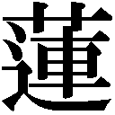

| ＮＨＫ連続テレビ小説 梅ちゃん先生 上 (NHK連続テレビ小説) | |
| 尾崎 将也 | |
| NHK出版 (2012) | |
梅ちゃん先生 上
作 尾崎将也
ノベライズ 蒔田陽平
梅ちゃん先生 上
装丁 mgrafico
帯写真提供 ＮＨＫ
登場人物紹介 【 】内は出演者名
下村梅子（しもむら・うめこ）【堀北真希】
下村家の次女。優秀な姉・松子や兄・竹夫に対して、「しょせん私は松竹梅の『梅』よ」と思い込むほど、不器用で取り柄のない女の子。ある日、大学病院の医者である父・建造が戦災孤児のヒロシを救う姿を目の当たりにして、医者という職業に強い憧れを抱く。医者になることを決意して、持ち前の頑張りで勉強に励み、みごと「城南女子医学専門学校」に合格。ときに迷いながらも、医療の道へと突き進んでいく。
下村建造（しもむら・けんぞう）【高橋克実】
梅子の父。養子として下村家に入った。帝都大学の医学部教授として働く。言葉少なく、いつもしかめっ面をしているためとっつきにくい、厳格な昭和の父。初めは梅子が医者を目指すことに反対するが、頑張る姿を見ているうちに、陰ながら応援するようになる。
下村芳子（しもむら・よしこ）【南 果歩】
梅子の母。夫の建造や子どもたちに温かな愛情を注ぎ、笑顔を絶やさず家族を支えている。いつも子どもたちを見守り、味方となる。何事に対してもおおらかに構えており、家族の中心的な存在でもある。バラバラになりそうな家族を結びつける要となっている。
下村松子（しもむら・まつこ）【ミムラ】
下村家の長女で、梅子の姉。容姿端麗で性格も優しく、勉強もよくできる絵に描いたような優等生。父の教え子で軍医の吉岡智司とは、将来を誓い合った仲だったが、戦争終結直前に智司が戦死してしまう。やがて企業に就職して、職業婦人となる。
下村竹夫（しもむら・たけお）【小出恵介】
下村家の長男で、梅子の兄。優秀で真面目な性格の持ち主。父・建造に憧れて医大生となるも、自分の意志による新しい生き方を求めて家を出ていく。その後、闇市で商売をする叔父・立花陽造のもとで働くようになり、徐々にビジネスの才覚を発揮していく。
下村正枝（しもむら・まさえ）【倍賞美津子】
梅子の祖母で、建造の養母。孫の竹夫や梅子が建造と衝突しても、決して出しゃばることはないが、時に的を射たことを言って周囲を驚かすこともある。梅子の本当のよさをわかっており、医専を受験すると言い出したときも、家族の中で一番に賛成し、応援する。
立花陽造（たちばな・ようぞう）【鶴見辰吾】
建造の実弟で、梅子たちの叔父。子どもの頃に建造が下村家へ養子に入ったためか、建造とは馬が合わない。世故に長け、戦後すぐに闇市で商売を始めて成功する。家を出た竹夫に商売を手伝わせたり、梅子に闇市を案内したりして、彼らに新しい世界を見せていく。
安岡幸吉（やすおか・こうきち）【片岡鶴太郎】
下村家の隣で、戦前から小さな旋盤工場を経営している職人。地道に働くことを信条としており、独自の道を進もうとする息子の信郎とはいつも言い争いをしている。だが、しだいに理解し合い、戦争で失った工場を親子ふたりで再びもり立てていく。
安岡和子（やすおか・かずこ）【大島蓉子】
幸吉の妻。いつも明るい、いわゆる下町の肝っ玉母さんといった感じの人物。喧嘩が絶えない幸吉と息子の信郎に仲よくしてほしいと願っている。松子や竹夫と比べられてばかりの梅子のことも、何かと気にかけている。
安岡信郎（やすおか・のぶお）【松坂桃李】
安岡家のひとり息子で、梅子の幼なじみ。父・幸吉の工場を手伝っているが、喧嘩ばかり。戦後、落ちていた薬莢を加工してライターを作ったことがきっかけで、モノ作りの大切さに気づく。やがて、自分にしかできないモノ作りにこだわりを持つようになる。
吉岡智司（よしおか・さとし）【成宮寛貴】
建造の教え子で、松子の婚約者。軍医として戦地に赴任し懸命に働くが、終戦を直前にして戦死。生前、梅子の本質を見抜き、「梅は春一番に咲き、皆に希望を与える花。君もそんな人になれる」と梅子を励まし、その言葉が梅子にとって大きな支えとなる。
ヒロシ（ひろし）【細田龍之介】
戦災孤児。賽銭を盗もうとした際、梅子と出会う。その後、食中毒で苦しんでいるところを建造に助けられ、その出来事が梅子が医者を志すきっかけとなる。
矢吹あかね（やぶき・あかね）【宇野実彩子】
父が戦死し、病弱な母と幼い弟妹を養うために闇市の食堂で働いていた。そこで竹夫と出会い、好意を抱くようになる。密かに歌手になる夢を抱いていたが、医専に入った梅子に刺激され、キャバレーの歌手募集に応募し、みごと採用される。
三上康子（みかみ・やすこ）【岩崎ひろみ】
下村家の近所に住む主婦。「食堂みかみ」を再開し、子どもを養いながら、夫・和也が復員するのを待っている。戦前から下村家とは親交があり、梅子たちも客として店を利用している。
三上和也（みかみ・かずや）【滝藤賢一】
康子の夫。終戦後も戦地からなかなか戻らなかったが、無事に帰還して家族と再会を果たす。だが、仕事はいいかげんで、妻・康子にられてばかりいる。
沢田弥生（さわだ・やよい）【徳永えり】
梅子の医専での同級生。入学試験のとき、隣の席の梅子が消しゴムを失くして困っているところを助けたことがきっかけで知り合いになる。
須藤雪子（すどう・ゆきこ）【黒川智花】
梅子の医専での同級生。碑文谷の大病院の娘で、お嬢様的な雰囲気があり、何かと場を仕切りたがる。弥生とはしょっちゅう衝突している。
瀬川典子（せがわ・のりこ）【西原亜希】
梅子の医専での同級生。夫が戦死し、ひとり娘を抱えながら勉強に励む。人当たりがよく落ち着きがあるので、グループのまとめ役的な存在。
園田江美（そのだ・えみ）【白鳥久美子】
梅子の医専での同級生。秋田出身で、最初は方言を気にして仲間の輪に入ろうとしなかった。徐々に心を開き、梅子たちと絆を強めていく。
山倉真一（やまくら・しんいち）【満島真之介】
建造の教え子で成績優秀な医学生。下村家を訪れた際に松子にひと目惚れし、その翌朝に求婚するも断られる。それでは梅子をと言い出し、一同にあきれられてしまう。
松岡敏夫（まつおか・としお）【高橋光臣】
中央医科大学の学生で、ダンスパーティーの相手を捜しに「城南女子医専」を訪れ、梅子と出会う。その後、梅子に勉強を教えるようになり、関係を深めていく。
真田伸吉（さなだ・しんきち）【平 岳大】
松子が勤める企業の先輩社員。かつては真面目で明るい性格だったが、復員後は酒と博打で散財し、あちこちで借金をしている困り者。
第一章 あたらしい朝が来た
昭和二十年八月。下村家の朝はいつも整然とした空気の中で始まる。家長である父の建造を中心に、母の芳子、長女の松子、長男の竹夫、祖母の正枝が小さなちゃぶ台を囲み、質素な朝食を静かに口へと運んでいく。しかし、落ち着いた時間は長くは続かない。
「へこたれない......へこたれない......へこたれない......」
悪夢にうなされる声は、家族の食卓の奥、部屋の隅から響いてくる。また何かドジなことをしでかし、られる夢でも見ているのだろう。
昭和二十年四月の空襲は、ここ蒲田の町を焼け野原に変えた。
焼けた家を、とりあえず雨風がしのげるように建て直したバラックは狭く、寝るのも食べるのも同じひと間で済ませなければならない。今は食べる時間なのだが、どうしてもそれに最初から加われない家族がひとりいるのだ。
「梅子、いいかげん起きないとまた工場に遅刻ですよ。職長さんにられますよ」
いくら夢の中とはいえ、人が苦しんでいる声を聞くのはあまり気分のいいものではない。静謐な朝の空気を乱す一番下の娘に、芳子がやんわりと声をかける。そんな妻を、「放っておきなさい」と不機嫌な声で建造が制す。
名門・帝都大学の医学部教授である建造は、腕のいい医者ではあるが四角四面の性格で、ドジで失敗ばかりの梅子とは対照的に、何ごともきちっとしていないと気がすまない。
「梅ちゃんは毎朝遅刻かご飯抜きかどっちかなんだから」あきれたように松子がつぶやく。
「つまり梅子は、遅刻して職長に怒られるか、朝飯抜きで空腹に耐えるか、いつもどっちか片方の試練を受けているわけか。ある意味では大物だな」楽しそうに竹夫がまぜ返す。
不意にうめき声がやみ、むくっと梅子が体を起こした。ねぼけまなこで近くにある時計を眺め、「あっ、こんな時間！」と慌てて立ち上がる。次の瞬間、「ガン！」とものすごい音がして、梅子はその場にうずくまった。寝床の電灯に思いきり頭をぶつけたのだ。
「いたた......」
結局、梅子は今日も朝食にありつけずに、空腹のまま学徒動員で働く工場へと向かった。前方に背筋をピンと伸ばした松子のうしろ姿が見えると、梅子はドタドタと走り、追いついた。松子も同じ工場で事務員として働いているのだ。
「あなた、また朝食食べそこねたのね。懲りないんだから」
「工場が遠くなったからよ」
「前の工場は焼けたの。仕方がないの」
「今の工場も焼けたらどうなるの」
「そうなるまでに、日本が勝つわ。きっと」祈るように言う松子に、梅子もうなずいた。
不器用で要領の悪い梅子は、同じ作業でも人一倍時間がかかる。自分に与えられた仕事を終えたときには、皆はすでに昼食を済ませ、工場の外の広場へと向かいはじめていた。今日は天皇陛下のありがたい放送があるから、全員集合して聞くことになっていたのだ。本来ならすぐに合流しなければならないのだが、何せ朝食抜きで長時間苦手な針仕事をしたあとだ。さっきからお腹が、食べ物をよこせとぐるるきゅるるの大合唱を始めている。
梅子はすばやく自分の荷物の中から弁当箱を取り出すと、小さなおにぎりを口に放り込んだ。
「整列！」
外から響いてきた監督官の声に、梅子は驚き、思わず胸を詰まらせた。ゲホゲホとむせながら胸を叩き、工場を飛び出した。
「こら、下村梅子！ 何をしておるか！」
梅子は焦って列に加わろうとして、何かにつまずいた。地面を走るコードを足で引っかけてしまったのだ。梅子は転がり、コードがラジオ本体の根元からブチッと抜ける。
「あ～っ!?」
監督官がすっとんきょうな声で叫び、職員たちがラジオの周りに集まる。その隙に梅子は立ち上がると、コソコソと隠れるように列に加わった。やがて、職員のひとりが輪を抜け、工場へと駆けだした。しばらくして、その職員がラジオを持って戻ってきた。うしろには松子ら数人の事務員が続いている。職員が台にラジオを載せ、スイッチを入れた瞬間、時報が鳴った。
「間に合った......一同、整列！」
監督官の声に皆が背筋を伸ばす。ラジオのスピーカーから玉音放送が流れはじめた。
雑音がひどく、うしろのほうに並ぶ梅子にはよく聞こえない。懸命に耳を澄ましているうちに放送が終わってしまった。
「もう終わり？ なんだって？」と梅子は隣の同級生、京子に ねた。だが、京子も「よく聞こえなかった」と首を振る。そのとき、監督官が呆然とした表情で口を開いた。
ねた。だが、京子も「よく聞こえなかった」と首を振る。そのとき、監督官が呆然とした表情で口を開いた。
「日本は、負けた......日本は降伏したんだ」
がっくりとひざを折り、その場に泣き崩れる監督官を、梅子は驚きの表情で見つめる。衝撃は徐々に学生たちにも飛び火し、すすり泣きがあちこちで漏れはじめる。梅子は実感がわかぬまま職員の列に並ぶ松子へと目をやった。松子は上気した顔で梅子を見ると、スッとその場を離れた。梅子はこっそりと列を抜け、松子のあとを追った。
工場の裏手に回ると、物陰にしゃがみ込んでいる松子の姿が見えた。
「お姉ちゃん、大丈夫？」声をかけ、梅子は松子の隣に腰を下ろす。
「......智司さんが......智司さんが、帰ってくる......」松子は震える声でそう言った。松子の顔にじわりと喜びが浮かんでいる。
「戦争が終わったのよ。智司さんが帰ってくるのよ」
松子はポケットから写真を取り出し、愛おしげに見つめた。その写真には、軍服姿の々しい青年の姿が写っている。父の教え子で、軍医として出征している婚約者の吉岡智司だ。松子の瞳に涙が れ、智司の姿がぼんやりと揺らぐ。
れ、智司の姿がぼんやりと揺らぐ。
「本当に？ ......智司さんが帰ってくるの？」
松子は梅子に向かって強くうなずく。「もう戦闘もないし、空襲もない......私たち、生きて会えるのよ」
姉の幸せそうな笑顔を見て、梅子の心にも喜びがわいてきた。梅子は思わず松子の手をとった。
「よかったね。お姉ちゃん」
「ありがとう」
日本が戦争に負けた......。
でも、戦争は終わったのだ。
工場に戻り、弁当の残りを食べながら梅子はぼんやりと思った。
もう怒られなくて済むのかな......。
軍事教練でも防火訓練でも軍服作りでも失敗を繰り返し、梅子は怒られてばかりだったのだ。
結局、午後からの作業は中止となった。
梅子が家に向かって歩いていると、瓦礫の中にかがんで何かしている人影が目に入った。見知った背中に、「ノブ、何してるの」と声をかける。隣家に住む幼なじみの安岡信郎だ。
「見ろよ、これ。時計だ。掘って売るんだ」
信郎の家はネジを作る小さな工場を経営していたが、空襲でその工場も焼け、大切な工作機械もだめになってしまった。
「怒られるよ」
「明日から世の中どうなるかわからないぞ。人が何言うかなんて知るもんか。手伝え。新しい時代を掘るんだ」
信郎らしからぬ格好のいい言葉に、ふと心が動く。梅子は落ちていた木切れを拾い、時計掘りを手伝いはじめた。ある程度掘れたところで、信郎は無理やり引っこ抜いた。しかし、それにはゼンマイが付いておらず、ただのガラクタだった。
「あははは」
「笑うなら、あっち行け」
ムッとした顔で言うと、信郎は背を向け、新たに違う場所を掘りはじめる。黙々と手を動かしつづける信郎を見ながら、梅子の心にいまだかつて感じたことのない感情がむくむくとわいてきた。梅子は信郎から少し離れた場所にかがむと、木切れで瓦礫を掘りはじめた。
新しい時代を掘るんだ──。
梅子が物心ついた頃に始まり、多くの犠牲を払った戦争がやっと終わた。そして、梅子にとっては人生という名の新たな戦いが今、始まろうとしていた。
翌朝、ちゃぶ台には下村家全員の顔があった。
「梅子が早起きしてるなんて珍しいわね」
隣でを動かす妹に、松子は少し皮肉っぽく言った。
「工場に行かなくていいと思うと、目が覚めてしまって」とあっけらかんと梅子が答える。
「それにしても、これからどうなるんでしょうね......」と芳子は不安げなため息をつく。「アメリカの兵隊さんがたくさん来るのかしら......松子は気をつけなさい」
梅子はそっと母をうかがう。視線を感じ、思い出したように芳子は「梅子もね」と付け加えた。
「智司さんはいつごろ帰ってくるんでしょうか。軍医もやっぱり捕虜になるんでしょうか」
「同じ軍人だ。当然そうだろう」と建造が松子に答える。しゅんとなる松子に芳子が「大丈夫よ」と声をかける。「無事帰ってくるって信じて待ちましょう」
「そうそう」と祖母の正枝も微笑みかける。「花嫁修業でもしながらね。お料理にお裁縫、戦争中できなかった分、いろいろやらないとねぇ」
「そうですよ。未来のことを考えましょう」そう言って、竹夫は松子から建造へと視線を移した。
「僕は来年から解剖実習なんです」
竹夫は父と同じ道を歩むべく医科大学に通っていた。
「そうか。解剖のときは目で見るだけじゃなく、絵を描いてみろ。見方がより緻密になる」
すっかり明るい雰囲気になった食卓に、梅子はひとり取り残されたような寂しさを感じる。女学校は燃えてしまって、いつ授業が再開されるかわからない。そんな梅子の現状に、家族は特に興味はなさそうだ。
自分はこれからどこに向かっていけばいいのかが少しも見えてこない......それが梅子にはもどかしかった。
できのいい姉と兄に比べると自分にはなんの取り柄もない。梅子は常に劣等感を抱きながら生きてきた。そして、そのことをいつも周りの人たちから意識させられ続けてきた。他人が姉や兄をほめる言葉は、そのまま梅子の心を傷つけた。女学校では教師から露骨に姉と比較され、「松と梅が違うのはしょうがないか」と苦笑されたりもした。
しかし、たったひとり、違う言葉をかけてくれた人がいた......。
梅子はあてもなくぶらぶらと焼け跡を歩きながら、智司のことを思い出していた。
松竹梅の梅。松や竹よりも下。自分の名前なんか大嫌いだと言ったら、智司はこう言ってくれたのだ。
「梅の花は春一番、桜よりも先に咲いて、皆に希望を与える花だ。君もそんな人になれると思うよ」──と。
あのとき、自分に向けてくれた智司の優しい微笑みを思い出すと、梅子は胸にポッと火が灯ったような温かな気持ちになるのだった。
ふと前を見ると、松子が憔悴した顔で座り込んでいる。梅子は駆け寄り、ねた。
「どうしたの？ 気分悪いの？」
「......さっき隣組のおばさんが話しているのを聞いてしまったの。西川さんの息子さん、戦死の公報が今日になって届いたんですって。捕虜になる心配だけじゃないのよ。もしかしたら......」
松子の不安は梅子にもうつり、沈黙が降りる。やがて、梅子は何かを思いついたように、「行こう」と松子の手をとった。
梅子が松子を連れてきたのは、近所の神社だった。松子と梅子は小銭を賽銭箱に入れ、目を閉じて手を合わせた。
「智司さんが無事に戻ってきますように......」
先に目を開けた松子は、口の中で何度もそう繰り返す梅子を見て、思わず抱きしめた。
「ありがとう。梅ちゃんは優しい子ね。私のために一生懸命お祈りしてくれて」
梅子は内心戸惑った。姉のためというよりは、自分が智司に会いたいのだ。死んでほしくないのだ。自分を強く抱く姉に少しうしろめたさを感じながら、梅子は「ううん」と首を振る。
配給所に行くという松子を見送り、梅子は神社の境内をぶらぶらする。すると、背後からガサゴソと物音がした。振り向くと、薄汚い身なりをした十歳くらいの男の子が賽銭箱をひっくり返していた。中から今入れたばかりの小銭が二枚、地面に落ちた。男の子はすばやくそれを拾う。
「ちょっと」と梅子は怒り顔で男の子へと向かっていった。「だめでしょ、そんなことしちゃ」
男の子は梅子をにらみつけ、「フン」と踵を返した。
「返してよ。私たちが入れたお賽銭なのよ」梅子は男の子の手をつかんだ。男の子はその手を振り払い、梅子をドンと押した。梅子はよろけて尻もちをつく。
「私とお姉ちゃんが......戦地にいる智司さんの無事をお祈りして、入れたお賽銭なの」
地べたに尻をついたまま梅子は訴える。男の子は何も言わず小銭を梅子の前に放ると、その場を去っていった。
梅子がその男の子、ヒロシと再会したのは、それからしばらくしてからだった。隣の安岡家の食べ物を盗み食いし、信郎に捕まったのだ。警察に突き出すかと騒ぎになっているところに「お腹すいたから泥棒するんでしょう。うちで何か食べていきなさい」と芳子が助け船を出し、下村家へと連れてこられたのだった。
しかし、ヒロシは出されたサツマイモに手をつけようとしない。意地っ張りな子だなと梅子は思う。ふと、梅子は部屋の隅に置いてある大きな皿に気づき、手に取った。
「このお皿、懐しい。家族で箱根に行ったときに作ったのよね」
裏の瓦礫の中から出てきたというその皿には、家族が寄せ書きをしていた。
「お兄ちゃんたら、『臥薪嘗胆』だって。この頃、中学生よね。変なの。お父さんのは......」
「あの人はいつも智恵の〝智〟っていう字」と正枝が梅子に答える。
「智恵の智か。お父さんらしい......お父さんは家でもいつもじっと黙って、難しい顔で本読んでばっかりで」
「何考えてるか全然わからない」と正枝が梅子のあとを引き取り、ふたりは吹き出した。そのとき、いきなりヒロシがその皿をとり、床に叩きつけた。派手な音がして皿が割れる。呆然とする梅子らを無視して、ヒロシは家を飛び出していった。
どうして......？
梅子は破片の一片を悲しげに見つめる。散らばった破片を片づけながら正枝がつぶやいた。
「空襲で家族を亡くしたんだろうねえ......」
八月三十日にマッカーサー元帥が連合国軍の最高司令官として日本に降り立ち、九月に入ると街ではジープに乗ったアメリカ兵の姿が目につくようになった。「鬼畜米英」と憎んでいたのに、身近で見かける彼らは笑顔で子どもたちに菓子を配ったりして、とても優しげだ。梅子は自分が今まで教わってきたことはなんだったのかと思う。
そんなことを考えながら、ジープに群がり米兵たちから菓子をもらっている子どもたちを眺めていると、そこにヒロシがやってきた。ヒロシはほかの子たちを押しのけてチョコレートを受けとると、すぐにその場を離れた。梅子は思わずそのあとを追った。
細い路地や建物と建物の間の狭い隙間をヒロシはネズミのようにちょこまかと通り抜けていく。梅子はあちこちにぶつかりながらも見失うまいと追いかける。やがて、ヒロシはある廃墟の前で立ち止まり、板壁に空いた穴にするりと体を滑り込ませるとそのまま姿を消した。梅子もあとに続こうと、穴へと体を入れるが、途中で引っかかってしまった。もがく梅子にヒロシが近づき、「フン」と笑う。ムッとした梅子は、力まかせに穴を抜けた。バキッと音がして、木片がパラパラと地面に落ちる。
「あっ、人のうち壊すなよ」
「ここがうち？」中に入って梅子が見回す。崩れ、傾いてしまった家屋には、子どもひとりくらいがなんとか暮らせる空間が残されていた。
「出てけ」
「私、謝りにきたの。あなた、ひとりぼっちなんでしょ？ ......なのに、私、家族で作ったお皿なんか見せて」
「関係ねえよ」
「だったら、どうして」
「どうせ、だまして働かせようってんだろ」とヒロシは不信感に満ちた目を梅子に向けた。
「働かせる？ どうして？ ......だましたりしない。また、うちにおいで」
ヒロシは黙ったまま答えない。そのまなざしから疑いの色は消えていなかった。
「ずっと泥棒するつもり？」
「まあな......その辺の川の魚でも獲って、食べていけるならべつだけどよ」
そう言うと、ヒロシはひらりと外へ飛び出していった。残された梅子は、ヒロシの〝家〟をあらためて見回した。そばに壊れた鍋や薄汚れた道具などが転がっている。おそらく焼け跡から拾ってきたのだろう。
ヒロシがひとりぼっちで暮らしている様子を想像するうちに、梅子の胸がチクリと痛んだ。
翌日、川原の土手をぶらぶらと歩いていたヒロシは、川に人影を見つけ、足を止めた。モンペをまくり、ひざまで水に浸かって、小さな網を振り回しているのは梅子だった。どうやら魚を獲ろうとしているらしいのだが、動きが鈍く、魚はおろか、ゆらゆらと流れてくる木の葉だってすくえそうにない。
何度も空振りしても梅子はあきらめず、今度こそと白く光る魚影に向かって網を勢いよく振り下ろす。あまりに気合いが入りすぎて、梅子は足を滑らせてしまった。
「あっ」という声のあと、バシャンと大きな水しぶきが上がり、梅子は川底に尻もちをついた。
ずぶ濡れになって岸に上がった梅子を迎えたのは、半笑いの信郎だった。梅子は気づかなかったが、どうやら岸辺に座って、ずっと見ていたらしい。
「何やってんだ、お前。魚なんか獲ってどうする。全然獲れてないじゃないか」
「ほっといてよ」
ふたりが土手のほうへと上がってきたので、ヒロシは慌てて木の陰に隠れた。
「あ、そういえば、さっき、お前のうちに復員姿の男が訪ねていったぞ」
「えっ......どんな人!?」と梅子は信郎を振り向く。
「背の高い、やせた男。焼け野原になったもんで道がわからない様子だったから教えてやった」
梅子の顔がパッと輝いた。「智司さん......」
梅子は持っていた網を信郎に押しつけると、外出中の松子のもとへ向かって駆けだした。
松子と合流した梅子が息を切らせて家に飛び込むと、復員兵姿の男が背を向けて立っていた。しかし、「よう」とにこやかに振り向いたのは、智司ではなく叔父の立花陽造だった。
戦争中、中国で商売をしていた陽造は、敗戦が濃厚だとみるや逃げ帰ってきたのだ。兵隊の格好をしているのは、この姿だと何かと待遇がいいからだと笑う。
昔からお調子者の楽しい叔父だった。堅物の父の弟とは信じられないくらいにいいかげんな性格で、そんな陽造に梅子はなんとなく親近感を抱いていた。
その夜は陽造が土産に持ってきたコンビーフの缶詰などの貴重な食料によって、久しぶりに豪勢な夕食となった。梅子の もついゆるむ。
もついゆるむ。
「それにしても松ちゃん、しばらく見ないうちに女っぽくなったな。いい男でもいるのか？」
松子に向かって軽口を叩く叔父を、梅子がジロリとにらむ。
「あ、梅ちゃんも」
「ついでに言わないで」
「このうちでそういう下品なものの言い方はやめてもらおう」
相変わらず堅い建造に陽造は少し笑った。
「そうだな、すまない。俺も下村家に養子に行ってたら、もうちっとは上品な人間になったんだが。ねえ、下村のお母さん」
「そうねえ。陽造さんを養子にしたら、どうなってたかしら。そのほうが楽しかったかもしれないわね」
「言いますねえ、お母さんも。ハハハ」
遠回しに非難されているようで、建造は面白くない。不機嫌そうに料理の皿にを伸ばす。
「おじさん、これから仕事はどうするんですか」と竹夫が話題を変えた。
「なんか商売やって、一発当てるさ。新橋の駅前に露店が並んでるのを見た。誰でも売るものさえあれば、自由に商売ができる」
「何かツテでもあるんですか」
「そんなものはなんとでもなるんだよ。これからの時代はな」と陽造は自分の頭を指さした。
「ここの違いがモノを言う。才覚次第でどこまでも上がっていける。ばか正直にやってたんじゃ、頭のいい奴にやられる。面白い時代になるぞ」
竹夫は陽造の話を真剣な表情で聞いている。
建造は弟のこういう軽いところが気に入らず、「人をだましてうまくやるのがいいのか」とつい非難めいた口調になる。
「そんなこと誰も言ってないだろ。ま、兄貴は裕福な家に養子に行って、何不自由なく学問さしてもらって、金けなんて考えなくても生きてこられたんだろうが、普通の人間にとっちゃ、金があるかないかが大問題なんだよ」
「いつまでそうやってひがみ根性で生きるつもりだ」
「ハハハ、相変わらず口が悪いなあ、兄貴は」
陽造は軽く笑って、「この家の人たちには縁のない話ばかりしちまったかな。そろそろおいとまするか」と立ち上がった。
家の外に送りに出た梅子は、陽造にねた。「時代が変わると......私でも何かできるかな」
「もちろんさ。誰だって、自分の得意なことを見つけてやればいいんだ。梅子は何がしたいんだ」
「え......さあ......」
「ま、何か見つかるさ。またな」と陽造は笑顔で去っていった。
数日後、ようやく女学校の授業が再開された。とはいえ校舎は焼けてしまったので、校庭で青空教室だった。雨が降れば授業は中止である。
その頃、蒲田の駅前にも小さな市場ができ、露店がいくつか並ぶようになった。その中の一軒の古道具屋で信郎は働きだした。古道具屋の隣では靴磨きの人たちが並んで商売をしている。その光景を見て、梅子はピンときた。
梅子はすぐに靴磨きの道具をえると（といっても木箱と布きれだけであるが）、渋るヒロシを無理やり市場まで引っ張ってきた。
「ここに座って、『磨いていきませんかー』って」と梅子は手本を見せる。
「働けば、泥棒なんかしなくても生きていけるよ」
「やなこった」
「ちょっと」去ろうとするヒロシを追いかけようとしたとき、梅子の前に足が差し出された。
「簡単でいいからよ。ちゃっちゃとやってくれ」
客はこわそうな雰囲気の男で、すでに持っていた新聞を読みはじめている。仕方なく梅子は、おっかなびっくり靴を磨きはじめる。そんな梅子の姿をヒロシがばかにしたように見つめる。すぐそばを同じ学校の生徒たちが通り、梅子は慌てて顔を隠す。手がおろそかになり、「おい、早くしろよ」と怒られては、梅子は冷や汗をかきながら懸命に手を動かすのだった。
結局、ヒロシは靴磨きをやろうとはせず、梅子は徒労感にうちのめされながら家路についた。家が見えてきたとき、梅子は郵便配達人に声をかけられた。番地が消えかかっていてしばらく止めていましたと、配達人は申し訳なさそうに一枚のハガキを梅子に渡す。差出人のところには、吉岡智司の名があった。梅子は顔を輝かせて、駆けだした。
ちょうど松子も帰ってきたところだった。「お姉ちゃん！」と梅子はハガキを渡す。
「智司さん！ ......智司さんからだわ！」
ふたりが満面の笑みで家に入ると、中には建造と芳子と正枝が座っていた。暗く深刻な表情を向けられ、松子と梅子の顔から笑みが消える。
「お父さん......早いのね」と梅子が探るようにねる。
「ああ......話があって、帰ってきた。吉岡君のことなんだが......」
「帰ってくるんですね？」と松子は再び笑顔になる。「智司さんからハガキが来たんです」
建造は驚いたように松子に近づき、その手にあるハガキを取った。
「これは......日付が八月三日だ」
松子は不安げに建造を見つめる。建造がゆっくりと口を開いた。
「吉岡君は......戦死した。八月十日のことだそうだ」
「え......」
絶句する松子の隣で、梅子は「今のは聞き間違いだ」と心の中で必死に繰り返していた。しかし、そんな祈りもむなしく、建造は続ける。
「今日、病院に彼のお姉さんが見えて、話を聞いた。彼は飛行場の近くにある軍の病院にいたそうだ。その飛行場が空襲を受けて、医者や看護婦たちは患者を避難させようとした。もう間に合わない、残りの患者はあきらめるしかない。上官がそう判断しても、吉岡君は最後のひとりまで見捨てようとせずに、作業を続けたそうだ。自分では動けない患者を抱きかかえて、必死に......そこへ、爆弾が......」
白くなった顔をそむけ、松子は部屋を出ていった。梅子はすぐにそのあとを追った。松子は家の前の道に立ち、智司からのハガキを見つめていた。
ハガキに松子の涙がポトリと落ちる。松子のひざが崩れ、そしてくぐもった嗚咽が聞こえてきた。そんな姉の姿を見ながら、梅子のにも涙がつたっていく。
その夜、松子は高熱を出して寝込んだ。額に濡らした手ぬぐいをあて、苦しそうに呼吸する松子に目をやり、竹夫がつぶやく。
「僕は......松子姉さんに申し訳ないです。僕がもっと早く軍医になって、戦地に行ってたら、吉岡さんの代わりになれたかもしれない」
「ばかなことを言うな」と建造がりつける。
「優秀な医者をひとり失った。あとに残った者がその穴を埋めるんだ」
「......お父さんは、責任を感じないんですか」竹夫は思い切って、敗戦以来心の中にわだかまっていた気持ちを父にぶつけた。「お父さんは、吉岡さんが軍医に志願するのを止めましたか」
「いや......」
「だったら、お父さんが彼を戦地に送り込んだも同然じゃないですか。お父さんはあの戦争に勝てると思ってましたか。負けるとわかってて、どうして......しかも松子姉さんの婚約者なのに」
建造は口をへの字に結んだまま何も言わない。気まずい沈黙を破ったのは、松子だった。
「やめなさい、竹夫......」
布団から半身を起こした松子を、皆が振り向く。
「お父さんを責めないで......そんなことをしたら、智司さんを汚すことになるわ」
「え......」
「智司さんは、戦争で傷ついた人を助けるために喜んで戦地に行ったのよ......聞いたでしょ？
あの人は、患者さんを最後まであきらめずに助けようとして、亡くなったの。あの人らしいわ。私......智司さんのことを好きになってよかった。私......あの人の分も、生きないといけないの」
松子の健気な言葉に、芳子と正枝の目から涙がこぼれる。竹夫は打ちのめされたようにうつむき、梅子も涙ぐんだ。松子は建造を強く見つめ、言った。
「お父さん、私、明日から智司さんのご実家に行ってきます。ご両親は、きっと力を落とされてると思うの。私にできることがあればしてあげたいの」
「そうか......行ってきなさい」
翌朝、松子は千葉にある智司の実家へと向かった。竹夫は前夜に建造と喧嘩したのが気まずかったのか、大学で実験があるから二、三日泊まり込むと言って、家を出た。
一方で、梅子はまだ気持ちの整理がつかずにぼーっとしていた。市場の近くをぼんやりと歩いていると、信郎の父、幸吉と出会った。幸吉は工場を再開するための工作機械を探しているのに、信郎が手伝ってくれないと嘆く。幸吉と別れると、すぐに当の信郎が物陰から出てきた。どうやら父親から逃げ回っているらしい。
「こら、ノブ。どうしてお父さん、手伝わないの」
「工場の仕事なんてごめんだ......毎日毎日ネジばっかり作っても、安く買いたたかれてちっともかりゃしねえ。工場なんか、焼けちまって清々してるんだ」
「古道具屋で店番してるほうが楽しいの？」
「やめたよ、あんな仕事。もっとかることをやるんだ。ひとけしたらごちそうしてやるよ」
梅子は笑わず、真剣な目を向ける。
「......姉ちゃんの婚約者、死んだんだってな。ひとつ、いいこと教えてやろう。来いよ」
信郎はそう言うと、梅子を市場へと連れていった。
「ほら」と信郎が見せたのは、古道具屋の隣で靴磨きをしているヒロシの姿だった。目を丸くする梅子にヒロシが気がついた。決まりが悪そうにヒロシは仕事を続ける。
「働いた金で買ったイモはうまいな」
しばらくして、梅子とヒロシが川辺に並んで座って焼きイモを食べていた。客が引けたので、ヒロシが梅子を誘ったのだ。
「ヒロシ君にごちそうになるおイモはおいしい」梅子に言われ、ヒロシは照れ笑いする。
「そうだ。うちのお母さんが作るおはぎ、すごくおいしいの。材料が手に入るようになったら、作ってもらってごちそうするね」
「うん」とうなずいたあと、ヒロシはおもむろに身の上話を始めた。
「俺、空襲で親が死んで、一度、水戸の親戚に引き取られたんだ。白い飯食わせてくれて、なんて親切なんだろうって思った......けど甘かった。飯食わせてやったんだから働けって、荷物かつぎやらされて、稼ぎが悪いと殴られてよ。おじさんが言ってたよ。ただの親切で飯を食わせるばかがどこにいる。こき使えると思ったから引き取ったんだって。だから、親切な顔して近づく奴は信用しちゃいけないって思ってた」
「そうだったの......」
「なんで、こんなに親切にしてくれるんだ？」
「私......ある人に言われたの」と梅子は智司にもらった言葉をヒロシに話した。春一番に咲いて皆に希望を与える梅の花のような、そんな人に自分はなりたいのだ、と。
「その人は......」
「......戦死した」
「そうか......」
それきり黙って、ふたりは焼きイモを口に運んだ。
古道具屋の店主が下村家を訪ねてきたのは、それから数日後のことだった。ヒロシが店の品物を盗んだから弁償しろというのだ。どうしてヒロシの仕業だと決めつけるのかと梅子がねると、店主は、近くにはヒロシしかいなかったし、もともと泥棒ばかりしていた性根の腐った奴だからと言い放った。
店主が帰ると、建造は「お前は一体何をしてるんだ」と梅子を詰問した。
「あの子を助けてあげたいと思って......」
「お前は女学生だ。何をするにも、自分の本分を守ったうえでやれ」
「何かわけがあるんじゃないかな......私がヒロシ君を見つける。あの子は泥棒なんか」
そう言うや、梅子は家を飛び出した。
いつものねぐらにはヒロシはおらず、梅子はあてもなく町を捜し回った。やがて日が沈み、あたりが暗くなってきた。梅子は途方に暮れながら焼け跡の道を歩いていく。
その頃、下村家では梅子が戻ってこないと騒ぎになっていた。事情を聞いた信郎が、捜してくると飛び出した。建造も心配して家の前をウロウロしている。
月明かりが崩れた建物をうっすらと照らしている。その陰から子どもの細い足がチラリと見えたような気がした。かすかなうめき声のようなものも聞こえてくる。梅子は恐る恐る近づき、のぞき込んだ。横たわって苦しんでいるのは、ヒロシだった。
「ヒロシ君！ 一体どうしたの!?」
額に手を当てると信じられないくらい熱い。「ひどい熱よ」
「俺......隣の店で泥棒した奴を見つけて......追いかけたんだ......でも逃げられて、道に迷って。腹が減ってよ......そしたら、道にまんじゅうが落ちてて」
「え、食べたの？」
ヒロシは苦しげにうなずいた。「そしたら、このザマだ......腹は痛いわ、吐き気はするわ」
「どうしよう......」
このまま放っておいたら死んでしまうかもしれない。ヒロシを助けられるのは、自分しかいない──梅子は覚悟を決め、ヒロシをその背に担いだ。
家までの道のりは信じられないくらい遠かった。途中で息が上がり、何度も足が止まった。何かにつまずき、倒れもした。そのたびに「お前は松竹梅の梅なんだから」という声が頭の中で響く。何もできない一番下の梅子......。
梅子はその悔しさを みしめて、力を振り絞った。歩みは遅いが一歩ずつ家へと近づいていく。
みしめて、力を振り絞った。歩みは遅いが一歩ずつ家へと近づいていく。
ガラッと戸が開き、梅子が倒れ込んできた。
「梅子！ お前はどうして──」
ろうとした建造は、背中にいる男の子の姿を見て、その口を閉じた。
「お願い！ ひどい熱なの」
ヒロシの様子を見ながら、梅子から事情を聞いた建造は眉根を寄せる。
「食中毒だな......輸液が必要だ。この状況なら注腸しかないが、それにしても道具と薬がいる。うちから一番近いのは、沼町の横田医院か......」
「私が行く」とすぐに梅子が言った。そこに梅子を捜していた信郎が帰ってきた。梅子の姿を見て、へなへなと崩れ落ちる。「ちょうどいい」と建造は紙に必要な物をメモし、信郎に渡した。苦しむヒロシを見て状況を察した信郎は、文句も言わず、再び夜の町へと飛び出していった。
「湯をわかしてくれ。大きい鍋にだ。梅子は洗面器に水を入れてくれ」
建造はテキパキと皆に指示すると、応急処置へと取りかかった。
「梅子、肩をさすって名前を呼んでやれ」
「はい......ヒロシ君」
「......梅ちゃん......」とヒロシがうっすらと目を開けた。「すまないな。面倒かけて」
「何言ってるの」
「父ちゃんと母ちゃんが死んでから、初めてだ。こんな親切にしてもらったのは。でも......もういいよ。俺なんか、生きてても人に迷惑かけるばっかりで......もうこのまま......」
「だめ。生きるのよ。戦争で、生きたいのに死んでいった人たちがたくさんいるのよ......私たちは、その人たちの分も生きなきゃいけないの」
「......けど......生きてたって、いいことなんか」
「ううん。きっといいことがある。頑張って生きていれば、きっと神様がごほうびをくれる。だから......生きて」
「そうかな......」
「そうよ。絶対そうよ......うちのお母さんのおはぎ、おいしいよ......食べると、甘くて、幸せな気持ちになれるの」
「そうか......」
ヒロシは微笑み、そしてゆっくりと目を閉じた。
「ヒロシ君！」
片道半里の道を休まず駆け続けた信郎が戻ってきた。建造は梅子を助手にして、ヒロシの手当てを行った。処置が終わると、ヒロシの呼吸は安定し、穏やかな表情になった。
「これで当面は大丈夫だろう」と建造は立ち上がり、外の空気を吸いに出ていった。
すでに空は白みはじめている。井戸で顔を洗っている建造に、梅子が近づく。
「お父さん、ありがとう......」
顔をふいて、建造が振り返った。
「お父さんて、すごいのね」
「医者が病人を治療するのは当たり前だ......医者の力より、すごいものがある」
「何？」
「......母さんのおはぎは、たしかにうまい。早く皆で食えるようになるといいな......」
そう言うと、建造は家へと戻っていった。背中を見送りながら、梅子は医者という仕事のすばらしさを、そして、その仕事といつも真剣に向き合っている父の大きさを実感するのだった。
下村家で何日か療養し、元気になったヒロシは、水戸の親戚のもとへ戻る決意をしていた。
「じゃあ。世話になったな」
「親戚のおじさんのところ、我慢できそう？」と梅子が心配そうにねる。
「助けてもらった命だ。多少のことは我慢する」
「元気で......頑張ってね......」
「水戸に行ったら、梅ちゃんとはもう会えないな......」とヒロシは寂しそうな顔になった。
「おはぎ、食いたかったけど」
「でも......もっといいことがあるよ」
「そうかな......」
「そうよ......きっとそうよ」
「ま、信じて頑張ることにするよ」
梅子はヒロシに向かって強くうなずく。
「じゃあな。治してくれて、ありがとう」
「病気を治したのは、私じゃない」
「ううん、梅ちゃんだ......梅ちゃんが治してくれた」
ヒロシはそう言うと、踵を返した。少し歩いて、振り向く。
「さよなら、梅ちゃん先生！」
笑みを残し、ヒロシは去っていった。
生きていれば、きっといいことがある──。その言葉は、自分に向かって言っていたのかもしれない。
小さくなっていく背中を見ながら、梅子はそう思った。
第二章 かがやく未来
先の戦争では、食料や衣類など、生活必需品の多くは配給によって人々の手に届けられていた。昭和二十年は、戦争による生産活動の停滞に加え、かつてない大凶作で深刻な食料不足に陥り、配給も滞りがちになっていた。わずかな配給に多くの人が群がり、長時間列に並んでももらえないこともあった。
厨房に立つ梅子を、芳子と正枝が心配そうにうかがっている。そこに松子が帰ってきた。
「ただいま......どうかしたの？」
「梅子がどんぐりの粉を料理するって言うのよ」
「えっ、梅子が料理......不安だわ」と松子は食材よりも料理人のほうに驚く。
「大丈夫。調べてきたから」梅子が配給でもらったどんぐりの粉をこねながら答える。
しかし、皆の不安は的中した。梅子が作ったどんぐり料理は、アク抜きが甘かったためにとんでもなく渋く、とても食べられたものではなかった。
そんな庶民の食料事情とは対照的に、市場ではさまざまな食べ物が売られていた。しかしどれもかなり高価で、梅子が手を出せるものではない。屋台の前で、湯気を立てているおいしそうな肉まんを物欲しげに見つめていると、「梅子じゃないか」と声をかけられた。振り向くと叔父の陽造が笑顔で近づいてくる。
「ん？ 肉まん食いたいのか。買ってやろうか？」
「え......でも、私だけごちそうになるのは......」
「そうか。じゃ、皆呼べよ」
しばらくして、市場の中の食堂に、松子、竹夫、梅子が顔をえていた。店員が三人の前に丼を置いていく。手酌でビールをグラスに注いだ陽造が、「さあ、食え」と三人をうながす。
「困るわ。梅子がちょっと用事があるっていうから来たら、こんなの......お父さんに知られたらられるわ」
困惑する松子に、「内緒にしとけばいいだろ」と陽造はお気楽に答える。
「せっかくだし、堅いことは言わないでいただきましょう」と竹夫が姉をうながす。
「そうね......じゃあ、いただきます」
梅子は待ちきれないようにカツ丼を口の中に放ると、なんとも言えない幸せな気持ちになり、「おいしい......」と思わず言葉がもれる。
「本当にうまいな......飯を食ってうまいと思ったのっていつ以来だろう」と竹夫も感動の面持ちになる。
「庶民の生活はますます迫しているらしいな」
「おじさん、庶民じゃないみたいな言い方ですね」
陽造は財布を出して、チラリと見せた。中は札束がぎっしり入っている。皆の目が丸くなる。陽造はすぐに財布をしまうと小声で言った。「あんまり金持ってるのを見せていい場所じゃないからな。気をつけないと」
松子は少し嫌悪の表情で陽造を見る。一方、竹夫は興味津々だ。
「どうやって稼いだんですか？」
「ま、いろいろとな。要は、品物をあっちからこっちに移動させるだけのことだ。不思議なもんで、同じ物があっちとこっちで値段が違うんだ。その差額をいただくというわけだ。自分の欲望に忠実に生きるっていうのはいいもんだぞ。お前たちの親父は、こういうの嫌いだろうがな」
「私も好きじゃありません」と松子はきっぱりと言った。
「ハハハ、嫌われたか。まあ、もうすぐ嫁に行っちまう娘に好かれてもしょうがないけどな」
松子はハッと目を伏せた。竹夫と梅子の手も止まる。
「どうした？」
「......智司さんは......戦死されました」
「えっ」と驚き、陽造は言葉を探した。「そうか......それは......」
「大丈夫です。私、彼の戦死を知らされて、じっとしてるとおかしくなりそうで......彼の実家にご両親のお世話をしに行ったんです。三日もした頃、もういい、帰りなさいとご両親に言われて......私はもっといたいと言って泣きました。そして、泣いてるうちに気づいたんです......これ以上ここにいても、彼との思い出の中に逃げてるだけだ......もう、彼のことに区切りをつけるときなんだ......そう思って......帰ってきました」
自分に言い聞かせるような松子に、姉はまだ智司の死によって心に空いた穴をふさごうと必死に闘っているのだと梅子は思った。
「まあ、あれだ......もし俺の助けが必要になったら、いつでも訪ねてこいよ。この辺で立花陽造って聞けば、すぐわかる。あ、おかわりはどうだ。いらないか？」
松子と竹夫が遠慮する中、梅子だけがおかわりをお願いし、そんな梅子をあきれたように松子と竹夫は見つめるのだった。
その日の夕食はいつもよりも量が多く、充実していた。建造が患者から食材をもらってきたのだ。しかし、昼間食べすぎた梅子は食が進まない。そのうちお腹を押さえて苦しみだした。
「どうした。腹が痛いのか」
「病気じゃありません。大丈夫です」と梅子は父に答える。
「じゃあ、どうした」
梅子は迷った末に、陽造にカツ丼をごちそうになったことを白状した。正枝は、「急にそんなもの食べるから、お腹がびっくりしたんだわ」と苦笑する。
「お前だけか」と建造は梅子を厳しく見すえる。
「はい......」と答え、梅子はお腹を押さえて便所へと立った。
「しょうがない奴だ。意地汚い。松子や竹夫とはどうも違うな、梅子は」と建造はため息をつく。松子と竹夫は視線を交わし、うなずき合った。
「あの......それは違います」と竹夫が答えると、松子もそれに続いた。
「......本当は、私と竹夫も一緒にごちそうになったんです」
「梅子は僕たちをかばってくれたんです」
松子は衣類の下に隠してあった紙袋を取り出し、それを建造に見せた。中には焼きイモが三つ入っていた。「梅子がおじさんに頼んでくれたんです」
梅子のおかわりは父母と祖母のためだった。しかし、竹夫がおじさんにごちそうになったことは内緒にしておこうと言ったから、出すに出せなくなってしまったのだ。
「まったく......しょうがない奴だ......」
焼きイモを見つめる建造の目がふっとゆるむ。その頃、梅子は井戸で手を洗いながら、戻ったら絶対建造にられるとビクビクしているのだった。
千葉の農村を竹夫と梅子が歩いている。ふたりは食料を求め、買い出しにきたのだ。背中のリュックには母や祖母の着物が入っている。それらを野菜と交換してもらおうというのだ。農家を見つけて竹夫が入っていくと、すぐに梅子も続いた。
「すみません、野菜を分けていただけませんでしょうか」
出てきた農家のおかみさんはふたりを値踏みするように見つめる。「何持ってきたの」
竹夫はリュックから着物を出して、それを縁側に置いた。
「着物ばっかりもらってもねえ」とおかみさんは家の奥に目をやる。そこには着物がどっさりと積まれていた。「お願いします」とふたりは頭を下げた。どうにかして野菜を調達しないと、家にはほとんど食料がないのだ。
「あんたら東京もんは、うちら田舎もんをばかにしてたくせに。食べ物に困ると急にぺこぺこ」
「僕たちはべつに東京の人間の代表ではありません」と竹夫はムッとした顔になる。
「口答えする気かね。帰ってもらおう」
おかみさんは納屋に入ると、ぴしゃりと戸を閉めた。
「なんだ......ほかのとこ行くぞ」
しかし、ここ最近東京からの買い出しが増えたのと、竹夫の交渉下手もあって、なかなか野菜は手に入らなかった。空振りを繰り返し、竹夫は焦ってきた。五軒目に訪ねた農家は子どもたちがいるだけ。親はまだ畑から帰っていないと言う。待っている間、梅子はその子に草を編んで虫の人形を作ってあげた。竹夫がしびれを切らしたとき、ようやく母親が帰ってきた。
「母ちゃん、見て。作ってもらった」と女の子が駆け寄る。
「ほう、うまいもんだ。あんたらどっから来たの」と母親は梅子にねる。
「東京から......買い出しにきました」
「あいにく今、出荷したあとでね」と母親は申し訳なさそうに答える。
「そうなんですか......」
竹夫があきらめて行こうとすると、「もっと作って」と娘が梅子のそでをつかんだ。その様子を見て、母親が言った。「ま......何かあるだろう。お入んなさい」
帰り道、野菜でいっぱいになったリュックを背負って、ふたりは駅へと向かっていた。大収穫に梅子はルンルンだが、竹夫は不機嫌にずんずんと歩く。自分が必死に交渉してもだめだったのに、梅子が子どもの相手をしただけでこんなにも野菜が手に入ったのが竹夫にはどうしても解せなかった。しばらくして竹夫は土手を下り、木陰に腰をおろして休憩することにした。隣に座った梅子に「飲むか」と水筒を差し出す。
「陽造おじさんなら、適当にうまいこと言って、簡単に交渉をまとめるんだろうな」
梅子から返された水筒の水でのどをうるおし、竹夫もひと心地つく。
「この間、おじさんにごちそうになったとき、どう思った？」
「おいしかった」
「ばか、そうじゃないだろ。右から左に物を動かすだけでばかみたいにかるなんて......何も作り出すわけでもないのに」
「......でも、竹夫兄さんはお医者さんになるんでしょ？」
「ああ......」
「ヒロシ君から手紙が来たの。元気で頑張ってるらしいわ。お父さんがもしあのとき、助けてくれなかったら......お医者さんて、すてきなお仕事だと思うわ。それを目指して勉強してるって、すごいことだと思う」
まっすぐな梅子の言葉に、少し戸惑いながら竹夫は答える。
「わかったようなことを言うな。誰も医者がくだらないなんて言ってない。ただ......俺は恵まれた環境でぬくぬくと育ってきた世間知らずなんだ。医者になるにしても、このままでいいのかってことだ」
じっと考え込む竹夫を見ながら、なんの問題もない優等生だと思っていた兄が、悩みを抱えていると知って、梅子は驚くのだった。
幸吉が中古の工作機械を、家の横に作ったささやかな作業場に取り付けている。いやいやながら信郎も手伝う。ベルトをかけ、足踏みを踏むとギシギシと音をたてながら機械が動き出した。
「よし......なんとかなりそうだな。これでまた仕事ができるぞ。工場の再開だ」
「ふん。またネジを切る代わりばえのしない毎日か。親父は古いんだよ。これからはちまちまとネジを作る時代じゃないんだ」
「じゃあ、ほかに何をやるってんだ。言ってみろ！」
「さあな」と信郎は作業場を出ていく。
建造と竹夫が顔を洗っていると、信郎が早足で通りすぎた。あとから幸吉が追ってくる。
「お前は怠けたいだけだ。そうだろう！」
去っていくふたりを見送った建造が顔をしかめてつぶやいた。
「戦争が終わったとたん、楽してけようとする奴が増えた」
「......でもお父さん、不正をするならともかく、陽造おじさんのように自分の才覚でけてる人もいるんです。物を右から左に動かすだけでけになると言ってました」
「そんな生活がしたいのか」
「いえ、そんなことは......ただ......真面目な人間が食うや食わずなのに、どうしてこんな違いがあるんだろうって」
「人の役に立って感謝されてこそ、意味がある。金じゃない」
竹夫は「はあ......」と不服そうな顔を隠さない。
ふたりのうしろで井戸の順番を待っていた松子が、そんな弟に心配そうな視線を送る。
松子の心配が現実となったのは、それからまもなくのことだった。掃除をしていた梅子が、竹夫の医学書の間から質札を見つけたのだ。
「どうして竹夫が質屋なんかに......」梅子に相談され、家の前で松子が思案していると幸吉が通りかかった。目ざとく手の中の質札を見つけ、「大学の先生も質屋の世話になるほど苦しいか」とうれしそうに寄ってくる。
「違います。父じゃありません」
「じゃ、誰......まさか松ちゃんや梅ちゃんじゃないだろうし」と質札を松子から取り上げる。
「えっ、竹夫君か......意外だな」
幸吉は何かを考え、合点がいったとばかりにニヤリと笑う。そして、「これだな」と小指を出した。「若い男が急にふさぎ込む。質屋で金を借りる。ほかにどんな理由があるってんだよ」
「いろいろあるんじゃないでしょうか」と松子がムッとして答える。
「ないない。これだけ」と再び小指を立て、幸吉は楽しそうに去っていった。
家に戻ったふたりは、机の上に置いた質札を見ながら、どうしたものかと首をひねる。とりあえず松子が竹夫から事情を聞くと決めたとき、建造が帰ってきた。まだ質札は机の上に置いたままだ。梅子はとっさに机の上に座り、尻の下に質札を隠した。松子は顔をしかめた。隠すにしても、それはない。案の定、建造が言った。
「何してる。行儀の悪い。どきなさい」
「はい......」と梅子は尻を机につけたまま、ズルズルと横に移動する。不自然な動きで立ち上がりながら尻の下から質札を取ると、ふぅっと安の息をついた。
「......何を隠した」
「......いえ」
「いや、今何か隠した。見せなさい」
万事休す。観念した梅子が質札を建造に差し出した。
「質札じゃないか......竹夫が？ なぜ隠す」
「私たちで、まず確かめようと思ったんです」と松子が梅子をかばう。
「そういうことは親の役目だ」
「ごめんなさい」とふたりは建造に頭を下げた。重い空気が家の中に漂ったそのとき、場違いに明るい声が玄関のほうから聞こえてきた。芳子と正枝と一緒に幸吉が入ってきたのだ。
「安岡さんがこれ直してくれたの。何かお礼しなくちゃ」と芳子がラジオを見せる。
「いいんだよ。ところで、竹夫君のこれ、どうだった」と幸吉は小指を立てた。
「なんだ、それは」と気色ばむ建造を、幸吉が小ばかにしたように笑う。
「知らぬは親父ばかりなりってか」
「あっ、これ......」と建造は質札のことかと気がついた。
「何が悪いんだよ。大人になったとほめてやれ」
「自分の息子でもそう言えるか」
「おう。赤飯炊いてやるよ」
そこに「ただいま」と竹夫が帰ってきた。「何を喧嘩してるんですか」とのんきな声を出す。ピーンと張りつめた空気の中、幸吉は竹夫の肩をポンと叩き、出ていった。
「話がある」建造の真剣な表情に、竹夫の顔にも緊張が走る。
「はい......実は僕もお父さんに話があるんです」
竹夫の返事に、今度は建造が動揺する。向かい合って座ると、まず建造が口火を切った。
「お前も二十歳だ。いろいろあって当然だ。しかし、隠し事はよくない」
「すみません。いつお話ししようかと考えていたんです。ちゃんと今後のことを決めてから、と思ってました」
「......どんな人だ」
「え？」
「......学生なのか」
「いや」答えながら、竹夫は話が微妙にみ合っていないことに気がついた。
「え......芸者とかそういう類いの女なのか」
「あの......何の話ですか？」
建造は幸吉に一杯食わされたと気がついた。「......女のことじゃないんだな？」
「女？ まさか。違いますよ」
固唾をんで見守っていた女たちが、一斉に安の表情に変わる。なぜ、そんな話になったのかと竹夫にかれ、もともとはこれが原因だと松子が質札を見せる。
「ああ。これは大学の友達にどうしても学費が足りないと泣きつかれまして。仕送りが来るまでという条件で貸したんです。女に入れあげてるとでも？ 心外です」
「......失敬。で......お前の話とはなんなんだ」
「はい......僕はこのところいろいろと考えてたんですが」
そこで一拍置いて、竹夫は建造をしっかりと見つめた。
「医者になるのをやめようと思います」
「なんだと......もう一度言ってみろ」
「大学を中退します。医者になるのをやめて、別の道を探そうと思います」
家族全員に衝撃が走る。ざわつくみんなを建造が静め、竹夫に話を続けさせた。
「僕は、これまでお父さんの敷いたレールに乗って、なんの疑問も抱かずに生きてきました。戦争中は、お国のためにという意識もありました。でも、戦争が終わって、これからは民主主義の時代が来る。それぞれの人が自由に自分の生き方を選べる時代が来ると言われると......僕は、自分が自分の意志で生きてこなかったことを痛感するんです」
「医者になりたくないのか」
「医者という職業の価値を感じなくなったわけじゃありません。やりがいはあるし、すばらしい仕事だと思います。これまで学校に通わせてくださったことにも感謝しています」
「だったら......これからの日本に医者はひとりでも多く必要なんだ」
「それはそうです。でも僕は、自分が医者に向いているかどうか、わからなくなったんです。本当に自分に向いていることをやりたいんです」
「だったら何をやりたいというんだ」
「それはまだわかりません。これから探すんです」
その言葉を聞いて、「甘えるな！」と建造は雷を落とした。しかし、竹夫は動じない。
「甘えてません。むしろ僕は、親が用意したレールに乗って生きていくだけのほうがよほど甘えてるんじゃないかと思います。自分で自分の道を探そうとするほうが厳しい道だと思います」
「立派なことを言うが、底が知れてる」
「どういうことですか」
「お前は、陽造が楽して金をけるのを見てうらやましいと思っただけだ」
「そんなんじゃありません。たしかに昨今の庶民の困窮の様子を見たり、アメリカの豊かさについて聞いたりすると、経済の大切さを痛感します。でも、それと楽してけることは別です。陽造おじさんだって、楽してけてるとは思いません」
「どうせ一時の迷いだ」
「これまでのご恩には感謝します。でも、今は自分の考えを貫きたいんです」
「できるものなら、やってみろ」
「はい。やってみます」と竹夫は立ち上がった。
「やってみるという意味がわかってるのか。家を出て、ひとりでやるということだぞ」
一瞬ひるんだが、もうあとには退けない。「わかっています」と竹夫は答え、荷物をまとめはじめた。引き止める芳子と松子を、「放っておけ」と建造が制する。
そして、竹夫は家を出ていった。
数日後。竹夫からはなんの音沙汰もなく、もしかしたら陽造のところに転がり込んだのではと、松子と梅子は陽造を訪ねて市場にやってきていた。
市場で声をかけた男に、陽造のもとへ案内してもらっていると、前方に古い廃バスが見えてきた。ちょうどその前を通りかかったとき、中から「キャー」と女の悲鳴が響いた。思わず逃げようとしたふたりの前でバスの扉が開き、酔っぱらった水商売風の女と一緒に陽造が出てきた。陽造は、呆然としているふたりに気がつき、「おう、どうした？」と声をかけた。
バスの中にはさまざまな家財道具が持ち込まれ、立派な住まいになっていた。座ったふたりは、竹夫が家を出ていったことを話したが、陽造は自分のところには来ていないと言う。
「しかし、あっぱれじゃないか。自分の考えを主張して親父にたてついたあげく家出なんて」
愉快そうに笑う陽造に、松子はムッとする。
「笑いごとじゃありません。竹夫は、多分おじさんの影響を受けてしまったんです」
「若者に影響を与えたとすると光栄なことだ」
「無責任です」
「親に押しつけられた道を文句も言わずに歩んでいくなんてくだらんね。いいじゃないか。自分で道を探すというんなら」
「私はそうは思いません。せっかく親が用意してくれた道を踏み外すなんて」
「松ちゃんは優等生だからな。梅子ならわかるだろ」
突然振られて梅子は戸惑う。
「この子はまだ子どもです。この子には変な影響を与えないでください」
「もう大人だよ、梅子は」と陽造は梅子に視線を送る。
「梅子に見つめられていると、この子には本当は何もかも見通されてるんじゃないかって気がするときがある」
梅子はドギマギして目をそらしてしまった。
話にならないと、松子は梅子の腕をとり、立ち上がった。「何か食っていかないか」という陽造の誘いに梅子はうしろ髪をひかれるが、松子は「結構です」とバスを飛び出した。
ふたりが家に帰ると、竹夫からハガキが届いていた。とはいえ、「僕は大丈夫です。ご心配なく」の一文だけで、どこにいるかすら書かれていない。人の気も知らないで、と松子は憤る。
その夜はいつになくにぎやかな夜になった、建造が教え子たちを家に連れてきたのだ。酒を飲みながら、建造は学生たちに向かって楽しそうに講義をしている。梅子も松子にならって、慣れぬ酌をしてみたが、酒はこぼすわ、それを学生の帽子でふいてしまうわと相変わらずのドジっぷり。女性らしくかいがいしく働く松子と自分を比べ、また少し落ち込む梅子だった。
翌朝、前夜の酒のせいか、皆が起きても建造はまだ床の中にいた。眠っている建造を見ながら正枝が言う。
「やっぱり竹夫が出ていったことがこたえてるのよ。大勢連れてきて、紛らわそうとして」
「そうですね」と芳子がうなずいたとき、「ごめんください」と声がした。戸を開けて顔をのぞかせたのは、昨日の学生のうちのひとり、山倉真一だった。折入って話があるというので、すぐに芳子は建造を起こした。
「なんだ。大学ではできない話か」
山倉に向き合い、建造がねる。山倉は「はい」とうなずき、背筋を伸ばした。
「朝一番にお願いしようと、うちには帰らずにこのあたりをぶらぶらしておりました。単刀直入に申します。松子さんをください」
いきなりの申し出に、一同は固まる。
「く、くださいとは......結婚ということか？」
「そうです。不肖山倉真一、昨夜、松子さんにひと目惚れいたしました」
「しかし......」
「ぜひお願いします」と山倉は建造に頭を下げる。建造が戸惑っていると、松子が山倉に向かって口を開いた。「せっかくですが、お断りします」
「え......どうしてですか」
「私は婚約者を、戦争で失いました」
「そうなんですか......それはお気の毒です。ですが、だったらなおさら、次の人生を考えるべきではないでしょうか」
「考えています。もし結婚するとしたら、死んだ彼が満足してくれるような人でなければだめだと思っています......あ、すみません」
「つまり、僕ではだめだと」
「すみません」
山倉は「あははは」とあっけらかんと笑った。「ここまではっきりふられると言い返せません。わかりました」
皆がホッと胸をなで下ろしたとき、山倉が言った。
「では......梅子さんで」
「えっ」と梅子は目を見開く。
「梅子さんをください」
一同は絶句し、そしてあきれるように山倉を見た。
「どうです、梅子さん」
不意打ちの求婚に、梅子はわけがわからず言葉が出ない。芳子は「そんなついでみたいに」と怒りの目を向ける。しかし山倉は「いえ、方針転換です」と動じない。
初めての求婚がついでなんて......梅子は悲しみとみじめさで泣きたくなってきた。
「......帰ってください」
そう言うと、梅子は家を飛び出した。
結局、あんな非常識な求婚を真剣に考えることはないということで、下村家ではこの話は終わりとなった。
数日後、梅子は建造が忘れた書類を届けに大学病院にやってきた。広いキャンパスの中、山倉に会うことはあるまいと思っていたのだが、そうは問屋が卸さなかったようで再会してしまう。梅子はすぐに離れようとしたが、山倉は建造の研究室まで案内しますと譲らなかった。
「あの、あとはひとりで待ってますから、もう結構です」
研究室に建造は不在だった。仕方なく梅子は来客用のイスに座って待つことにしたが、なぜか山倉までが隣に腰を下ろしたのだ。
「僕は下村先生を尊敬しています。すばらしい医者だと思います」と山倉は語り出した。
「僕も先生のような医者を目指すつもりです。そのうえ、先生のようなすばらしい方のお嬢さんと結婚できたら、こんなに幸せなことはありません」
「姉と妹のどっちでもいいんですか」
「そうです」
あっけらかんと言い切る山倉から、梅子は思わずその身を遠ざけた。
やっぱりこの人、おかしい......。
そこに建造が戻ってきた。梅子は立ち上がり、書類の入った封筒を差し出した。
「どうしようかと思ってた。すまない」
「じゃあ、私帰ります」と行きかけた梅子に、建造が声をかける。
「お前、『月と花束』という小説を知ってるか。若い女性向けの小説らしいが......入院患者が読みたいと言ってるんだ」
「さあ......私も知りません」
「題名からすると恋愛小説でしょうな」と山倉が知ったような顔で言う。
研究室を出ると、山倉が「多分、あの子だな」とつぶやく。建造の患者で、重い間質性肺炎を患っており、もう長くないかもしれないという。梅子は山倉に頼んで、そっとその患者、早苗の病室をのぞいた。自分より少し年下の少女がベッドに横になっており、母親らしき女性が世話をしている。
「その小説、探してみよう......」思わず梅子はそうつぶやいていた。
「僕も探しますよ」
梅子は慌てて首を振る。この男につきまとわれてはかなわない。ふと梅子はいいことを思いついた。「山倉さんにはほかにお願いしたいことがあります。ちょっと手間はかかるかもしれませんけど、罪滅ぼしだと思って」
山倉は話を聞き、梅子の依頼を快諾した。
翌日、梅子は女学校の友達に『月と花束』について聞いて回ったのだが、誰も持っていなかった。しかも、そのやりとりを聞いていた担任教師の節子に注意されてしまう。その小説は男女の仲をかなり赤裸々に描いていて、梅子の年代の娘が読むにはふさわしくないというのだ。
その夜、本を探したが見つけられなかったと梅子が建造に告げると、「探してくれたのか」と建造は意外そうにねる。梅子は、山倉から事情を聞いたのだと正直に話した。
「あの子......重い病気なの？」
「......もう入院して二年だ。いつもベッドから窓の外ばかり見てる。お父さんが行くと、笑ってくれるんだがな」
「......早く元気になって、外に出たいでしょうね」
「絵の勉強をしたいと言っている」
「へえ......」と梅子は不思議そうに建造を見た。「お父さんも、女の子と話をするのね」
「患者の話を聞くのも医者の仕事だ。将来の夢を話せば、病気と闘う気力も出る」
そのとき、隅で縫い物をしていた正枝がおかしそうに横やりを入れた。「自分の娘とは将来のことなんか話したことない人がね」
痛いところをつかれ、戸惑いながら建造はねる。「梅子、お前は将来、どうしたい？」
「え......」いきなりそんなことをかれても......と梅子も戸惑う。
「これといって考えがないなら、提案がある。山倉君との結婚、考えてみないか」
「ええっ」
梅子ばかりではなく、正枝や芳子、松子も驚き、ふたりのほうを見た。
「山倉君は優秀な学生だし、将来性がある。結婚話として悪いものではない。この間のことはおいておいて、考えてみたらどうだ」
「でも、私、まだ結婚なんて......」
「今すぐじゃなくていい。婚約しておいて、花嫁修業したうえでどうだ」
口ごもる梅子に代わって、芳子と正枝が反論する。しかし建造は頑として言う。
「俺は心配なんだ。梅子には、これといって取り柄もないし。早めに嫁にやるほうが梅子のためじゃないか」
建造の言葉に、梅子はショックを受ける。
「......お父さん、私、そんなに取り柄がないですか」
「何がある」
「私......そんなに簡単に自分の人生を決めたくない」
「でも、やりたいことはないんだろう」
そう言われると、梅子は言い返せない。唇をんだとき、「ごめんください」と戸が叩かれた。入ってきたのは、話題の主、山倉だった──。
山倉は梅子を外に呼び出すと、用件を話しはじめた。そこに信郎が通りかかった。暗がりで梅子が見知らぬ青年と親しげに話しているのに気づき、驚いて足を止めた。
「え、竹夫兄さんが見つかった？ 本当ですか」
山倉は得意げにうなずいた。梅子に言われたとおりにハガキの消印にあった世田谷に暮らす竹夫の大学の知り合いをしらみ潰しに当たったのだという。
「桑田という友人の下宿に転がり込んでいるようです。これが住所です」と梅子にメモを渡す。
「ありがとうございます」
メモを受けとる梅子を見ながら、「恋文か」と信郎はいぶかる。気がつくと下村家の面々が、ふたりを微笑ましそうに見ている。
「これで罪滅ぼしになったでしょうか」
「はい。なりました」
「よかった。いろいろ考えて、どっちでもいいというのはやはりまずかったと思いました。松子さんはひと目見て、僕の好みでした。梅子さんは、よく見ると全然違います」
「は？」
「人間、軽挙妄動はいけませんなあ。それじゃ」
あははと高らかに笑いながら山倉は去っていった。 然としながら梅子が振り向くと、皆が見ている。気まずそうに視線をそらす一同を無視して梅子は家に入り、ぴしゃりと戸を閉めた。
然としながら梅子が振り向くと、皆が見ている。気まずそうに視線をそらす一同を無視して梅子は家に入り、ぴしゃりと戸を閉めた。
あんな男に振り回されていたなんて、ばかみたいだ。
翌日、梅子は松子と一緒に竹夫を訪ねた。久しぶりに会った竹夫は少しやつれたようだった。手持ちのお金もわずかのようで、やはり相当無理をしているのだろう。しかし、松子が戻ってくるよう説得しても、頑なに首を振る。
松子は亡くなった智司の遺志を継いで竹夫に医者になってほしいと涙ぐみながら頼むが、竹夫は智司への思いを押しつけるなと言う。それぞれの気持ちがよくわかるだけに、梅子は何も言えなかった。
親が子どもを、子どもが親を、そしてきょうだいが、皆が皆のことを大切に思っていても、その思いは少しずつズレてしまい、ぎくしゃくしてしまう......。
家に戻って畑仕事をしていると、梅子は突然信郎に安岡家へと連れていかれた。信郎は幸吉に向かい合うと、何かを差し出した。それは拾った薬莢を加工した手作りのライターだった。
信郎も工場が焼けて以来すれ違ってしまう幸吉との関係をどうにかしようとしていた。その答えがこのライターだった。昔と同じようにネジを作るだけではなく、今の時代にあったモノを作ることでもっと稼ぐことができると言いたかったのだ。
「そんなオモチャみたいなもん」と言いつつ、幸吉は信郎からライターを奪い取り、しげしげと見つめた。「これじゃ、すぐ石が削れて火がつかなくなる。石が上に上がっていく仕掛けにすればなんとかなりそうだな......」
「え......」幸吉の意外な反応に信郎が驚いていると、幸吉が強がるように言った。
「ちっ......暇もてあましてもしょうがねえ。やってみるか」
素直じゃねえなぁと笑う信郎が、梅子には少しうらやましかった。
探していた『月と花束』は意外なところから手に入った。担任の節子が自分のものをくれたのだ。女学生のときに買って、ずっと持っていたのだという。
「不謹慎な本よ。でも、とても面白かった」節子は苦笑しながら、ボロボロになった本を渡してくれた。「そういう事情があるなら、早く言いなさいよ」と付け加えて。どうやら梅子がこの本を探している理由を、梅子の同級生たちから聞いたらしい。
「ありがとうございます！」と頭を下げ、梅子は大学病院へと走った。
研究室に父はいなかった。なんだか嫌な予感がして、梅子は早苗の病室へと向かった。しかし、ベッドは空だった......。
梅子がうつろな気持ちで廊下のベンチに座っていると、隣に誰かがやってきた。早苗の母の民江だった。民江は梅子が持っている本を見て、「それは......」と話しかけた。
「あ......これ......父に言われて」
「お父さんって......」
「下村です」
「そう。下村先生のお嬢さん......。お父さまには、ずいぶんお世話になりました。娘は、幸せでした。立派な先生に診ていただいて、精一杯尽くしていただいて......お嬢さんまでうちの子のために......」
涙をこぼしながら、民江は梅子の手にある本を見つめた。
「恋がしてみたかったんでしょうねえ......たとえ物語の中でも......」
「まだまだ力が足りない......薬も医療器具も足りない......」
梅子と並んで帰りながら、建造は悔しげにそう言った。
二年にわたって懸命に治療してきた患者を死なせてしまった。しかも、自分の娘と同じ年頃の少女を。そんな父の無念を感じながら、梅子は黙って隣を歩く。
「何もかも、これからだ......あとから続く者も必要だ」
「......女でも？」
思わず梅子は父にねた。
「ああ。医者に男も女も関係ない。小児科や産婦人科は女のほうが向いている場合もある」
「そう......」
梅子の中にぼんやりとあった思いが、不意にはっきりとした輪郭を現した。
「ねえ......私......私......なろうかな」
「え？」
「お医者さんに、なろうかな」
「梅子が医者に？」
「うん......」
建造は立ち止まり、梅子に言った。「何をばかなこと言ってる」
「えっ!?」
「医者になるのは、そんな甘いもんじゃない」
「でも......女の医者も必要だって」
「医者にふさわしい者がいれば、ということだ。帰るぞ」
ふとした衝動で口にした言葉だった。父が喜んでくれるかもしれない。そんな梅子の淡い期待は、粉々に砕けて、消えていった──。
第三章 やるなら、やらねば
医者になりたいという気持ちを建造に頭から否定されたことが、梅子にはどうしても納得できなかった。その夜、夕食の最中に梅子は思い切ってもう一度ねた。
「どうしてお医者さんになっちゃだめなの？」という梅子の言葉に、家族皆が驚く。
今までの梅子の成績を考えると、医者になるというのはかなり非現実的である。芳子と松子は、梅子の学力不足や医大・医専の試験の難しさをとうとうと語り、梅子に現実を教えようとする。建造にいたっては話を聞くのも面倒という感じで、とりつく島もない。
医者になるのが簡単ではないことくらい梅子自身にもわかっていた。そうだとしても、ひとりくらいは頑張れと応援してほしかった。梅子は悲しい気持ちでいっぱいだった。
翌朝、梅子が学校に向かっていると、「梅ちゃんじゃないの」と声をかけられた。振り返ると六歳くらいの女の子を連れた若い母親が笑顔で近づいてくる。
「康子さん！」と梅子も笑顔になる。近所で食堂をやっていた三上康子だった。疎開先から戻ってきたのだ。
「お久しぶりです。千恵ちゃん？ 大きくなって」
娘の千恵子が恥ずかしそうに康子の背中に隠れる。梅子は康子のうしろを見て、「また、お店やるんですか？」とねた。康子の食堂のあった場所に、職人がバラックを建てているのだ。
「まあね。お客さんに出すものもろくにないんだけど、形だけでもね。父ちゃんはいつ帰ってくるかわからないし、何かできることをしないとね」
「何かできることを......」
康子の言葉は、閉じかけていた梅子の夢への扉をわずかに開いた。梅子は笑顔で康子と別れると、軽やかに学校へと足を向けた。
昼休み、梅子は友達の話だと偽って、節子に女子が医者になるためにはどうすればいいのかを聞いていた。家族に否定されたからといってあきらめることはない。康子のように、とりあえず自分にできることをやってみようと思ったのだ。
「女子が医者になるための学校は、東京なら中央女子医専か城南女子医専ね。どちらかというと城南のほうが試験はやさしいかしら」
梅子は熱心にメモをとっていく。
「城南医専の試験科目は国語、数学、英語、理科よ」
「えっ......英語があるんですか？ 英語なんて何年も勉強してないのに」と梅子の顔が曇る。
「お友達のことにそんなに親身になって。下村さんてお友達思いなのね」
「あ、いえ......」
話を聞くと、梅子は逃げるように節子のもとを去った。
放課後、次に梅子が向かったのは竹夫のところだった。実際、医者になるための勉強をしていた兄に話を聞くのが一番だろうと思ったのだ。
居候している下宿の近所にある竹夫の行きつけの食堂で、ふたりは久しぶりに顔を合わせた。いざ兄を前にすると、医者になりたいと切り出すのは勇気がいった。絶対ばかにされるに決まってる。さんざん迷った末に、梅子は思い切って言った。
竹夫は一瞬ポカンとしたあと、笑いながら言った。
「やめとけ」
しかし、そのあとの反応はほかの家族とは違った。梅子が竹夫の代わりに医者になろうと思っているわけではないと知ると、竹夫はこう言ったのだ。「医専......受ければいいじゃないか」
梅子は驚きの表情で兄を見つめる。
「だめで元々っていう言葉がある。受験して、落ちたってべつに損はしない。逆にまぐれで合格でもしたら大けだ。受けるくらい、受けてみればいいじゃないか」
「うん......」
「うちにある俺の荷物の中に、受験のときに使った本があるから貸してやる」
「ありがとう」
「これからは自由と民主主義の時代だ。人は誰だって、自分の可能性を試す権利があるんだ。梅子がいくら勉強ができなくても、見込みがなくても、試験くらい受ける権利がある。その権利を否定するなんて横暴だ。その代わり、一度受けて落ちたら、きっぱりあきらめることだ。女が浪人なんて、体裁悪いし、家族にも迷惑だからな」
「うん......帰ったら、お父さんたちにそう話してみる」
元気づけられたのか、けなされたのか、よくわからなかったが、初めて梅子の受験に味方が現れたことはうれしかった。
帰宅した梅子は、さっそく竹夫の荷物の中から参考書を取り出し、読みはじめた。しかし、あまりにも難しくて、呆然となる。
不意に、家族の皆が口をすっぱくして言っていた現実の壁が立ちはだかり、梅子は目の前が真っ暗になるのだった。
吹きつける風が秋の終わりを告げている。誰もいない場所で梅子が教科書をこっそり読んでいると、級友の京子たちがやってきた。梅子が勉強しているのを見て、目を丸くする。
「何かよくないものにとりつかれたんじゃないの？」と京子は眉をひそめ、周囲を見渡した。ここは寺の一角にある墓地である。寒さが厳しくなりさすがにもう青空教室は無理だということで、女学校は近所の寺を借りて授業をするようになっていたのだ。
梅子は、医学専門学校に進学しようと思っていることを友人に打ち明けようと思った。しかし、口をついて出てきたのは違う言葉だった。
「もうすぐ卒業でしょ。少しは学校で習ったことを復習しようかなって思って」
去っていく皆の背中を見ながら、梅子はため息をついた。
竹夫に背中を押されて受験勉強を始めてみたものの、自分の学力の低さをあらためて思い知らされ、梅子は自分の決意を誰にも話せなくなっていた。家族からも友達からも隠れ、まるで悪いことをしているかのように勉強を続ける。これで学力が上がった手応えでもあれば話は違うのだが、竹夫の貸してくれた参考書は難しすぎて少しも頭に入らず、結局、古い教科書を引っ張り出し、昔習ったところを復習する日々。医者というゴールはあまりにも遠く、もうやめてしまおうかという気弱な思いも、頭をもたげてくるのだった。
梅子の医専受験のことをすっかり忘れていた下村家だったが、一方で不在ゆえに存在感を増しているのが竹夫だった。今朝も芳子がうっかり竹夫の分まで朝食を用意したことで、どうしているだろうという話になる。朝食後、松子と梅子は、芳子に竹夫と会ったことをこっそりと打ち明けた。
「そう......それで竹夫、これからどうするつもりなのかしら」
「まだ、はっきりと決めかねてるみたいだったわ」と松子が答える。
「そう......ありがとう。教えてくれて」
芳子は一瞬思案するような表情を見せ、ふたりの前から離れた。
その日の午後、芳子は陽造のバスの中にいた。竹夫の面倒をみてほしいと頼みにきたのだ。
「なんでまた僕に......」と陽造は戸惑う。
「うちの人の手前、私が竹夫と会うことはできないんです。ほかには誰もお願いできる人が......」
「まあ、僕はいいんですがね。仕事が忙しくなってきて、人手はほしいところだったし。しかし竹夫のほうはどうなんですか。こんな闇市のブローカーなんか、やりたいんですか」
「陽造さんの話を聞いて、興味がある素振りでした」
「そうですか......しかし、難しいんじゃないかな。お母さんに頼まれたから来たと僕が言っても、奴はうんとは言わないでしょう......啖呵を切って家を出たのに、母親に働き口を世話してもらったんじゃ、男としての沽券に関わるというか」
「そうでしょうか」
「ええ。竹夫はそういう奴だと思いますよ。なんというか、真面目というか堅物というか......まあ、父親に似たんでしょうなあ。ハハハ」
「そうですね」と芳子も苦笑する。
「とにかく会ってみましょう。僕がうまく話して、彼が自分のほうから働きたいと言えば......」
「お願いします」と芳子は深く頭を下げた。
「僕でいいんですか？」
いつもの食堂のテーブルにつくや、竹夫は陽造にねた。突然、下宿にやってきた陽造から、自分のところで働いてみないかという誘いを受けた。願ってもない話ではあるが、しかし......。
「......ひょっとして、母が頼んだんですか。僕を雇ってやってくれって」
「え......」と陽造がわずかに動揺を見せる。
「そうなんですね」
「フフフ、参ったな」と陽造は頭をかく。
「......実は、家を出たとき、すぐにでもおじさんのところに使ってくれと頼みに行きたかったんです。でも、最初から逃げ道をつくって家を出るなんて、よくないと思ったんです」
「堅物だなあ、やっぱり」と陽造は笑った。すぐに真顔に戻り、諭すように言う。
「しかしなあ、お前が意地を張るせいで、おふくろさんを心配させていることをちゃんと考えろよ。兄貴と仲の悪い俺にお前のことを頼むなんて、さぞかし気が引けたことだろう。その気持ちをんでやれよ」
黙ったままの竹夫をじっと見つめ、「どうしようもねえ親不孝者だな」と突き放すように陽造は席を立った。次の瞬間、竹夫は陽造に頭を下げていた。「お世話になります」
「手間のかかる奴だなあ」笑いながら、陽造は再び席についた。そこに若い女性店員、矢吹あかねがやってきて、ふたりにお茶を淹れはじめた。竹夫に目をやると、「寒くなりましたね」と微笑む。顔は知っていたが話したことはなかったので、竹夫は戸惑う。
「ほう......隅に置けないな」
戻っていくあかねを見ながら、陽造がからかうように言った。
「え......そ、そんなんじゃありませんよ」
「怒ることないだろ」
「自分の進路を考えるべき大事なときに、女に関わっている暇はないんです。心外です」
「それは失敬」と苦笑しながら、まずはこの堅い頭をどうにかしなければと陽造は思うのだった。
勉強する時間を確保するため、梅子は級友たちの遊びの誘いを断ることが重なり、彼女たちとの距離が微妙に離れてしまった。そんなことも新たな悩みとしてのしかかり、梅子は学校でも浮かない顔をしていることが多くなった。そんな梅子をそっと見守っていたのが、節子だった。節子は医専進学は友達の話だという梅子の言葉を端から信じてはいなかったのだ。
授業が終わり、帰宅しようとしている梅子に節子は声をかけた。
「下村さん、この間言ってた医専を受けるっていうお友達、どうなった？」
梅子が答えあぐねていると、節子はズバリと切り込んできた。
「本当はあなたなんじゃないの？」
ギクリとする梅子の表情で答えはもう出ていた。「やっぱりそうなのね」と微笑むと、節子は梅子に話しはじめた。自分も師範学校を受けるときに無理だといって父親にさんざん反対された。だから、梅子の気持ちがよくわかるのだと。
「来週から、進学する人のための特別授業をすることになったの。医専を受けるつもりなら、あなたも出なさい」
頼もしい助っ人の出現で、梅子は医専の受験に向けて大きな一歩を踏み出した。しかし、梅子の心の中は期待よりも不安でいっぱいだった。自分の現状を正直に節子に話したところ、「かなり根本的に勉強のやり直しをしないといけないわね」と言われてしまったのだ。
「問題は、英語と理科よ。国語は私が、数学は松永先生が担当するからいいけど、ほかの先生が特別授業に協力的じゃなくてね......誰か個人的に英語と理科を教えてくれる人を捜しておいて」
「はい......」
この頃、進駐軍への好感の高まりから、英語の勉強がちょっとしたブームになっていた。そんなこともあり、梅子が英語の参考書を見ながらうなっていても、それが医専受験の勉強だとは下村家の人間は誰も思いもしない一方で、梅子は独学の限界を感じていた。
心当たりがないこともなかった。ただ、あの男に頼みごとはしたくなかった。でも、もはや背に腹はかえられない。そう思って、梅子は父の大学へと向かった。
「つまり、僕に英語を教えてほしいと、そういうことですか」
梅子の話を聞き、山倉の目が愉快そうに輝く。
「たしかに医学生ですから、多少の英語はできます。しかし、意外だなあ......僕はてっきり梅子さんに嫌われていると思っていました」
「......ほかにいなくて」と梅子がボソッとつぶやく。
「えっ、じゃあ嫌いなんですか、やっぱり」
「いえ、あの......」
「ハッハッハッ。正直な人ですなあ。わかりました。僕にできる範囲でお教えしましょう」
「ありがとうございます」
英語の個人教授を確保して、梅子は少し安した。残るは理科の先生だが、これも梅子には心当たりがあった。竹夫に頼もうと考えていたのだ。
ところが、訪れた居候先の下宿に竹夫はいなかった。陽造に世話になることが決まり出ていったのだという。
兄が陽造のところに行ったのは、梅子にとってはいいニュースだった。陽造ならきっと兄の力になってくれるだろう。足どりも軽く歩き出した梅子は、以前竹夫に連れられて入った食堂の前で声をかけられた。振り向くと、エプロンをつけた店員のあかねが立っている。
「あの、これ......お連れさんが忘れて」
あかねが差し出したのは一冊の文庫本だった。あかねは、梅子と竹夫が一緒に店に来たことを覚えていたのだ。
「あ、竹夫兄さんの......ありがとうございます」梅子が本を受けとろうとしたとき、小さな男の子が「お姉ちゃん！」と駆けてきた。あかねの弟の宗吉だった。母親が熱を出したというのだ。
「え......お母ちゃんが......どうしよう」とあかねは店を振り返る。「何してんだ。さっさと仕事に戻れ」目が合った店主があかねに向かって怒鳴った。
「困ったな......姉ちゃん、仕事なのよ。宗吉、お医者さんのとこ行って......ああ、でもあそこは宗吉にはわかんないわね......」
目の前でどうしようと困っているあかねに、つい梅子は口を開いた。
「あの......お困りでしたら、私が」
あかねの代わりに店に出たのはいいが、勝手がわからない上に不器用で気が利かない梅子である。ずいぶんと客から文句を言われ、店主に怒られ、くたくたになってしまった。
戻ってきたあかねは梅子に「赤の他人なのにこんなに親切にしていただいて」と頭を下げる。
「病気の人がいるのに放っておけないですから」と梅子は笑顔をつくり、「それじゃ」と店を出た。竹夫の本を店に置いたまま......。
康子の店が完成すると、梅子はそこを山倉との勉強の場とした。梅子が学生らしき男性と親密そうにしているのを気にしていた康子は、店の前を通りかかった松子にたまらず声をかけた。
「松ちゃん、あの人誰？ 梅子ちゃんと一緒にいる男の人」
松子は驚いて店内をのぞき込む。奥の席で、梅子が山倉と親しげに話しているのが見えた。
家に帰ると、松子は康子の店で見たことを家族皆に報告した。皆の反応はおおむね好意的だったが、建造は「隠れてこそこそ付き合うとは」と不満げだ。そこに梅子が帰ってきた。ぎくしゃくとした雰囲気の中、女たちは視線を交わしながら誰が口火を切るか牽制し合う。
妙な空気を察し、梅子が「何？」と松子にねた。
「梅子ももうすぐ卒業だし、あとのこともいろいろとね」
「......それは......考えてます」
女たちがビクッとする中、建造が「そうか」と梅子を見つめる。
「はい......ちょっと言い出しにくくて。でも、自分で決めたことだから、ちゃんと言わなくちゃって思ったの」
「だから悪い男ではないと言ったろ」
「え？」と梅子は建造の言葉に怪そうな顔になる。
「山倉さんでしょ。わかってるのよ」と芳子が優しく微笑む。
「は？ 山倉さん？」
康子の店で会っていたことを指摘されると、梅子は英語を教えてもらっていることを告白する。
「どうして？」
「......医専を受けるのに、英語の勉強を」
「お前、まだ......」
「私......城南女子医専を受けます」
衝撃の告白に一同はしんと静まった。やがて、ゆっくりと建造が言った。
「お前は医者に向いてないと言ったろう」
「どこがですか」
「無駄な議論だ。どうせ合格しない」
断言する建造に、梅子は必死に食い下がる。そんな梅子を皆はハラハラと見つめている。
「どうせ落ちて泣くだけだ」
「え、じゃあ受験していいんですか？」
「......勝手にしろ」
「はい。そうします」
売り言葉に買い言葉で建造に言い切った。ついに梅子はあとに引けなくなってしまった。
昭和二十一年。年が明けたが、まだまだどの家も正月を祝うほどの余裕はなかった。
一方で、梅子は切羽詰まっていた。おかげで下村家の空気も妙にピリピリし、それでさらに建造の機嫌も悪くなる。梅子は居たたまれずに外へ出た。井戸で顔を洗っていると、誰かがやってくる気配があった。濡れた顔を上げると、あかねが立っていた。
あかねはわざわざ竹夫の本を返しに来てくれたのだ。本には竹夫の名前と大学名が記されてあり、大学で家の住所を聞いたのだという。
康子の店に場所を移し、ふたりはお互いのことを語り合った。あかねは、戦死した父親と病気がちな母親に代わり、小さな弟妹を育てていくために懸命に働いているという。自分のことで精一杯の我が身と比べると、なんて偉いのだろうと梅子は思う。一方あかねは、医者になるという夢に向かって必死に勉強している梅子をすごいと言う。
実はあかねにも人には言えない夢があった。小さな頃から歌が好きだったあかねは、いつか舞台の上に立ち、大勢の人の前で歌いたいと思い続けてきたのだ。もちろん、それを梅子には言えなかったが、夢をあきらめない梅子の姿には勇気づけられるのだった。梅子は梅子で、自分とはまったく違う人生を歩んでいるあかねと、なぜか仲よくなれそうな予感がしていた。
世の中はひどいインフレで、物の値段が毎日のように上がっていった。混沌とした状況の中、闇市は大きく広がり、蒲田駅前の市場もかなりのにぎわいを見せるようになっていた。陽造も、ここが勝負とばかりに商売に精を出し、竹夫も慣れない世界で苦労しながら、肌で市場原理を理解していった。
物価は上がっても給料は上がらない。家計がどんどん迫していく中、松子はある決心をした。働きに出ようと思ったのだ。
「事務員を募集している会社があるんです」
家族皆に向かって、松子は自らの意志を伝えた。応募資格は簿記とタイプライターだが、簿記だけこれから勉強して、タイプは仕事をやりながら覚えさせてもらうよう頼んでみるという。
松子の決意は、家族にすんなりと受け入れられた。それが梅子にはなんだか悔しかった。しかも、松子と机を並べて勉強すると、自分の要領の悪さを思い知らされて落ち込んでしまうのだ。
ため息をつきながら家を出ると、信郎が不機嫌そうに家から出てきた。
「どうしたの？」
「ばか親父が......せっかく作ったライター、いいかげんな業者に卸したら金払わずにドロンされた。くそ......このまま泣き寝入りしてたまるか」
信郎はそう言うと、どこかへ歩いていってしまった。
しばらくして松子はあっさりと試験に合格し、就職が決まった。うれしい反面、姉がいとも簡単に合格してしまったことで、焦りを感じてしまう梅子だった。
梅子は四苦八苦しながら勉強を続けていたが、その進み具合はあまりはかばかしいものではなかった。しかし、努力の様子は見てとれ、それが建造の心を動かした。
「今夜、少し勉強を見てやろう」
建造にそう言われたとき、梅子は耳を疑った。やがて、じわじわと喜びがわきあがってきた。
やっと父が医専の受験を本気で認めてくれたのだ......。
しかし、その喜びは長くは続かなかった。
建造は梅子のノートを見て頭を抱えた。予想よりはるかにレベルが低いところで、梅子が往生していたからだ。
「......これは、勉強を見てやる以前の問題だな。これで医専を受けるなんて、竹槍でアメリカ軍に立ち向かうに等しい」
建造の厳しい言葉に、梅子は絶句する。
「万が一合格したとしても、まぐれだ。その後の勉強についていけるわけがない。医者は難しい仕事だ。つらいことや苦しいこともたくさんある。なんで梅子が、そんなことをわざわざやる必要がある。梅子は普通の奥さんになれ。それが一番の幸せだ」
「............」
「梅子が医者になるなんて......医者という仕事をなめている」
時が止まり、次の瞬間梅子の瞳からポロポロと涙がこぼれた。梅子はバッと立ち上がると、家を出ていった。
建造から勉強の進み具合を聞いた芳子たちも、やるだけやったと慰めるしかないという空気になる。そこにグスグスと鼻を鳴らしながら梅子が戻ってきた。「梅子、あのね」と話しかける芳子を無視し、勉強机の前に座ると、参考書とノートを出して勉強を始めた。
顔をノートに向けたまま、梅子は建造に言った。
「お父さんがヒロシ君を助けたとき、私、医者ってすごいなって思った......肺炎の女の子のために一生懸命になっているお父さんも......私、あんなふうになりたい......なりたいの......私が医者になるなんて言ったら、智司さん、怒るかな......医者の仕事をなめるなって、怒るのかな......」
「......あのな、梅子」言いかけた建造の言葉は、「よし、頑張りなさい！」という正枝の大きな声にかき消された。「私は応援しますよ。梅子がそこまで思うんなら、とことんおやり」
「おばあさま......」
「私も......手伝えることがあったら言って」
「ありがとう、お姉ちゃん」
「私も......応援するわ」と芳子も微笑む。「お父さんがなんと言おうと気にすることないわ。お母さんがついてる」
「ありがとう......ありがとう」
「勝手にしろ......」と建造はそっぽを向く。
ここであきらめたら、自分はずーっと松竹梅の梅のままだ。そんな思いに突き動かされた梅子の懸命さが、家族の皆にも伝わったのだった。
この年の二月半ば。激しいインフレを抑制するため、預金封鎖と新円への切り換えが行われ、世間は大混乱になっていた。しかし、信郎に廃材で作ってもらった小屋にこもり、勉強に専念している梅子は、目前の試験のことで頭がいっぱいだった。気がつくと、いつの間にか道端の梅の木にはかわいい花が色づいていた。
私、十七歳になったんだ......。
自分は誕生日を忘れるほど必死に勉強していたのだと、いつになく感慨深く梅子は薄いピンク色をした梅の花を見つめる。
待てよ......ということは、受験まであと一か月!?
さっきまでの高揚感はどこへやら、焦りを感じた梅子の顔は一気に青ざめる。この一か月は本当に死ぬ気で頑張らなければと、決意も新たに学校へと向かう梅子だった。
その日、授業を終えた節子から、結婚して教師をやめることになったという報告があった。梅子は帰ろうとする節子に、「先生」と声をかけた。振り返った節子に頭を下げる。
「いろいろとありがとうございました」
「勉強、頑張ってるみたいね」
「はい......先生のおかげです」
「ううん。決めたのはあなたよ」
「結婚......ずいぶん急なんですね」
「話はね、前からあったの。決めたのが、最近なの。父がうるさくてね......母の体の具合もよくないし......」
「先生は......」言いかけた梅子をさえぎるように、節子は言った。
「私は私で人生を決めたのよ。あなたも、自分の人生は自分で決めて」
笑みを残し、去っていく節子の背中に、梅子はもう一度深々と頭を下げた。
卒業式が終わり、ついに入学試験の日がやってきた。見送りに出てきてくれた芳子と正枝に、
「行ってまいります」と梅子は笑顔を向ける。やるだけやったんだから、あとは運を天に任せるのみ。もちろん緊張もあったが、梅子の心にはさわやかな青空が広がっていた。
「梅子、これあげるわ」
振り向くと、松子が微笑んでいた。「智司さんからもらったお守り」と手にしたお守りを差し出す。「今は梅子に必要だから」
「ありがとう」
梅子はお守りを受け取り、焼け跡の道を顔を上げて歩きだした。『昭和二十一年度入学試験』という看板を横目に、城南女子医学専門学校の門をくぐる。一緒に並んで入っていく女の子たち。つかの間のライバルたちは未来の仲間でもある。
不安と緊張が入り交じった教室のざわついた空気は、試験官の「では、始め」という声で波が引くように平らかになった。ただ、カリカリと鉛筆を動かす音だけが聞こえてくる。
梅子は頭の中に詰め込んだ知識を総動員して、懸命に問題と格闘していた。
「あ、違う」
間違った答えを書いたことに気づいた梅子は筆入れを探る。しかし、入れたはずの消しゴムが見当たらない。試験までの待ち時間に外で最後のチェックをしていた。もしかしたら、あのときに落としたのかもしれない......。
梅子はパニック状態になった。試しに指につばをつけてこすってみたら、解答欄が真っ黒になってしまい、余計オロオロしてしまう。
どうしよう......。
そのとき、梅子の前にコロコロと消しゴムのかけらが転がってきた。梅子はハッと隣を見た。理知的な顔の少女が何ごともなかったかのように答案用紙に向かっている。梅子は小さく会釈して、その消しゴムを使った。
昼休みになり、梅子は隣に座った少女を捜していた。その少女、沢田弥生は中庭のベンチでコッペパンをかじっていた。梅子は近づき、声をかけた。
「さっきはありがとうございました」
「いえ。隣でそわそわしてられると、空気が乱れるので」と弥生はそっけなく答える。
「ここ、座ってもいいですか」
「私の土地じゃないですから」
梅子は隣に座ると、持ってきた弁当を開けて、食べはじめる。ひと心地つくと、ねた。
「あの......お聞きしてもいいですか」
「何か」
「どうして医者になろうと思ったんですか？」
「さあ......なろうと思ったことはないですね。いつの間にか、そういうことになっていたので。父が開業医なんです。私はひとり娘なもので」
「そうなんですか。じゃあ家族の人も応援してくれてるんですね」
弥生は黙ってポケットからハンカチを出して広げてみせる。それは「頑張れ」「必勝」などの家族からの応援の寄せ書きで埋まっていた。
「うっとうしいくらいです。まあ、皆勝利に飢えてるんですよ。戦争に負けた恨みを、私の合格で晴らそうとしてるんでしょう」
「はあ......」
その頃、建造は大学の休憩室にいた。ぼんやりと書類を見ていると、隣で同僚たちが城南女子医専の試験のことを話しはじめた。今年の試験は戦争を考慮して難易度を下げるのではないかという話に、思わず「やはりそうですか、下げてきますか」と話題に入ってしまう。
「下村先生は誰かお知り合いが受験を？」
「あ、いえ......」とごまかし、建造は再び書類に目を落とす。なんだかんだ言ってもそこは父親。偶然でもまぐれでもいいから、梅子には合格してほしいと願う建造だった。
午後の試験も全力は尽くした。
帰宅するなり、梅子は燃え尽きたように布団にもぐり込んだ。梅子の、人生で初めての闘いがついに終わったのである。脱力感と充実感の中、梅子は深い眠りへと落ちていった──。
第四章 ヒポクラテスの乙女たち
試験から二日後、梅子は城南女子医学専門学校のキャンパスの一角に設けられた掲示板の前にいた。
大勢の受験生が固唾をんで見守る中、やってきた係員が合格者の受験番号を貼り出した。
歓喜の声と嘆きのため息が交錯し、前をふさいでいた受験生の壁が崩れていく。
視界が開け、梅子は手にした受験票をあらためて確認する。６３７番。心臓が何か別の生き物のようにどくんどくんと動いている。梅子は顔を上げ、掲示板を見た。
６２２、６２６......自分の番号がいよいよ近づき、梅子は思わず目をつぶってしまう。大きく息を吐き、そして梅子は目を開けた。
６２９、６３０、６３１、６３８......。
「ない......」
梅子はうつむいたままその場を離れ、片隅のベンチに力なく座った。
そもそも自分が医専に合格するなんてありえないことだ。当たり前のことが当たり前に起こっただけだ──なのに、なんでこんなに悔しいんだろう......。
こぼれそうになる涙を懸命にこらえていると、「やあ、どうも」と声をかけられた。顔を上げると、試験場で隣の席になった弥生がいた。弥生は梅子の隣に座り、「ホッとしたわね」と笑う。
「......ああ、あなたは受かったのね。おめでとう......私は......落ちたの」
力なく返す梅子に対して、弥生は意外な様子で言った。「え？ 受かってるわよ」
そんなはずはないと言う梅子を、弥生は掲示板の前へと引っ張っていく。「ほら」と弥生が掲示板を指さした。
「６３１でしょ、これ」梅子はあきらめ顔で言う。
「７よ。ほら、ここ見て」と弥生が指したのは７００番台の数字。梅子は「７」と「１」を見間違えていたのだ。
「......ということは......合格？」
梅子の頭の中が真っ白になる。合格を目指して死ぬ気で勉強してきたが、いざ合格してみるとそれが現実とはまったく実感できなかった。
合格発表を見に行ったきり、夕方になっても梅子は戻ってこない。おそらく、不合格になり、家族に顔向けできないとどこかで道草を食っているのだろう。そんなことを推測し、帰ってきたらできるだけ笑顔で迎えようと家族の意見が一致したとき、「ただいま」と戸が開いた。
打ち合わせどおり、「おかえりなさい」と皆が笑顔で梅子を迎える。建造が新聞に目を落としたまま、「遅かったな」と平静を装って声をかける。
「ごめんなさい......私、あの」
皆まで言うなとばかりに、芳子、松子、正枝が慰めの言葉をかけはじめる。梅子は困った顔で、「合格したの」と言った。
一同は、鳩が豆鉄砲を食ったような顔で、まじまじと梅子を見た。想定外の出来事に、どう反応していいかわからない。ようやく正枝がねた。「じゃあ、こんな時間まで何してたの？」
「試験のときに隣だった人の家族に、お祝いの席に誘われて......なかなか放してくれなくて」
「......もう一度聞くけど、合格したのね？」
「うん」
一瞬の間のあと、正枝が吹き出した。「よかったじゃない。おめでとう！」
芳子も松子も笑顔になり、梅子に心からの祝福を送る。建造だけが素直になれず、内心の喜びを隠し、難しい顔をつくって言った。「これからが大変なんだぞ」
五月になり、ついに梅子の医専学生としての生活が始まった。一年生はまだ医学の専門的な授業はなく、数学や英語、ドイツ語などの予科と呼ばれる一般教養の講義が中心である。紙不足で教科書がなく、先生が黒板に書くことを残らずノートに写さなければならない。要領が悪く、字が汚い梅子にとっては、これが至難の業。講義が終わり、自分のノートを開いた梅子は、そこに書かれたミミズがのたくったような文字を見て、呆然とするのだった。
「下村さん、班分けが貼り出されてるわよ」
弥生の声に顔を上げ、梅子は廊下へと出る。貼り出された名簿を見ると、Ｃ班のところに「沢田弥生」と「下村梅子」の名前が並んでいた。
「あ、私たち一緒。よかったわね」と梅子は喜ぶが、弥生は「五十音順で分けただけだから、沢田と下村が同じ班になるのは当然よ」とそっけない。そこにいかにもお嬢さまという雰囲気を漂わせた生徒がやってきた。「Ｃ班ですね？ Ｃ班の人で顔合わせしましょうよ」
彼女はふたりにそう言うと、周囲に向かって手を上げた。「ほかにもＣ班の人いますか？ 向こうで顔合わせをやりまーす」
引率するように廊下を進むその背中を見ながら弥生がボソッとつぶやく。「仕切り屋か。ま、ああいう人がひとりいると便利だけど」
中庭に集まると、早速自己紹介が始まった。
「私は須藤雪子です。家は碑文谷で病院をやっています」
「もしかして須藤病院？」と皆より少し大人びた感じの、人当たりのよさそうな娘がねると、雪子はそれにうなずいて答えた。
「ベッド数百ほどの小さな病院よ。空襲を受けなかったおかげでなんとかやってます」
すると、自慢話は聞きたくないとばかりに、弥生が「沢田弥生です」と口を開いた。
「瀬川典子です」と年上の娘が続き、そして梅子も名前を告げる。最後に残ったのは、隅のほうに座る、なんだか暗い雰囲気の娘だ。
「あなたは？」と雪子がねると、聞きとれないくらいの小声で、答えが返ってきた。
「園田江美」
梅子が視線を向けると、江美はすぐにうつむいてしまう。雪子は一同を見回し、言った。
「ね、皆、制服を作るでしょ？ お金に衣料切符を添えて申し込むのよ」
「布地が不足してるせいか、結構いい値段するのよね」と典子が憂鬱そうにこぼす。
「制服、着ないといけないわけじゃないんでしょ」と弥生はあまり興味がなさそうだ。
「あら。この班の人は皆で着ましょうよ。統一感があるし、結束も高まると思うのよ」
「結束してどうするの......」と雪子に聞こえないようにつぶやく弥生の隣で、梅子は困ったことになったなと思う。
学費だけでも肩身が狭いのに、制服のお金まで出してとはとても言えそうになかった。
「下村さん、この伝票、どうしてだめなの」
不満げな顔をした社員から差し出された付箋つきの伝票を一 し、松子は言った。
し、松子は言った。
「担当者のハンコがありません」
「得意先まで行ってハンコもらってこいって言うのか。それくらい融通利かせてくれよ」
「私は指示どおりやっているだけですので」
そこに同じ職場で働いている真田伸吉が通りかかった。伝票を取り上げ、パッと見ると、「担当者の名前は山本か。だったら営業二課の山本にハンコ借りて押せばいいだろ」と言って、返す。
「ありがとうございます」と席に戻っていく社員を見ながら、「いいんですか、それで」と松子は口をとがらせる。
「そう堅苦しく考えてちゃ疲れるだけだぞ。気楽にいこう」
「でも、それでは規律が」
「ふーん......」と近づき、真田はしげしげと松子を見つめる。「君はこれまでずっと優等生で通してきたんだろう」
「......だからなんだとおっしゃるんですか」と松子は冷静に返す。
「ハハハ。もっと怒らないとかわいくないな」
「仕事に感情を持ち込みたくありません」
真田がクルッと背を向けると、松子は少し乱暴に音を立てて座った。
「やっぱり怒ってるだろ」と真田が楽しそうに振り向く。
「怒ってません」
笑いながら去っていく真田の背中を、松子はムッとした顔で見送る。
松子が勤めに出始めてはや三か月が過ぎた。さまざまな人間がそれぞれの思惑で動く会社での仕事は、真田の言うように柔軟性も重要だ。父、建造の生真面目な性格を一番色濃く受け継いでいる松子にとってはなかなか難しい部分もあり、正直少し気疲れしていた。
梅子の制服問題は意外にも簡単に解決した。梅子自身からは言い出せなくても、正枝も芳子もちゃんと気にかけていてくれたのだ。建造も、梅子の制服にお金を出すことにまったく異論はないようだった。そんな家族の愛情に梅子は深く感謝し、勉強を頑張ろうと誓うのだった。
根本的に性格が合わない弥生と雪子に加えて、まったく人と交わろうとしない江美がいることで、Ｃ班はなかなかひとつにまとまることができなかった。いくら制服をえても、心がつながっていなければ意味がない。梅子がそんなことを思い悩んでいるとき、絶好の機会が訪れた。
横須賀の元海軍倉庫に備蓄されていた大量の医薬品が発見され、今なら無償で分けてもらえる。ついては、誰か受け取りに行ってもらえないだろうかと上級生が頼みに来たのだ。クラスの皆がお互いの様子をうかがう中、梅子が「行きます！」と声を上げた。
「私たち、Ｃ班の五人で行きます」
班の皆で行けば、結束を固めることができるかもしれない。梅子は、そう考えたのだ。
翌日、満員列車に揺られながら梅子たちＣ班の五人は横須賀へと向かった。倉庫に着くと大量の木箱が積み上げられており、中には医薬品がぎっしりと詰まっている。皆はすぐに自分のリュックに医薬品を入れはじめた。リュックがいっぱいになっても、まだまだ箱には医薬品が残っている。梅子はふと倉庫番の男にねた。
「あの、どれだけ持って帰ってもいいんですか？」
「そうだよ。早い者勝ち。今や弱肉強食の世界だからな」
梅子は仲間のほうを振り向いて言った。
「これ、もっとたくさん持って帰らない？ どれだけもらってもいいのよ。こんなにあるんなら、私たちのもらう分を増やしても誰も困らないでしょ？」
「でも、どうやって運ぶの？」と典子が当然の疑問を投げかける。
「このあたりで車か何か借りるのよ」
「そこまでして......」と雪子が異議を唱えようとしたとき、「やろう」と弥生がさえぎった。
「びっくりするくらい持って帰って、先輩たちの度肝を抜いてやるのよ」
弥生は、今回の件は先輩に荷物運びを押しつけられたのだと考えていた。だったら、彼女たちの想像をはるかに超えた医薬品を持ち帰って、その鼻を明かしてやりたいと思ったのだ。梅子はそこまでは思わなかったが、それで皆がまとまるならそれでもいいと思っていた。
しかし、車はなかなか調達できなかった。うら若き女性が五人もいるのだから、笑顔でも振りまけばすぐに親切な男性が現れるだろうと思ったが甘かった。さすがにタダでというのは難しいとわかり、五十円までなら出そうと決めたが、それでも同意してくれる人はいない。
「だめじゃない、乙女の笑顔作戦」と雪子が不満をもらすと、弥生がそれに反論する。
「乙女じゃない人がいるからじゃないの」
またも険悪な雰囲気になる雪子と弥生の間に典子が割って入ったとき、「東京まで五十円か、悪くはないな」と男が声をかけてきた。「俺の彗星号なら、いくらでも荷物運べるぞ」
「お願いします！」と梅子はすかさず頭を下げた。
デコボコの田舎道を荷車を引いた馬がのんびりと歩いている。荷台にはたくさんの医薬品の入った木箱が詰まれ、それを背に梅子たちが座っている。
「どこが彗星なの」ため息をつく弥生に、梅子が申し訳なさそうに背を丸める。
「どうして自動車かどうか聞かないのよ」梅子を責めはじめた雪子を、「まあ、いつか着くでしょう」と典子が取りなす。しかし、彗星号はしだいにスピードを落とし、ついには止まってしまった。馬を引いていた男が足元を見て、「だめだ、こりゃあ」と天を仰ぐ。蹄鉄が外れてしまったのだ。
道端に医薬品を山ほど積んだ荷車とともに残され、一同は途方に暮れていた。
「......押そうか」梅子はそう言うと、荷車に手をかけ、押しはじめる。ひとりではまったく動きそうにないので、仕方なくみんなも重い腰を上げた。荷車はゆっくりと動き出した。
「そもそも下村さんが、全部持って帰ろうなんて言うからよ。リュックに入るだけにしてたら、今頃、汽車に揺られて東京に向かってたわ」
不満たらたらの雪子を、「今さらそんなこと言ってもしょうがないでしょ。どうするか考えましょう」と典子がなだめる。しかし、悪いことは重なるもので、にわかに空が暗くなりはじめたかと思うと、ざあーっと激しい雨が降りはじめた。
「もう嫌！」
雪子は道端の小屋に向かって駆け出した。江美も続き、弥生と典子も「とにかく雨宿りしましょう」とそのあとを追った。しかし、梅子は荷車から離れない。打ちつける雨に制服をびしょびしょに濡らし、足元を泥だらけにしながら荷車を押しつづける。
屋根の下で梅子の姿を見ていた四人のうち、最初に動いたのは江美だった。雨の中に飛び出すと、梅子の隣に立ち、一緒に押しはじめた。
「ありがとう」
梅子に無言でうなずき、江美は荷車を押す。次に屋根の下を出たのは典子だ。どしゃぶりの雨に打たれ、必死に荷車を押している三人の姿に、弥生と雪子は顔を見合わせる。弥生が先に出て、最後に雪子がため息をひとつついて、雨の中へと駆け出した。
急に荷車が軽くなったので、梅子がふと見ると、いつの間にかＣ班の皆が一緒に押してくれていた。あのプライドの高い雪子までが、泥にまみれて歯を食いしばっている。
梅子の中に新しい力がむくむくとわいてきた。
豪雨の中、荷物をいっぱいに載せた荷車を制服姿の女の子たちが懸命に押している。脇道に止まったトラックの近くで、雨宿りをしていたふたりの男が不思議そうにそれを見ていた。
「何やってんだ、あの子たち」
「さあ......」
キャンパスに運び込まれてくる大量の荷物に、作業を頼んだ上級生の香織、啓子、咲子は目を丸くする。雨と泥で制服をぐしゃぐしゃにしながらも、荷物を運んでいる梅子たちの表情はどこかすっきりとしている。後ろからやってきたふたりの男が、「これで終わりだ」と持っていた荷物を置いた。「ありがとうございました」とＣ班の皆がふたりに礼を言う。
「いいよ。どうせ東京に来る途中だったんだ」
男たちはそう言うと、去っていく。その背中に、一同はあらためて頭を下げる。
顔を上げた梅子は、然としている香織たちに向かって言った。「行ってまいりました」
「ご、ご苦労さま......どうやって運んだの？」
「ちょっと彗星に乗って」と弥生が得意げに言うと、皆からクスクスと笑い声が漏れる。
「せっかくの制服がドロドロ」
そう言いながらも雪子は笑顔だ。お互いを見て、あまりのひどさに皆は吹き出してしまう。そこにはもうこれまでのようなよそよそしさはなかった。
雨と泥で汚れた制服は仲間との友情の証しとなったのだ。
翌日、放課後の教室で、すっかり打ち解けた五人は楽しげに前日の出来事を思い返していた。
「ちょっと意外だったのは、園田さんが真っ先に下村さんを助けに行ったこと」
江美はボソボソと典子に答える。「下村さんひとりだばやらすておぐわげにいかね」
そのきつい訛りに、一同はポカンとする。おずおずと雪子がねた。
「あの......園田さん、ご出身は」
「秋田だ......言葉、直らなぐて......」
「もしかして、それで無口になってたの？」
うなずく江美に、みんなはホッとしたように笑った。そんな江美をかわいいと梅子は思う。
「じゃあ......私も」と典子はポケットから写真を出し、皆に見せた。写真には小さな女の子を抱いた典子が写っていた。
「私の子。みどりっていうの。もうすぐ四歳」
驚く皆に向かって、典子は話しはじめる。戦争で夫に死なれ、女手ひとつで娘を育てていくために医者になろうと思ったこと。幸い実家にそれなりの財産があり、学費と子どもの面倒も見てもらえるので、この学校に通えるのだ、と。
典子の告白が終わり、次は梅子へと移る。梅子が、父は医学部の教授をしていると話すと、これまた意外だと盛り上がる。
「じゃあ医者になれってお父さんに言われて育ったんでしょう」
弥生にかれ、梅子は「全然」と首を振る。「お前には無理だって、最初は医専を受けることも認めてくれなかったの。落ちるに決まってるって」
娘が自分と同じ道を進もうというのにそれを応援しないとは、どんな父親なんだろう。みんなは一流大学の医学部教授に俄然興味を持った。話は盛り上がり、これから梅子の父親に会いに行こうと一斉に立ち上がる。焦る梅子をよそに、皆は学校を飛び出していった。
夕方、下村家は若い女性たちの笑い声にれていた。
「いやぁ、梅子さんがいかに頼りないかがよくわかりました。お父さまが医者はやめておけとおっしゃるのもわかります」
建造から梅子の数々の仰天エピソードを聞き、弥生は目尻に涙を浮かべながらうなずく。
「わかっていただけましたか。しかし、入ってしまったものは仕方がない。梅子をよろしくお願いします」
「わかりました。私たちに任せてください」と年長の典子が胸を張る。
「いい友達でよかったな」
梅子はムッとした顔で「はい」と答える。
「お父さま。この機会に、医者としての心構えなどをお聞かせいただけませんでしょうか」
弥生にうなずくと、建造は手にしていた杯を傾け、話しだした。
「まずは医者を聖職と思わないこと。医者は人間を相手にする泥臭い仕事です。腹の立つ患者もいる。しかし腹が立つ患者だからいいかげんな治療をするなどということがあってはいけない」
「聖職だと思うからやっていられるんじゃないですか？」と雪子がねる。
「いえ。人間対人間だと思うからやってられるんです。しかし人間というものは厄介です。病気と同じくらいに......いや、それ以上に厄介かもしれない」
「そういう厄介な人間と、どう向き合えばいいんでしょうか」と今度は弥生がねる。
「いや、自分も厄介な人間ですから。いい勝負です」
皆は建造の話に引き込まれていた。やはり、長年医者として病気や患者と向き合ってきた人の言葉は、その重みが違う。それぞれが刺激を受け、皆は下村家をあとにした。
竹夫が陽造の世話になっていることが、とうとう建造にバレてしまった。様子を見に行った松子がその報告を芳子にしているところを、建造に聞かれてしまったのだ。
「十円のものを十五円で売る？ 新しい生き方を探すと言って、やってることはそんなことか。この家の者が、そんなことをするとはな......」
吐き捨てる建造に、思わず梅子は竹夫をかばった。「でも、竹夫兄さんは喜んでそんなことをしてるわけじゃないと思うんです。何かを学ぼうとして......」
「もうあいつの話はするな」
建造はそう言って、背を向ける。
父は、兄が家を出たことで今も傷ついている。父のためにも自分が頑張らねば......建造の背中を見ながら、そう思う梅子だった。
しかし、梅子も仲間たちからの遊びの誘いに打ち勝てるほど強くはない。放課後、皆で映画に行くことになると、結局勉強をやめ、ついていってしまう。
話題の「カサブランカ」を観たあと、五人は闇市にある食堂で興奮気味に映画の感想を語り合っていた。「すてきだったわね。ハンフリー・ボガート」「私はゲーリー・クーパーがいいわ」「私はああいう二枚目より、ジャン・ギャバンがいいと思うの」......。
仲間たちの気ままなおしゃべりを聞きながら、梅子はぼんやりと外を眺めていた。派手な格好をしたパンパンガールたちが、米兵の腕にぶら下がるようにして歩いていく。その直後、梅子の視界を横切った女性の顔を見て、梅子は「あっ」と立ち上がった。それは、物思いにふけるような様子のあかねだった。しかし、すぐに人込みにまぎれ、見えなくなってしまう。
「ごめんなさい。私、ちょっと」
梅子は店を出ると、あかねが消えたほうへと駆け出した。そのとき、あたりで「キャー」と騒ぎが起こった。警官たちがパンパンガールたちの取り締まりを始めたのだ。捕まるまいと逃げ出す女、捕まって暴れる女、騒然となる市場を梅子は呆然と見ている。警官に捕まり連行されていく女たちの中から、「私、違うんです」と声がした。声の主はあかねだった。梅子は警官に駆け寄り、「この人は違います！」と叫んだ。
その梅子の腕が、ほかの警官につかまれる。
「あれ？ ......あの......」
混乱の中、梅子はあかねと一緒に連行されてしまった。
「ごめんなさい、私のせいで」
警察署の廊下のベンチに梅子とあかねが並んで座っている。奥では一緒に連行されたパンパンガールたちが取り調べを受けている。ふたりは自分たちの番を待ちながら、近況を報告し合う。梅子が医専に合格したと知り、あかねは心から喜んだ。一方梅子は、あかねが突然店をやめたことを心配していた。合格を報告しに行ったときには、すでにあかねは店にはいなかったのだ。
「私のことをしつこく誘うお客さんがいて、どうしていいかわからなくなって......ご主人はお客が増えるなら結構なことだ、なんて言うし......」
やめたはいいが次の仕事は見つからず、母親の具合もおもわしくない。「悪いときには悪いことが重なるもの」とどこかあきらめ顔で苦笑するあかねに梅子の不安が強まる。
「まさか、あなた......」
梅子の視線の先にパンパンガールたちがいるのに気づき、「違うわよ」とあかねは笑った。「また今度、ちゃんと話すわ」
順番を待ちながら梅子は迷っていた。父を呼べば、すぐに疑いは晴れるだろう。しかし、余計な心配をかけてしまう。でも、あかねを助けるにはそれしか方法がない......。
そのとき、「梅子！」と声がした。振り返ると、弥生と建造がこっちに向かって歩いてくる。
「あなたが警察に連れられていくのが見えたから、お父さまに連絡したの」
弥生にうなずき、梅子は建造に顔を向けた。「ごめんなさい」
「申し訳ありません。私が悪いんです」とあかねが建造の前に出る。
「この人は......」
「友達です。この人は悪くないの。ただ歩いてただけなのに捕まってしまって」
「そうか」とうなずくと、建造は警官のほうへ足を向け、警官たちに事情を説明しはじめた。
警察署からの帰り道、梅子は申し訳ない気持ちでいっぱいで、ついうつむいてしまう。そんな娘の様子に、建造は軽く言った。「ばかだな、まったく」
「ごめんなさい。勉強しなきゃって思ってたのよ。でも、皆が映画観るっていうから」
「なんの話をしてる。困ったことがあったら、どうしてお父さんをすぐ呼ばないんだ」
建造が今回のことをまったく怒っておらず、純粋に自分を心配してくれていることが梅子には意外だった。そして、そのことをとてもうれしく思うのだった。
幸吉の歌う妙に実感のこもった「あきらめ節」を聞きながら、「のんきなオヤジだ」と舌打ちし、信郎は家を出ていく。幸吉は人気ラジオ番組「のど自慢」への出場が決まり、このところ作業中も家に戻ってもこの歌を口ずさんでいる。そのもの哀しいメロディーとみじめったらしい歌詞に、信郎はすっかり辟易していた。
闇市をぶらぶらしていた信郎はある小さな店の前で足を止めた。見覚えのあるライターが売られているのだ。信郎はライターを手にとり、じっくりと眺める。間違いない。自分が作ったものだ。そう確信すると、店の男にねた。「これ、どこで手に入れたんだよ」
そこから少し離れた場所を梅子が陽造に送られて歩いている。幸吉が出場する「のど自慢」を近所の皆が集まって下村家で聞くことになったので、当日、竹夫も来ないかと誘いに来たのだが、あっさりと断られてしまった。警察に連行された一件で父の自分への愛情を知った梅子は、建造がきっと兄のことも心配しているだろうと推測し、なんとかしてふたりの仲をとりもとうとしていた。
「竹夫は頑固だからな。それに松ちゃんや梅ちゃんが代わる代わる来て、帰れ帰れと言われたらますます帰るもんかってなる。男ってのはそういうもんだ」
「ばかみたい」と梅子が口をとがらせたとき、不意に前のほうで騒ぎが起こった。どうやら喧嘩のようだ。近づいた梅子はギョッとする。信郎が数人の男たちに袋叩きにされているのだ。
「ノブ！」
梅子を押しとどめ、陽造が騒ぎの中に入っていく。「もうそのへんにしてやんなよ」
陽造の顔を見た男たちは、振り上げていた拳を下ろし、「二度と来るなよ」と信郎に吐き捨てると、去っていった。
梅子に肩を借りて、信郎はようやく安岡家までたどり着いた。
「信郎！ どうしたの!?」
家の前にいた和子は、傷だらけの息子に駆け寄り、すぐに「父ちゃん！」と幸吉を呼ぶ。梅子が井戸の脇に信郎を座らせたとき、幸吉が出てきた。「どうしたんだ、お前！」
信郎に代わって梅子が説明する。「おじさんとノブが作ったライターを売ってるのを見つけたんだって。店の人にどこから手に入れたって問い詰めたら......」
「お前、まだそんなこと」
「だって悔しいじゃねえかよ」
「そんなに金がほしいか。楽して暮らしたいのか!?」
「そんなんじゃねえ。俺はあきらめたくねえんだ」
「何？」
「オヤジはすぐあきらめる。仕方ねえ、仕方ねえって......それが自分らの生き方だって。歌だってそうだ。あきらめるだの、どうせだの、そんなことばっかりじゃねえかよ」
「............」
「地道と、あきらめるとは違うだろ」
ヨロヨロと立ち上がり、家に入っていく信郎の背中を、幸吉がじっと見つめている。
いよいよ「のど自慢」の日がやってきた。そろそろ放送開始だと、下村家の一同と和子がラジオの前に集まる。しかし、その中に竹夫の姿はない。あきらめきれず梅子は外で待っていたが、やはり竹夫が来る様子はなかった。落胆して家に入ると、もうひとり肝心な人物がいない。
「もう」と梅子は再び家を飛び出した。
「ノブ！ 何してるの。もうすぐお父さんが出るわよ」近くの空き地に寝そべっている信郎を見つけ、梅子は叫んだ。だが、信郎は「下手な歌なんか聞きたくねえよ」と動かない。
「だめ。家族なのよ。家族が一生懸命何かやろうとしてるのを、応援しないでどうするの」
梅子は信郎を無理やり起こすと、家へと引っ張っていく。ふたりがラジオの前に座ったちょうどそのとき、少し震えながら自分の名前を告げる幸吉の声がラジオから聞こえてきた。
──今日はなんの歌を
──えーと......あの......「復興節」
「『あきらめ節』じゃないの？」と下村家がざわつく。やがて伴奏が始まり、幸吉が歌いだした。
その歌はあきらかに練習不足で、ところどころ音程を外していたが、心のこもったものだった。
「もう結構です」という司会者の声に続いて、不意に幸吉の声が流れてきた。
──信郎、聞いたか......あきらめないで......あきらめないで、頑張ろうな！
次の出場者の歌が始まっても、皆は黙ったままだ。やがて和子が涙声で言った。
「父ちゃん......頑張ったね」
「まあ、あれだ......拍手してやりなさい」
皆は建造にうなずき、拍手する。信郎はスッと立つと、そのまま外に出た。道を歩いていく信郎の口元がフッとゆるんだ。
「のど自慢」での幸吉のメッセージを聞いた梅子は、どうしても建造と竹夫を仲直りさせたくなった。ふたりとも意地を張っているだけなのだから、誰かがきっかけを与えればいい。つまり、竹夫が家に来ざるをえない口実をつくればいいのだ。
梅子が考えたアイデアは、正枝が病気のふりをして、竹夫の顔が見たいと建造に訴えるというものだった。正枝に相談すると、ふたつ返事で引き受けてくれた。意外だったのが、松子まで協力を申し出てきたことだ。いつもだったら、「人をだますというのはいけないことよ」と正論をふりかざして反対するのに、どうしたことだろうと梅子は思った。
しばらくして作戦は決行されたが、あっという間に失敗に終わった。医者の建造を相手に仮病を使おうなんてはじめから無理な話だったのだ。
「竹夫をうちに呼ぶためにひと芝居打ったんでしょう。いい歳をして」
正枝を責める建造に、梅子が「違うの」と割って入る。
「私がおばあさまにお願いしたの。お母さんは竹夫兄さんのことを心配してるし、でもお父さんは兄さんのことを許してないし......何かきっかけがあればって」
「私のために......ありがとう」と芳子は感動の面持ちで梅子を見つめる。
「礼を言ってる場合か。親をだますなんてけしからん」
「私も共犯なんです。ごめんなさい」と松子も前に出た。
こんな企みに松子が加わっていたというのは、建造にとってかなりの驚きだった。「まったくどうなってしまったんだ、この家は」と嘆く。
「......どうもなってません。竹夫兄さんは、自分の生きる道を見つけようと必死になってるし、松子姉さんだって、家族のために何かできることはないかって思って手伝ってくれたのよ。ちっともおかしくない。私は竹夫兄さんも松子姉さんも好きです。それに......」
梅子は建造を見つめ、言った。
「お父さんも好きです。私たちのことをいつもちゃんと心配してくれてるお父さんが好きです。だから、お父さんと竹夫兄さんが仲よくできたらいいと思います」
建造は黙ったまま、何も答えなかった。
数日後、闇市の小さな店で生き生きと働く竹夫を見つめる建造の姿があった。梅子の案内で芳子と正枝と一緒に訪れたのだった。皆に気づいた竹夫は一瞬戸惑ったが、すぐに「どうしたんですか」と駆け寄ってきた。
「元気そうだな」とひと言だけ声をかけると、建造はくるりと踵を返す。そして芳子に向かって言った。「いつでもうちに来いと言ってやりなさい。ただし、私のいないときだ」
相変わらずの頑固さに、梅子と芳子と正枝は、顔を見合わせ、微笑んだ。
第五章 もつべき者は、友
昭和二十一年の夏。夏休みに入り、梅子は久しぶりにのんびりした気分を味わっていた。戦争中はずっと勤労動員に引っ張られ、夏休みなどなかったのだ。
日陰のひんやりした床板にをつけ、うつぶせになって寝ていると頭上から父と母の話し声が聞こえてくる。だらしない格好の梅子に眉をひそめた建造を芳子がなだめているようで、これは動けないなとたぬき寝入りを決め込む。すると、話が意外な方向に進みはじめた。物価はいまだ上がるいっぽうで、このままだと家計がさらに厳しくなるというのだ。困り果てたような母の言葉を聞きながら、自分に何かできることはないかと考える梅子だった。
数日後。闇市の片隅、「一家に一本、体温計参拾円」と書かれた紙が貼られた木箱の横に、梅子がおどおどした様子で座っている。せめて自分の学費は自分で稼ぎたいと、ない知恵を絞った結果がこれだった。体温計は弥生の口利きで、病院の出入り業者に卸してもらったものだ。
勢いだけで店を出してはみたものの、梅子に客寄せなどできるはずもなく、体温計は一本も売れないまま、時間だけがいたずらに過ぎていく。あきらめかけたとき、「ほう、体温計ね」と通りかかった男が箱の上の品物を手にとった。梅子はすかさず「どうですか」と勧めてみる。男は梅子に笑顔を向けながらねた。「三十円か......仕入れはいくらなの」
「え、どうしてそんなこと」
男の顔つきが変した。「いくらかっていてんだよ！ 誰の指図だ。裏に誰かいるのか！」
「え、誰も......」
「だったら誰に断って商売してんだ！」
男の恫喝に梅子は震え上がり、声も出ない。
「すみません」
陽造に向かって、梅子は頭を下げる。陽造の名前を出して、どうにか勘弁してもらったのだ。
「お嬢さんがこんなところで商売しちゃいけないな」
「皆自由にお店を出してるのかと思った......」
「なんで金を稼ごうと思ったんだ？」
学費を稼ぎたかったのだと梅子は正直に告白する。陽造は笑顔になり、「これでも飲むか」と瓶を梅子に差し出した。見慣れぬ茶色の飲み物に「何？」と梅子は首をひねる。
「アメリカさんから流れてきた、コーラって飲み物なんだ」
そう言いながら栓を抜き、梅子に渡す。梅子はおっかなびっくり口をつけた。薬くさい味がしたかと思うと、喉の奥でパチパチと炭酸が弾ける。梅子は思わず顔をしかめた。
「最初はなんだと思うだろ。もう一口グイッと飲んでみな」
言われたとおりにグイッと飲む。今度は梅子の表情がゆるんだ。
「なんか......甘くておいしい......」
翌日、引き揚げ者援護活動の準備のため学校に集まったＣ班の皆に、梅子は陽造からもらったコーラを飲ませた。皆の反応も昨日の梅子と同じだった。最初は「変な味」と顔をしかめるが、二口目からは夢中になった。
「......もしかして、これ作れるんじゃないかな」突然、弥生が突拍子もないことを言い出した。こんなおいしいものがもっと飲めるならと、すぐに梅子も賛成する。
「砂糖はどうするのよ。これ、相当糖分が入ってるわよ」
雪子に向かって「ふっふっふっ」と弥生が から取り出したのは、サッカリンの袋だった。この間、横須賀でもらってきた医薬品を整理していて見つけたという。
から取り出したのは、サッカリンの袋だった。この間、横須賀でもらってきた医薬品を整理していて見つけたという。
さっそく一同は実験室に向かった。弥生の知識で炭酸水は簡単にできた。そこにサッカリンを入れるとサイダーもどきの飲み物が完成し、一同は喜びの声を上げる。問題はあの茶色い成分だ。いろいろな薬品を調合し、ああでもないこうでもないと試行錯誤を繰り返す。だが結局、コーラのあのクセになる味を再現することはできなかった。
いつの間にか陽が傾き、皆の顔を柿色に染めている。
「何やってるんだろう、私たち......」と我に返ったように雪子がつぶやく。
「普段はできない貴重な体験を」言いかけた弥生に、すかさず「してない」と雪子が返す。
「でも、楽しかったわ」と典子がまとめたとき、皆は江美の姿がないことに気づいた。
「ばかばかしくて、帰ったんじゃない」と雪子も帰り支度を始める。
その頃、江美は中庭に立ちつくし、物思いにふける様子でため息をついていた。
小さい頃から家族同然に育った友達が病気で苦しんでいる。見舞いに行きたいが秋田までの汽車賃がないのだ。江美からその悩みを聞き出したのは典子だった。最近元気がなかったので気になっていたのだ。
翌朝、江美と典子は下村家を訪ねた。梅子がこの間闇市で体温計を売ろうとしていたことを思い出し、金けに関しての行動力なら梅子が一番だと考え、助けを求めたのだ。
事情を聞いた梅子は面白いアイデアを思いついた。自分たちでコーラを作って売るのだ。ばかげた考えのようだが、もし陽造が話に乗ってくれたらいけるかもしれない。
梅子からコーラを作って売りたいという話を聞いたとき、陽造はあきれると同時に感心もした。
「よし、ちゃんとしたものができたら、俺が買い取ってやる」
軽く請け合う陽造に、竹夫が驚く。「いいんですか？ おじさん」
「商売になるなら、なんでもＯＫさ」
こうして梅子たちのコーラ作りへの挑戦が再び始まった。問題は、あの茶色をどう出すかだ。弥生が炒った大豆を挽いた代用コーヒーで似たような色が出ることを発見した。酸味を加えるために、そこに酢をたらす。それにクエン酸と重曹を加え、炭酸を発生させる。茶色い液体からシュワーと細かい泡が立ち、なんだかそれらしくなってきた。
「よし、飲んでみよう」
弥生がビーカーの中の茶色い液体を小さな器に取って、それぞれに配る。皆は顔を見合わせ、一斉に飲み干した。少しして、皆の顔に笑みがわいてくる。
「結構、近い......」
「どう？」
完成したＣ班特製コーラを味見する陽造と竹夫の様子を、梅子が心配そうにうかがっている。
「コーラとはかなり違う気がするな」と竹夫は首をひねるが、陽造は「いや、いけるな」とうなずいた。
「本物のコーラを飲んだことのある日本人なんてほとんどいないんだ。これがコーラだって言われれば、こういうもんかってことになるだろ」
「それじゃ......」
「サッカリンとクエン酸は自分たちで用意できるんだな。じゃあ重曹と酢は俺が調達してやる。どんどん作れ。とりあえず、その同級生の汽車賃分を前払いしてやろう。売上げに応じてもっと払ってやる。来年の学費だってすぐ稼げるぞ」
陽造はそう言って、財布から何枚かの札を出した。
「うん。ありがとう！」と梅子が顔を輝かせてそれを受け取る。
「竹夫より梅子のほうがビジネスの才能があるんじゃないか？」
陽造にからかわれ、竹夫はムッとした顔で、うれしそうに札を数えている梅子を見つめる。
梅子は江美に金を渡すため急いで学校に向かった。一方、竹夫は下村家に向かう。梅子から、今なら建造は家にいないと聞いたので、手に入ったスイカを届けようと思ったのだ。
近況をねてくる芳子に答えながら、さりげなく梅子の様子を探る。どうやらコーラ作りのことは勉強会と称しているようだ。芳子に、一年の夏休みに勉強をさぼって脱落する奴が結構いるから梅子に気をつけさせるように言うと、竹夫は家を出た。
道の途中で竹夫は思わぬ人物に出会った。あかねである。あかねはこの間の警察の件で梅子に礼を言おうとやってきたのだった。立ち話もなんだからと、竹夫は康子の店に誘った。
梅子が家に向かって歩いていると、店から顔を出した康子に呼びかけられた。「梅子ちゃん、あの人誰？」と康子が目で指すほうを見ると、竹夫とあかねが話をしている。そのまましばらく眺めていると竹夫が梅子に気がついた。竹夫に手招きされ、梅子は店の中へと入っていく。
「なんであんなとこで突っ立って見てるんだ」
「邪魔かと思って。前に松子姉さんと智司さんが一緒のところに私が行こうとしたら、気を遣えって言ったじゃない、竹夫兄さん」
「そ、それといまとなんの関係があるんだ、ばか」
「そんな怒ることないでしょ」
ふたりのやりとりにあかねがクスッと笑う。「ホント、どうしようもない奴で」と竹夫も合わせて笑いながら、席を立った。「じゃあ、俺は行くから」
引き止める梅子に、仕事が忙しいからと店を出る。本当はもう少しあかねと一緒にいたかったのだが、そういう気持ちを梅子に邪推されるのが嫌だった。
入れ替わるように竹夫の席に座った梅子にあかねは警察の一件を謝り、そして、自分が蒲田を訪れたのはこういう理由があったのだと一枚のチラシを見せた。それは蒲田にあるキャバレーの募集広告だった。
「歌手・演奏者募集......あかねさん、歌、上手なの？」
「子どもの頃、歌自慢大会っていうのに出て、賞品をもらったことがあっただけ」
「じゃあ、受けてみればいいじゃない」
「でも......素人だし。経験者募集って書いてあるでしょ」
「そんなの、うまければなんとかなるわよ。だめで元々っていう言葉があるでしょ。落ちたって損はしないじゃない。それにね、人は皆、自分の可能性を試す権利があるの......これは兄の受け売りだけど」と照れ笑いを浮かべる梅子に、あかねは感謝の思いを込めて優しく微笑んだ。
松子がつれなくすればするほど、それを楽しむかのように真田が頻繁に絡んでくるようになった。正直、真田の軽い感じは受け入れがたいのだが、時折こちらの痛いところをズバッとついてくるのが、松子には厄介だった。
ある日、松子は真田の彼女だという調査部の女性から、「あの人と別れてください」と詰め寄られた。その女性、冴子を近くの喫茶店に誘い、根気よく説明して、ようやく真田とは単なる上司と部下の関係で、それ以上でも以下でもないということをわかってもらった。思わぬ濡れ衣にうんざりした松子は、つい余計なことを冴子に言ってしまう。
「あんな人のどこがいいんですか？ 会社の人たちがしてるのを聞きました。お酒飲んで、博打をして、あちこちから借金もしてるんでしょう」
「そうですよ。どうしようもない人ですよ......だから......放っておけないんです......あの人、戦争に行く前は、もっと真面目で明るい人だったそうです」
「そう......あの人、復員してきたの」
松子の脳裏に一瞬真田の顔が浮かび上がる。あの軽薄そうな笑顔の裏には、もしかしたら大きな苦悩が潜んでいるのかもしれない。そうだとしても......戦争をいいわけに自堕落に生きるというのは、絶対に間違っている。
翌日、冴子の一件を詫びる真田に松子は言った。
「今の自分が戦死された方に顔向けできるかどうか、考えてください」
松子はすぐに踵を返したので、真田の表情がスッと真顔に変わったことには気がつかなかった。
梅子たちのコーラ作りは学校の実験室から闇市にある陽造のバスの裏へと場所を移し、いよいよ本格的に始動した。竹夫はもちろん、山倉までが駆り出され、手伝わされていた。しかし、山倉にとってもこれは無駄な労働ではなかった。新しい天使を見つけたのだ。雪子の言動にいちいち目を奪われ、作業がおろそかになる山倉に弥生は舌打ちする。まったく惚れっぽい男である。
コーラ作りから抜け、自分の仕事に戻った竹夫が市場内を早足で歩いていると、同じような急ぎ足で歩いているあかねとすれ違った。ふたりは「あ」と急ブレーキをかけ、向き合う。
あかねは竹夫にとびっきりの笑顔で言った。
「梅子さんに伝えてください。私、合格したって」
「え、合格......おめでとうございます」
とりあえずそう返したものの、何に合格したのか竹夫にはわからない。それをねようとしたが、あかねはトウモロコシ粉の配給に間に合わなくなると言って、すぐに去ってしまった。
今日はずいぶんとたくさんのコーラができたと満足げに梅子が帰ってくると、不意に信郎に声をかけられた。「お前ら、コソコソと隠れて何やってんだよ」
地道にネジ作りの仕事を頑張ろうと思ったが、やっぱり何か違う気がする。そんな思いを抱えていた信郎は、楽しそうに日々を過ごしている梅子がうらやましくなったのだ。
教えないなら建造に知らせると言われ、梅子は仕方なくからコーラの瓶を出した。
「なんだ？」
「これはね」と梅子が説明しようとしたとき、道の向こうから警官がふたり、こっちに向かって歩いてくるのが見えた。梅子は慌ててコーラをにしまうと、物陰へと引っ込む。梅子の様子に、これはかなり危ないものかもしれないと動揺する。
「こいつは俺に任せて、お前は隠れてろ」と言うと、瓶を抜き取り物陰を飛び出した。何も持っていないという様子で信郎は警官たちをやり過ごそうとする。だが、わざとらしい芝居はかえって警官たちの目を引いた。疑いの眼差しに耐えられなくなった信郎は、思わずその場から駆け出してしまった。
しばらくして、梅子は建造の前でうなだれていた。机の上にはコーラの瓶。結局、信郎は捕まり、助けに飛び出した梅子も警察署で事情を聞かれることになった。この年二度目の警察沙汰である。密造酒ではなくコーラもどきだったのでおとがめはなかったのだが、帰してもらうには身元引受人が必要だった。こうして、梅子のコーラ作りは建造の知るところとなったのである。
「毎日、勉強会だと言って、こんなものを作ってたのか。医者になると言って医専に入ったんだろう。お前は勉強だけしていればいいんだ」
「はい......」
「お前にはがっかりした。医専に入って少しはましになるかと思ったんだが」
そのとき、不意に戸を叩く音がした。芳子が出ると、江美が立っていた。江美は梅子に駆け寄ると、「梅ちゃん、ありがとう！」とその手を取った。
「ハナちゃんは？」
「まんつ大丈夫であった。これからいぐなるだろうって。オラの顔見て、元気になったようだ......ハナちゃんどこ赤ん坊、初めて会った。めんこかった......」
「そう。よかった......」
江美は机の上のコーラを見つけ、「なんとできてあったんだ!? 飲んでいい？」と言うや、梅子の返事も聞かず、それをゴクゴクと飲んだ。
「うめえ～！ うまぐいったなあ！」
「君も、勉強もせずにこんなものを一緒に作っていたのか。親御さんが知ったら......」
そこでようやく江美は状況を把握した。梅子はコーラ作りがばれて説教されていたのだ。江美はすぐに建造に向き直ると、言った。
「オラのためだ。梅子さん、オラの汽車賃を稼ぐってコーラ作ろうって言ってくれたんだ......梅子さんのおかげでオラ、ハナちゃんどご見舞いに行けたんだ......ハナちゃん、オラの顔見て元気になったようで、みるみるいぐなって......梅子さん、やろうって言ってくれねがったら......」
涙ぐみながら、江美は再びコーラを飲む。「うめえなあ......甘いこと......」
こんなふうに言われては建造も梅子を強くることはできない。しかし、もちろんコーラ作りを続けることは許されず、梅子は夏休みの残りの日々を勉強漬けで過ごすことになった。
「もう一度おいで」をドイツ語では「wieder-kommen（ビーダー・コメン）」という。これにちなんで再試験のことを〝ビーコン〟と呼ぶのだが、夏休み明けの前期試験の結果、梅子はこのビーコンに悩まされていた。なんと英語、ドイツ語、化学、数学の四教科で点数が基準に満たずに再試験。しかも、その再試験に落ちたら即退学というのである。このことを弥生から聞いた梅子は、四教科ビーコンになったときよりも驚いた。「どうして退学なの？」と弥生に食い下がる。
「制度が変わって医専は今年限りで廃止になるの。来年からは大学の募集しかしないから、落第するともう一回医専の一年生をやることはできず、即退学なの」
「えっ、そうなの!?」
「そもそもなんでこういうことになったの？」と弥生は心底不思議そうにねる。梅子は自分たちと一緒に同じ勉強をしていたのだ。医専に受かったくらいだから基礎学力だってそれほどの違いはないだろう。それなのに、なぜ梅子だけがこんなにもひどい成績になるのかわからない。
「だって......」と梅子は恥ずかしそうに自分のノートを開いて、皆に見せた。
「授業のときは黒板を写すのに精一杯で、字が下手だからもう一回清書しないといけないの」
「でも、清書ってそれなりに勉強になるわよね」とすかさず典子が返す。
「清書してるうちにボーッとなってきて、なんだか字を書いてるだけになるのよ」
「つまり梅子の勉強は、字を書くことに終始していたわけか」
弥生の結論に、梅子は深いため息で応える。
幸いビーコンは四教科。弥生、雪子、典子、江美がそれぞれ得意科目を分担して教えることができる。班の名誉にかけて梅子を落第から救おうと皆は一致団結するのだった。
所狭しと立ち並ぶバラックや屋台をしげしげと眺めながら、建造が闇市を歩いている。なるほど活気はあるが、売られている食べ物は不衛生だし、歩いている人たちも総じてみんな顔色が悪い。やはり、ろくな場所ではないなと建造は思う。派手な格好をした客引きの女にねると、女は陽造のところへ案内してくれた。連れてこられたのが廃バスの前だったので驚いたが、ちょうどそのときバスから陽造が顔を出した。
「あっ、兄貴......」
バスを改造した住居に居心地悪そうな建造に飲み物を出し、陽造はねた。
「何かな、話って」
「どうも最近、梅子まで来てるようだな。医専に入ったのにコーラ作りなどに精を出して」
「いいじゃないか。ばかなことをやってみるのも若者の特権だ」
「おかげで試験で赤点を取って、再試験だ。竹夫にもあこぎな商売をやらせてるんだろう」
「兄貴はばか正直に医者をやってれば給料がもらえるんだろう。こっちはばか正直にやってたんじゃ食っていけねえんだよ」
「......俺が裕福な家に養子に行ったことを恨んでるのか」
陽造は一瞬キョトンとしたあと、笑い出した。
「そんな昔のことまで持ち出して、俺のせいにしたいのか。竹夫や梅子が俺のところに来るのは、あんたに原因があるんだろ。あんたがしかめっ面ばかりして、家の中が居心地悪いから俺のところに避難してくるんじゃないか」
「楽しければいいのか。居心地よければいいのか」
「悪いが、これからも避難してくる者は受け入れるぞ。それが嫌なら檻にでも入れて鍵をかけとくことだな」
憤然と立ち上がりバスを出る建造を、陽造は複雑な思いで見送る。
翌日、さっそく梅子がやってきた。常に建造の厳しい目にさらされているようで家では落ち着いて勉強ができないというのだ。
しかし、陽造は「だめだ。帰れ」ときっぱりと言った。
「え......」と梅子は戸惑った顔になる。
「あんまり、ここには来るな。竹夫がここにいて、お前までしょっちゅう来たら、お前の親父さんはどう思う？ いい気持ちがしないのはわかるか？ 自分の家を居心地悪いなんて言うな。梅子は家族が好きなんじゃないのか」
「好きよ」
「じゃ、帰れ。な」
梅子はうなずき、素直に家へ戻っていった。
厳しい言葉だったが、その根っこには陽造の優しさがれていた。温かな気持ちで家に帰ると、相変わらずしかつめらしい顔で建造が本を読んでいる。
「お父さん、これってどういう意味？」
ドイツ語の教科書を開いて、教えを乞うてみる。建造は意味を教えてくれたが、「それくらい辞書で調べなさい」と予想どおり小言つきだった。梅子はなんだか楽しくなり、「はい」と微笑んだ。
商談を終え、帰っていく米兵を見送った陽造は、くるりと竹夫を振り返り、言った。
「ちゃんと訳せよ。なめられるだろ」
「僕が勉強してたのは医学の英語ですから。ああいう英語はどうも」
「英語の問題じゃない。気合いが足りないんだ。ま、商談が成立した祝杯でもあげに行くか」
陽造が竹夫を連れていったのは、最近蒲田で流行っているキャバレーだった。店の中央にステージがあり、それを囲むように客席が設けられている。ステージでは楽団が軽快なジャズを演奏しており、手前のフロアでは踊っている客もいる。
「こんな店もできて、この町もますますにぎやかになっていくな」
グラスを片手に楽しげな陽造とは対照的に、竹夫はおどおどと店内を見回している。客の間から拍手が起こり、竹夫が慌てて手を叩くとすぐに次の曲が始まった。ステージ中央にスポットライトが当たり、若い女性が浮かび上がる。ぼんやりとその光景を見ていた竹夫は、その歌手の顔を見てハッとした。あかねだ。
あかねは歌い始めた。伸びやかなその声に、竹夫は心を奪われる。英語の歌詞に、まだ覚えたてのようなぎこちなさはあるが、それがかえって新鮮に聞こえた。
終演後、出口の前で陽造を待っていると、あかねがやってきた。
「ありがとうございます。来てくださって」
「びっくりしました......」竹夫の反応にあかねは意外そうな顔になる。先日、合格したと伝えたから、わざわざ聴きに来てくれたと思ったのだ。
「上手ですね、歌。あの歌は......？」
「『エニシング・ゴーズ』っていう歌です。意味、よくわからずに歌ってますけど」
「世の中はどんどん変わって、なんでもありだ。それを嘆くんじゃなくて、開き直って楽しもう......そんな意味ですかね。まさに今の世にふさわしい歌ですね」
「英語、できるんですね」とあかねが尊敬のまなざしになる。
「いや、少しだけ......さっきも通訳が下手だって怒られたところです」
「ほかにも歌がいろいろあるんです。でも英語がよくわからなくて」
「はあ......じゃあ、あの」と言いかけたとき、陽造がやってきた。結局、竹夫は自分が英語を教えましょうかと言い出せず、あかねと別れた。
ある日の昼休み、松子は会社の近くの喫茶店で真田と向かい合っていた。いつものような軽い誘いなら断るのだが、やけに真剣な顔で話があるというので断り切れなかったのだ。
「君はその......この間、僕に言ったね。戦死した人に顔向けできるのかって」
「はい」と松子はうなずく。
「ご家族で、戦死した人が？」
「家族というか......婚約者です。陸軍軍医でした」
「......そうか、軍医か」
「立派な人でした」
「......僕も世話になった軍医さんがいたよ。南方で爆撃にあって、死にかけてね。野戦病院で手術を受けた。俺は死にたくない、助けてくれって必死で言った。軍医さんは、心配するな、助けてやるって言ってくれた。手術は無事に終わった。俺が病院で横になってる間に、戦争は終わった......あの軍医さん、どうしてるかな......無事に復員したかな」
松子は父に聞いてみましょうかと申し出る。建造なら元陸軍省の医務局に知り合いもいる。消息がわかるかもしれない。少し迷って、真田は答えた。
「ごめんだね。命を救ってくれた人に、今の俺を見せたくない。そんな生活をさせるために命を助けてやったんじゃないって言われそうだ」
「だったら、その軍医さんに恥ずかしくない人になったらいいじゃないですか」
「......簡単に言うな。俺の戦友はほとんどが戦死した......怪我をしたおかげで俺だけが助かった。俺よりも生きる価値のある奴はいくらでもいたんだ......どうして俺なんだ......」
そう言って、真田はビールをあおった。
梅子の再試験に向けての勉強は最終コーナーを回っていた。特に危ういドイツ語は、典子が徹底的に鍛えてくれた。今日も梅子は教室に居残って、典子の教えを受けている。梅子が参考書の問題と格闘していると、不意に典子が窓辺に立った。夕日に染まった典子の目にじわりと涙がたまっていく。
「どうかしたの？」
典子は目尻の涙をふき、「ううん」と首を振る。「いいのよ。年下の人に心配かけるなんて」
「そんなこと......典子さんて、いつも皆のこと心配して、面倒見てくれてる。たまには典子さんの心配もさせて」
梅子の熱いまなざしに、典子は覚悟を決めたように話しはじめた。
「夏休みに、引揚者の援護活動に参加したでしょ。あのときに、会った人がいて......復員してきた人。そしたら、何日かして、その人がまた来るのよ。私に......また会いたくなって、来たって」
「......そんなことがあったなんて、全然知らなかった」
「ごめんなさい、黙ってて」
「それで？」と梅子が先をうながす。
「何度か会ったのよ。もちろん、みどりのことも話したわ。一緒にも会ったの。みどりもその人になついてくれた。で......結婚してほしいって言われたわ」
「え......」
「いい人なの。働き者だし。医専に通ってることも、賛成してくれてるの。もし結婚したら、学費の心配もなくなるわ」
「すごい。よかったじゃない。おめでとう」素直に祝福する梅子に、典子は言った。
「結婚なんか、できるわけないじゃない......できないのよ」典子はそう言って、あきらめの笑みを梅子に向けた。
その夜、梅子は松子に典子の話を聞かせた。典子は、夫がたった二年前に戦死したばかりなのに自分だけ幸せにはなれない。なってはいけないと言った。同じように婚約者を戦争で亡くした松子なら、その気持ちがわかると思ったのだ。
「多分ね......その男の人がいい人だから......その人のことが好きだから......だから結婚できないって思うのよ。子どもさんの生活のために、好きでもない人と結婚するほうが、むしろ気が楽かもしれないわ」
「そんな......」
「人の気持ちはね......そう簡単に右から左には行かないのよ」
実感のこもった松子の言葉が、梅子の心に刺さる。
いよいよ再試験が始まった。梅子のほかに数人が答案用紙と格闘している。これに不合格なら退学なのだから、皆必死である。梅子も仲間の協力で蓄えてきた知識を総動員して、目の前の問題に全力で取り組んだ。
梅子は、試験の合間に典子以外の仲間を中庭に集め、典子の結婚問題を相談した。松子にはああ言われたが、やはり典子には幸せになってほしい。自分たちに何かできることはないだろうかという梅子に、皆が思案顔になる。そこでチャイムが鳴った。
「典子さんのことは私たちが考えるから、梅子は試験のことだけ考えて」と弥生が梅子を送り出す。梅子はうしろ髪をひかれる思いで教室へと戻った。
試験を受けながらふと窓の外に目をやる、弥生、雪子、江美のところに典子がやってくるのが見えた。弥生たちは典子に何か話し、そして足早にどこかへと向かう。三人のあとを戸惑うように典子がついていく。
皆どこに行くんだろう......。
気にはなるが、今は試験に集中しなければ......梅子は再び答案用紙に向かった。
その日の夕方、弥生、雪子、江美の三人が梅子の家を訪れた。三人は、典子と一緒に、求婚した男の人に会ったのだという。
「私たちが考えたのはね......その男の人が、典子さんの気持ちが変わるまで、何年でも待ってくれる気持ちがあるかどうかっていうことだったの。典子さんはそんな余計なことしなくていいって言ったけど、私たちは強引にその人、前川さんの職場まで乗り込んでいったわけよ」と弥生が説明する。
それでどうなったのかと梅子がうながすと、皆は力なく首を振った。
「前川さん......田舎で見合いを勧められてるんだって。ほかに結婚するつもりの人がいないのなら断れない雰囲気なんだって......明日にはお見合いしに田舎に帰るんだって」
「......典子さんは？」
「もういい。これでいいって......それだけ」
「まあ、やるだけやったし、仕方ないわよ」と雪子が言い、「そうね」と弥生もうなずく。
しかし、梅子はあきらめきれなかった。
再試験最終日。答案を書きながら、親身になってドイツ語を教えてくれた典子の姿が思い浮かび、梅子の手がふと止まる。窓の外を見ると、中庭のベンチに座る典子の寂しそうな姿が見える。
遠くで汽笛が鳴り、ハッとしたように典子が顔を上げた。それを見た瞬間、梅子の中で何かが弾けた。梅子は立ち上がると、教室から飛び出した。
「典子さん......」
息を荒らげて駆けてきた梅子を、典子は目を丸くして見つめる。
「梅ちゃん......あなた試験は？」
「典子さん......いいの？ 本当にいいの？」
窓からドイツ語教師の扇田が顔を出し、何ごとか怒鳴っている。
「今は人の心配してる場合じゃないでしょ」
そこへ弥生、雪子、江美もやってきた。三人は少し離れたところで足を止めた。
「だめよ。戻りなさい」と梅子の腕をとって典子は校舎のほうへ行こうとする。しかし、梅子はその場を頑として動こうとしない。
「ねえ......もう一度考えてみて......このままでいいの？」
「......どうして私のことにそんなに必死になってくれるの？」
「だって......典子さんは、いつも私たちのために何かできないかって思ってくれてるじゃない......今くらい、自分のことを考えて。医者は......人の幸せを願う仕事でしょ......でも、自分が幸せになっちゃいけないなんて思ってる人が、人を幸せにできるのかな......」
年下なのに生意気なことを言ってしまったと謝る梅子に、典子はフッと笑った。
「不思議ね......あなた、死んだ旦那が言ってたのと同じことを言ったわ。お前は人のことばかり心配して......少しは自分のことも考えろって」
亡くなった夫の顔が脳裏に浮かび、涙が込み上げてくる。「あの人はいつも......」
典子は心を決めたように一歩前に踏み出した。駆けていく典子を皆が見送る。
梅子が教室に戻ったときには、すでに試験は終わっていた。答案を持って出ていこうとする扇田は梅子を一し、「君は試験を放棄したものとみなす。落第だ」と言った。
呆然と立ち尽くす梅子の前を通りすぎ、扇田は廊下へと出た。すると、目の前に弥生、雪子、江美の三人が立ちはだかった。
「下村さんは友人のために、やむを得ず席を立ったんです」
「せめてもう一回、試験を受けさせてやってください」
「お願ぇします」
頭を下げる三人を、「だめだ」と扇田はやり過ごそうとする。しかし、再び三人が立ちはだかる。反対に回り込もうとしても、先回りする。何度かそれを繰り返したあと、扇田は憤然と梅子のほうを振り返った。
「......トリコン（再々試験）なんて前代未聞だ」
「え......」
パッと弥生たちは笑顔になる。扇田は梅子にドイツ語で何か言うと、去っていった。三人は、
「よかったね！」と梅子に駆け寄る。
「ありがとう......先生、今なんて言ったの？」
「〝いい友達〟って。試験範囲にあったよ」と雪子は苦笑する。「ちゃんと勉強しなさい。今度こそ、最後のチャンスなのよ」
「うん」と梅子は晴れやかな顔で、うなずいた。
後日、典子は前川に、今はまだ結婚できないが待っていてほしいと言った。前川はお見合いを断り、いつまでも典子を待つと約束してくれた。
梅子は仲間たちの協力で、なんとかドイツ語のトリコンを乗り切ることができた。
闇市の甘味処に、Ｃ班のメンバーの楽しげな声が響く。
「実家から手紙来て、ハナちゃんがもうすっかりいぐなったって」
「めでたいことが続くねえ」と弥生が江美に微笑む。
「手紙に入ってたんだ。元気になったハナちゃんの写真」
江美がから写真を取り出し、皆に見せる。そこに写っていたのは......牛だった。
梅子たちは顔を見合わせ、そして思い切り吹き出した。
第六章 次へのステップ
昭和二十二年春、無事二年生に進級できた梅子は本格的な医学の勉強に取り組みはじめた。しかし、授業の内容が専門的になると内容も複雑になり、梅子の板書を写す作業は困難を極めた。解剖学は、自分で絵を描いてみるのが理解の早道だと建造から助言を受けたが、字すらまともに書けない梅子に臓器の絵など描けるはずもない。絵の練習をしていると、家族にも弥生ら仲間たちにも笑われ、梅子は落ち込むのだった。
「ねえ、竹夫兄さんは絵の練習ってどんなふうにしたの？」
唐突な質問をされ、竹夫はポカンとなる。「医学生がなんでそんなこと」
「だって解剖したら、臓器とか身体の組織とか絵に描かないといけないでしょ」
「そんなもの見たまま描けばいいだけだろ」
竹夫に聞けば何か有用な助言をもらえるかと思ってきたのだが、間違いだったようだ。
「あっ、そう言えば、あかねさん......ているだろ。ニュー・オリンズっていうキャバレーで歌手やってる」
「えっ......じゃあ合格したんだ......どうして知らせてくれなかったのかな」
「いや、俺、言われてたんだ。梅子に知らせてくれって。すまん。うっかりしてた」
「ちっとも連絡がないから心配してたのよ」と梅子は口をとがらせる。
「だから、すまんって謝ってるだろ」
「でも、よかった......どんな歌、歌ってるのかな」
奥で作業をしていた陽造が梅子を振り返った。「なんなら、これから行くか」
初めて入ったキャバレーは、目にするものすべてが珍しく、梅子は首をぐるぐると回し、キョロキョロと目を動かす。やがて楽団の演奏が始まり、あかねがスポットライトの中に現れた。
英語の歌を楽しそうに歌っている。そんなあかねの姿が誇らしく、梅子の顔には自然に笑みが浮かぶ。
「いらっしゃいませ」
歌い終えたあかねが梅子たちの席へと挨拶にやってきた。梅子はうれしそうにあかねを迎える。
「歌、上手ねえ。すごいわ。私、絵とか歌とか上手な人って尊敬しちゃう」
「ありがとう。でも私がここにいるのは梅子さんのおかげよ。あなたが背中を押してくれたから、私......竹夫さんにも英語の歌詞を教えていただいてるし、おふたりにはお世話になってばかり」
「いや......」と本気で照れている竹夫が、梅子はなんだか微笑ましかった。
その夜、松子の入ったドラム缶風呂に薪をくべながら、梅子は昼間の話をしていた。キャバレーに行ったという梅子の発言に、松子は眉根を寄せる。
「今日だけよ。あかねさんがいるから」
「あかねさんって？」
「歌手をやってる人。友達なの。あかねさんと竹夫兄さんって、結構仲がいいのよ」
「......そういう人とあまり関わらないほうがいいんじゃない？」
「どうして？ 変な人じゃないのよ」
「でも、梅子とは違う世界の人でしょ？ ......生きる場所が違う人とは、結局は、わかりあえないんじゃないかしら」
梅子は、姉がなぜそんなことを言うのかわからなかった。
松子の頭には真田のことがあった。酒を飲みながら仕事をし、自堕落に日々を生きる人......そんな人に関わるのは不毛なことだと、松子は自分に言い聞かせるのだった。
次の授業からいよいよ人体解剖の実習が始まる。それを考えると梅子は不安になるが、医者になるためには避けては通れない道だ。同じように不安を抱く仲間たちに梅子は、「私ね、勇気が必要なときにはこれを見るの」とノートに挟んだ紙を広げた。
「去年、赤点取ったドイツ語の試験じゃない」と弥生が笑う。
「そう。落第しそうになっても、頑張って挽回したことを思い出すの」
「なるほど......たしかに、人間に不可能はないっていう気がしてくるわ」
皆が弥生にうなずいたとき、廊下の向こうから数人の男子学生が歩いてきた。校内では滅多に会わない男子に梅子は緊張し、手にしていた赤点の答案を慌てて背中に隠す。彼らは梅子たちに目を留めると、ゆっくりと近づいてきた。リーダー格らしい男、伊東正彦が「お聞きしたいんですが」と話しかけてくる。
「僕たち、中央医科大学の者です。山西教授にお会いしたくてまいりました」
「それでしたら」と雪子が教授の部屋を説明しようとすると、そこへ急に上級生の香織が割り込んできた。「山西先生ならこちらです。私たちがご案内します」
香織たちに先導され、男たちが通りすぎていく。すると、一番うしろを歩いていた男がかがみ込み、紙を拾い上げた。男はそれをじっと見つめ、梅子たちを振り返った。
「どなたのですか？」
それは梅子の答案用紙だった。ドイツ語の点数、三十五点......。
梅子は仕方なく手を挙げた。「はい......」
恥ずかしさでを染めて男から答案用紙を受け取った。
二度と会うことはないと思ったが、その男、松岡敏夫とはすぐに再会することになった。授業が終わり、梅子が教室でひとり黒板を写していると、松岡が入ってきたのだ。
松岡は便所の場所をきに来たのだが、黒板に目を留めると、「クルップ肺炎の治療法ですか」とそこにあったチョークを手に取り、勝手に書き換えはじめた。
「最近、欧米ではペニシリンという薬が量産されてます。ペニシリンはいろいろな種類の菌に対して有効だから......うん、肺炎を直接治療できるということだ」
「ああっ、ちょっと」と梅子は慌てて文句を言おうとする。
「そうだ......今書いている論文の糸口が見えた」
松岡はポケットから使い古した手帳を出すと、すばやく何か書き込んでいく。
「......用事は終わったんですか？」
「ああ。山西教授に用というのは、ほとんど口実みたいなものでね。ダンスパーティーを一緒にやる女の子をハントしに来たんですよ」
そう言って、松岡は窓の外に目をやる。伊東たちが香織たちと話しているのが見える。
「あの子たちはさっき話していて、我々が中央医大だと言うと急にそっけなくなった。帝都大の学生以外は相手にしない口でしょうな」
香織たちは断るしぐさをして、伊東たちから離れていく。
「ほらね。狙うならあの子たちだ」
伊東たちが次に向かったのは、雪子たちだった。雪子たちは彼らを笑顔で迎える。
「まあ、いいところでしょうな......あ、失敬。君も彼女たちの仲間でしたね」
「......あなたはあの人たちとお友達じゃないんですか？」
「外で行動するときに、僕がいると何かと便利なんですよ。青二才とばかにされたときに、ひとり、歳を食ってるのがいると言い返せますからね」
言われてみると、彼らよりも松岡は落ち着いた感じで、歳も上のようだ。
「あ、そうだ。便所に行くのを忘れてた。それじゃ。下村梅子さん」
「えっ、どこで私の名前......」
「さっきの三十五点の答案で」
クルッと背を向け去っていく松岡を、梅子は然と見送るのだった。
中庭に行くと、伊東たちとダンスパーティーを共同開催することになったと雪子がうれしそうに言った。単に参加するだけではなく、主催すると知って、梅子は少し不安になる。
「でもね、ひとり五十円の入場料で、経費を差し引いた分はけになるのよ」
「今ね、そのお金で校舎にガラスを入れてもらったらどうかって話してたの」
「去年の冬みたいに震えながら授業を受けるの、もうごめんだものね」
弥生、典子、雪子に続けざまに言われ、梅子も乗り気になった。
「ダンスパーティーか......どんなだろう」
もちろんダンスなどやったことはないが、梅子はその言葉にれるきらびやかなイメージに乙女心を躍らせ、解剖実習に対する不安をしばし忘れたのだった。
勤務を終えた松子は町外れの古い病院に来ていた。真田が体を壊し、入院したのだ。聞くところによると、以前も酒の飲み過ぎで倒れたことがあったらしい。
どうして自分の体をいたわることができないのだろうかと、松子は憤然とした思いで病室のドアを開けた。
「......いつかこうなると思ってました」
「お恥ずかしい限りで」
「自分の体なんですよ。誰も心配してくれないなら、自分で心配しないと」
「君が心配してくれた」と真田は微笑む。
「笑いごとじゃありません」
「はい」と真田が殊勝にうなずいたとき、見知らぬ女性が入ってきた。花瓶の花を、「ほら、きれいでしょ」と真田に見せる。そして、ようやく松子に気がついた。「あら、どなた？」
「......いるじゃないですか、心配してくれる人」
内心の動揺を懸命に隠し、松子は病室を出るのだった。
数日後、闇市の食堂で梅子たちと伊東たちがダンスパーティーの打ち合わせをしていた。松岡は少し離れた席に座り、皆の話し合いを眺めている。会場が銀座の大きなホールだと知って、雪子のやる気はさらに盛り上がる。
するとそこへ、伊東の仲間の田口が血相を変えてやってきた。
「大変だ。銀座の会場がだめになった。当日の打ち合わせに行ったら、急に貸せないって言いだしたんです」
「ちゃんと予約してあったんでしょ？」と雪子がねる。
「もちろん。なのに、急にだめの一点張りで」
ひどいと一同が憤慨する中、松岡が冷静に口を挟む。
「世の中、ダンスが大流行りなんだ。多分、もっと金持ちの誰かが金を積んで予約を横取りしたんだろう」
会場が確保できなければ、パーティーは中止せざるをえない。新しい会場を探すといっても、今からでは空いてる会場などあるわけがない。失望し、肩を落とす一同を見ながら、梅子はどうにかできないものだろうかと懸命に考える。
皆と別れた梅子がやってきたのは、あかねの勤めるキャバレーだった。開店準備中の店内にいきなり入ってきた女学生に、支配人の久保田は驚く。
「お願いがあるんです......このお店をダンスパーティーに貸していただけませんでしょうか。中央医大と城南女子医専の有志でやるんです。日曜の昼間、お店が始まる前の時間でいいんです」
「女子学生がこんなところに出入りしちゃいけないな。ほかを探したほうがいいよ」
久保田がやんわりと断ったところに、裏からあかねがやってきた。「梅子さん？」
「知り合いなのか？」とねる久保田にあかねはうなずき、梅子に「どうしたの？」とねる。
「店をダンスパーティーに貸せだとさ」代わりに久保田があかねに答えた。
「貸してあげられないんですか？」
「難しいな......ここは人に夢を売る場所なんだ。お客さんはこの店で一時の夢を見るんだ。学生のパーティーに貸してると知ったら、幻滅だろう」
「ダンスパーティーで来た人が、いずれ夜も来てくれるかもしれないじゃないですか」
あかねが熱心に頼んでくれたおかげで、ついに久保田も折れた。
「あかねちゃんの頼みならしょうがないな......」
「ありがとうございます！」梅子とあかねは笑みを交わす。
帰る梅子を見送りながら、「どうしてすぐ私に話してくれないの？」とあかねが言う。
「悪いかなと思って」
「......ちょっと寂しい。梅子さんには恩があるんだから、その恩を返させて」
「うん......」
「今度困ったことがあったら私に相談してね。できることがあればするから」
「ありがとう」
「いいな......ダンスパーティーか」
「あかねさんはいつもこんな華やかな場所にいるじゃない」
「仕事だもの。遊びとは違うわ」寂しげに微笑むあかねに、梅子は少し距離を感じ、居場所が違う人とはわかりあえないという松子の言葉を、ふと思い出すのだった。
ノックの音でベッドから身を起こした真田は、病室に入ってきた松子を珍しい動物でも見るように眺めた。花束を手にした松子は、何も言わずに窓辺に置いてある花瓶を取る。
「......君はこの間、怒って帰ったとばかり」
「怒る理由がありませんから」
「あの女性はね、大家の娘で、もう旦那も子どももいます。頼んで、着替えを持ってきてもらったんです」
「......私には関係ありませんけど」
つとめてぶっきらぼうにそう言って、松子は病室を出ようとする。ふとアルコールの匂いが鼻についた。松子は花束を置き、あたりを探る。ベッドの下に酒の小瓶があった。
「病人なんですよ。没収します」と松子は酒瓶を真田に掲げた。
「関係ないならいいじゃないですか」
「だめです」
病室を出る松子の背中に、真田はふっと微笑んだ。
梅子のおかげでダンスパーティー開催の目星がついた。しかし、新たな問題が浮かび上がった。誰もダンスができないのだ。この話が来たときにダンス経験があると胸を張った雪子を頼りにしていたのだが、よくよく聞いてみると子どもの頃、パーティーで一度踊っただけだという。
仕方なくそれぞれがダンス教本を見ながらの自己練習に取り組むことになった。梅子が信郎を相手に教本で覚えたステップを練習しているところに、不機嫌な顔をした建造がやってきた。
「梅子。お前、こんなことをやってるのか」
建造が梅子に突き出したのは、ダンスパーティーのガリ版刷りのチラシだった。
「山倉が大学で配ってた。聞いてみたら、主催はお前たちだと言うじゃないか」
そういえば、雪子が山倉に人集めを頼んだと言っていた。雪子の男性のタイプは伊東のような男性で、山倉のことなどまったく眼中になかったのだが、自分に好意を持っていると知るや媚を売りはじめた。利用できる者は最大限利用するしたたかな女なのである。
言葉に詰まっている梅子に、「学生は勉強だけしていればいいんだ。許さんぞ」とぴしゃりと言うと、建造は家に入っていく。
あぁ......これでダンスパーティーには行けないのか。
梅子が落ち込んでいると、思わぬ味方が現れた。芳子である。芳子は梅子に事情を聞くや、「ダンスパーティーがどうしていけないんですか」と建造に食ってかかった。
「学生にはふさわしくないと言ってるんだ」
「学生にも楽しみは必要じゃないんですか？」
いつもは従順な芳子の意外な反応に、正枝も面白がって加勢すると、さすがに建造もひるんだ。とうとう「勝手にしろ」とそっぽを向いてしまった。
「ダンスか......懐かしいわ。私、若い頃やってたんですよ」
「えっ」と建造が振り向く。梅子も「そうなの？」と驚いた。
「教えてくれた人がいたの」と少しはにかんで言う芳子に、建造はますます不機嫌になる。
「そんなこと知らないぞ」
「そりゃそうですよ。お父さんと結婚する前だもの」
「お前、ダンスの話なんかしたことなかったじゃないか」
「話しませんよ。どうせお父さんは、ダンスなんてってばかにするでしょ」
そのとおりだったので反論できず、建造は再び背を向けた。
「お母さん、ダンス教えてくれる？」
「いいわよ」
外に出て、梅子が芳子にダンスを習っていると松子が帰ってきた。楽しそうだと見物していた正枝も松子の手をとり、見よう見まねでやってみる。
外から聞こえてくる楽しげな笑い声に、建造は「フン」と新聞を広げる。
芳子の教えを受けて、梅子たちのダンスもどうにかさまになってきた。しかし、そんな折、アクシデントが発生した。人生で初めて都会的な催しに参加できると、仲間内でダンスパーティーを一番楽しみにしていた江美が、フタの外れたマンホールに落ちて足をねんざしてしまったのだ。同情を寄せる皆だったが、江美はめげずに、「行ぐ。気合いで治す」と言い切った。
パーティーの日も近づき、一同は会場となるキャバレーを訪れた。飾りつけや楽団との打ち合わせのため伊東や松岡も同行している。初めてのキャバレーに、一同は物珍しげに店内を見回す。
楽団の練習を見ながら松岡がつぶやいた。
「この間まで戦ってた相手の音楽をよく平気で演奏できるもんだ。まったく日本人というのは面白い」
「他人ごとみたいに」ボソッとツッコんだ梅子に、松岡がねた。
「ところで下村梅子さん。もしかして......あなたのお父さまは、帝都大の下村建造先生じゃないですか？」
「そうです」
「やっぱり。下村先生の急性気管支炎についての論文には感銘を受けました。お会いしたいな」
「え......」
「うん。ぜひお会いしたい」
こと医学に関する好奇心や探究心を満たすためなら、他人の都合など一切気にしない松岡である。ついに梅子も根負けし、松岡を家に連れていくことになった。
「お父さん。あの、紹介したい人がいるんです」
梅子の声に建造が読んでいた本から顔を上げると、見知らぬ青年が家の中に入ってきた。
「えっ......急になんだ。いつの間にお前は......いきなり連れてくる前に話すのが筋だろう」
うろたえる建造に、松岡が冷静に口を開く。「お父さまは誤解されているようですが」
「誤解？ え？」
「初めまして。中央医科大学の松岡と申します」と頭を下げ、突然の訪問の理由を説明する。
「実は今、肺結核について研究をしておりまして、ぜひ下村先生のお話をうかがいたくて」
「そうですか」と建造はほっと胸をなで下ろした。
「誤解って？」と話を戻そうとする梅子を黙らせ、建造は松岡と話をはじめた。梅子を置いてきぼりにして、ふたりは熱く語り合う。
「いやぁ、勉強になりました。ありがとうございます」
「いや、私も楽しかった。ところで君は四年生だそうだが......」
「その割に歳を食ってるでしょう。三年間休学したんです」
建造が理由をねると、「病気です」と松岡が答える。「実は、私自身が結核だったんです。もし病気になっていなければ、軍医になって戦地に行っていたかもしれません。病気になった以上は自分の役に立てようと思い、患者としての自分をとことん観察してみました」
「何かわかりましたか？」と建造の目が輝く。
「いろいろと。例えば、病気になったときには安静が肝要だと言いますが、安静にするにも忍耐力が必要なんです。なのに医者は安静にしろしろとうるさく言って、かえって患者の忍耐力を阻害することが多い」
「なるほど。肝に銘じておこう」
「さらに観察を進めたところ、患者にとって腹の立つ医者の言動が約五十種類ほどあることがわかりました」
「ほう、そんなにありますか」と建造が身を乗り出す。さらに話が長くなりそうだと、梅子はうんざりした顔になる。
その頃、松子は真田の病室を辞そうとしていた。入ってきた看護婦にまたも発見した酒瓶を、「注意して見張っててくださいね」と手渡す。
「この人......あなたに心配してほしくて、わざとお酒の瓶を隠してるんじゃないですかね」
「え......」
「だって、全然飲んでないでしょう？」
松子がベッドを振り返ると、真田は布団をかぶって隠れる。
まったく......子どもなんだから、と松子は心の中で笑った。
梅子が去っていく松岡を見送っていると、ちょうどそこへ松子が帰ってきた。
「梅子......何してるの？」
「あの人、見送りに」
松子が振り向くと、松岡の姿が路地の角を曲がるのが見えた。
「梅子が男の人を連れてくるなんて」
「そんなんじゃないの」
ふたりは並んで家のほうに歩き出す。
「ねえ、梅子。前に私、生きる場所が違う人とはわかりあえないって言ったでしょ」
「うん」
「違うから......よくわからないから、面白いのかもしれない」
「......どうして急に？」
「ちょっと思っただけ」
そこに信郎がやってきた。ふてくされたように梅子にねる。「お前、結婚すんのか」
「え？ 誰と」
「今日来てた奴だよ」
「まさか」
「お前の親父とおふくろが言ってたぞ」
「私はまだ結婚なんて......だって医専に入ったところよ。これから勉強だっていうときに」
「そうか」と信郎は少し安の表情になる。
「......私、断る。絶対断るから」
夕食の席で、早速松岡の話題が出た。建造も芳子も正枝も、かなり松岡のことを気に入ったようだ。この流れはまずいと思った梅子はとっさに言った。
「私、結婚なんてしませんから」
一同はキョトンと梅子を見つめる。
「松岡さんが結婚相手にどうかなんて話してたんでしょ」
一瞬の沈黙のあと、芳子は笑い出した。建造も苦笑を浮かべている。
「......違うの？」
「違うわよ......松子の相手にどうかと思ったの」芳子は松子を見つめ、諭すように続ける。
「智司さんが戦死してもう二年よ。そろそろ、将来のことを考えてもいいんじゃないかしら」
「私だって、まだ結婚は......」
「いつまでも会社勤めをしているわけにもいかないだろう」と建造が松子をさえぎる。
「最近毎日のように遅いじゃないか。嫁入り前の娘に残業をさせるなんて......一度会社に電話して意見してやる」
「えっ......いえ、あの」明らかな動揺を見せる松子に、建造はハッとした。
「遅いのは残業じゃないのか？」
松子は腹をくくり、答える。
「残業じゃありません。会社の人で入院してる人がいて、お見舞いに」
「そんな毎日のように......男か？」
「いえ......あ、男性ですけど、そういうあれじゃありませんから」
「嫁入り前の娘が毎日見舞いに行くのは普通じゃないだろ」
「私はもう大人です。自分のことは自分で判断できます」
「なんだと」と気色ばむ建造を、「いいじゃありませんか」と芳子がなだめる。「松子はちゃんとわかってやってるんでしょう。大人なんだから任せましょう」
「......またお前は俺にたてつくのか」
「言うことは言いますよ」
「......竹夫が出ていってからだ。あれから皆、自由だの権利だの、勝手なことを言い出して......親に心配かけるのが自由か」
「私はそんなつもりは......」
「もういい。俺がいようがいまいが同じだろう。自由に好きなことをすればいい。俺は知らん」
建造はそれっきり貝のように口を閉じてしまった。
建造とのいさかいがあってから、松子は真田への見舞いをやめた。梅子はこの気まずい雰囲気をどうにかしたかったのだが、竹夫に相談しても仕事が大変そうで、他人を心配してる暇があったら勉強しろと逆に説教される始末だった。
下村家の問題は何も解決されないまま、ダンスパーティーの日が近づいてきた。皆の練習にも熱が入る。今日も学校の中庭で、梅子と典子、弥生と雪子がペアになって踊っている。江美はまだ足が治らず、見学だ。
「こうやって手を取り合って踊るのって、楽しいわね」
「そうね。一緒に踊れば、誰とでも仲よくなれそう」と梅子が典子に微笑み返す。
「弥生さんと雪子さんも、前より仲よしに見える」と江美もベンチから声をかける。
「あら、私たちは前から仲よしよ。ねえ」
「まあね」
わざとらしく微笑み合うふたりを見たとき、梅子はひらめいた。
そうだ。お父さんにダンスパーティーに参加してもらおう。一緒に踊れば、もしかしたらわだかまりも解けていくかもしれない。
その日の夕食後、梅子は思い切って皆をパーティーに誘った。女性陣が喜んで入場券を受け取る中、建造は無視するように本に目を落としている。
「あの......お父さんも」
「えっ!?」
「お父さんも、ダンスパーティーに招待します」と梅子は一枚の券を建造に差し出す。
「何言ってる。ばかな......誰が行くか」
建造は本から目を離さず断った。
そして日曜日。パーティー開演を前に、皆が最後の準備をしている。制服ではなく、それぞれが精一杯のおしゃれをしている。雪子はパーティードレスをまとい、伊東にくっついている。そんなふたりを隅で山倉がいまいましげに見つめている。
その頃、梅子は家族を連れて家を出たところだった。
「お父さん、やっぱり来ないのかな......」とひとり家に残してきた父を振り返る。
少し歩いたところで、康子とその父の邦夫がこちらに向かってやってきた。邦夫が田舎に戻るので挨拶に来たのだ。邦夫は、夫が戦地から戻るのを二年も待ち続けている康子を連れ戻しに来たのだが、待っているのが幸せなのと康子に言われ、あきらめた。
「ご近所の皆さんがいれば、こいつも大丈夫でしょう......こいつがここで旦那の心配をしてるんなら、わしら夫婦は田舎でこいつの心配でもしてますよ」
邦夫はそう笑うと、「それじゃ」と頭を下げ、去っていく。並んで歩く親子の姿はとてもしっくりとしている。あるべきものがあるべきところにきちんと収まっている感じだ。ふたりを見送っていた梅子は、歩き出した皆に「先に行ってて」と言うと、踵を返した。
突然戻ってきた梅子に、建造は驚く。
「梅子......どうした。行かないのか」
「......お父さんも来て」
「ばか。行かないと言ったはずだ」
「やっぱり私......家族皆で行きたいの」
「どうしてそんなことにこだわる」
梅子は今の気持ちをどう表現しようか、言葉を探す。ふとある光景がよみがえってきた。
「......小さい頃、私、木登りが好きだった。私が木に登ると、下からお父さんの、危ないからおりてきなさいっていう声がいつも聞こえた」
「おりてこなかったじゃないか。それどころか、どんどん上に行って」
「うん......お父さんが下で見守っててくれると思うと、安心して上に行けたの」
「......何が言いたい」
「私も、竹夫兄さんも、松子姉さんも......お父さんやお母さんが心配してくれてるから、もう少し先に行ってみようって思えるのよ、きっと......お父さんが心配しててくれるから、私たち、大丈夫なのよ」
「......勝手なことを......」
「ごめんなさい」と梅子はうつむいたが、すぐに「ううん」と顔を上げた。
「いつもありがとう。心配してくれて。今日は、お父さんと踊りたいの」
「......俺は踊らんぞ」
「そんなこと言わないで」
「......踊らん......というより、踊れない」
「教えてあげる。私、お母さんに教わったの」
「......どこぞの男に仕込まれたダンスか」といまいましげに言う建造に、梅子が微笑む。
「いとこの義雄おじさんよ。法事に来てたでしょ。おじいさんの七回忌の」
「あのナスビみたいな顔した奴か」
安するように「なんだ」とつぶやく建造の腕を取り、梅子は無理やり立たせた。困惑しながらもされるがままの建造に、「クイック・クイック・スロー」と強引にダンスレッスンを始める。
芳子たちが会場のキャバレーに着くと、すでにパーティーは始まっていた。にぎやかな音楽に合わせて、若者たちが踊っている。そこに弥生がやってきた。
「おばさま、このあとはジルバだそうです」
「ジルバ？ 私が知ってるのとはずいぶん違うわね......」
「せっかく練習したのにね」と正枝が残念そうに言う。
雪子、典子も集まってきたところに、江美が姿を現した。「江美さん！ 治ったの？」
「気合いで......皆、踊らねの？」
「ジルバなのよ。私たちが練習してたのと違うの」悔しげな弥生に、江美は言った。
「踊りなんて皆同じだ。音楽に合わせて体動かせばいいんだ」
江美の言葉に勇気をもらい、皆はフロアに繰り出した。男子学生たちとペアになり、さあ踊りだそうとした瞬間、会場の照明が消えた。停電だ。真っ暗な中、不安の声が広がっていく。
すると、奥で小さな明かりがひとつ灯った。梅子の顔が闇に浮かび上がる。
「ロウソクがここにあります」
梅子の隣にはロウソクの箱を持ったあかねが立っている。皆は箱からロウソクをとり、梅子から火をもらう。ポッポッと小さな光が増えていき、フロアが明るくなっていく。揺れる炎が幻想的な雰囲気を作りだし、皆の気分も高揚していく。
芳子はロウソクをテーブルに置き、ハッとした。いつの間にか隣に建造がいたのだ。
「お父さん......」
照れたように建造は顔をそむける。梅子が芳子に近づき、何ごとかを耳打ちする。芳子の口元に笑みが浮かんだ。
楽団が演奏を再開した。会場の雰囲気に合ったスローナンバーだ。演奏に合わせて、あかねが歌いはじめる。
「踊りましょうか」と芳子は建造の手を取ると、「ああ」と建造はぎこちなくうなずく。フロアで踊る父と母を見ながら、梅子は幸せな気持ちになる。
「いとこのこと、勘違いしてたのね」くすっと笑いながら芳子が建造にねると、「関係ない」と何ごともなかったかのような顔で建造は答えた。
「ちょっとうれしいわ。ヤキモチ焼いてくれて」
「関係ないと言ってるだろ」
しばらく踊ると、芳子は松子とバトンタッチ。建造は戸惑いながら、松子の手を取る。
「お父さん......心配かけてごめんなさい」
「もういい」
仏頂面ではあるが、しっかりと手をつないで建造は踊り続ける。そんなふたりを、梅子はニコニコと眺めている。すると、誰かの気配に振り向いた。
「あ、ノブ、来たの」
「来ちゃ悪いかよ」
「ううん。ありがとう......踊ろうか」
「フン、誰が......」
「でも、お前がどうしてもって言うんなら仕方ないな」と信郎が手を出しかけたところに、松岡がやってきた。手持ち無沙汰という感じで、梅子に話しかける。
「立ってても仕方ないし、踊りますか」
「あ、はい」
梅子は松岡の手を取り、踊りはじめた。
あかねの甘い歌声もあってか、梅子はフワフワと宙に浮いたような不思議な気分になる。
信郎の不機嫌な視線を気にもせず、梅子は笑顔で踊り続けるのだった。
第七章 愛のから騒ぎ
ダンスパーティーが終わっても、松岡は建造に会うためにときどき下村家を訪れるようになった。建造から話を聞かせてもらう礼として、松岡は梅子の勉強を見てやっていた。理路整然とした教え方はわかりやすい。どこか父と似た匂いを感じる梅子だった。
伊東らほかの中央医大の学生たちも、雪子たちとたまに会っていた。今日もそういう会合があるということで、勉強を終えた梅子と松岡は、皆に合流するため闇市を並んで歩いていた。通りすがりの男がふたりを見て、「よっ、ご両人」と冷やかす。梅子は不快感をあらわにするが、冷やかされたことは気にせずに待ち合わせの店に入ろうとする。しかし、松岡がそれを制し、「別々に入りましょう」と言う。
いぶかる梅子に松岡は、一緒に入ったのではあの男のように、皆にも付き合っているのかと勘違いされるかもしれないと説明する。
「そんなこと気にするんですね」梅子は少し戸惑った。そういう目で松岡のことを見たことがなかったのだ。松岡は、「あなたに気をつかっているんですよ」と言い、梅子を先に入らせた。
少し経って松岡が店に入ろうとしたとき、闇市の奥のほうで騒ぎが起こった。警官たちとＭＰたちの姿が見える。何ごとかと梅子たちも店から出てきた。
「あ、松岡。何かあったのか」店から出てきた伊東は戸口に立っていた松岡にねた。
「進駐軍から横流しを受けてるブローカーの手入れらしい」と松岡は答える。それを聞いて、梅子は不安に襲われた。
もしかしたら陽造のところかもしれない......。
梅子は皆に急用ができたと言うと、陽造のもとへと駆け出した。
陽造のバスのドアをノックしても返事がない。やっぱり、と梅子の不安がさらに増していくと、そこに陽造と竹夫が戻ってきた。
「竹夫兄さん」
「梅子。どうした？」
「そこでブローカーの手入れがあったって聞いたから」
「それなら心配ない」と陽造が答える。「俺は郷田さんにちゃんと話をつけてあるんだ」
「郷田さん？」
「この辺の実力者だよ。そういう人のうしろ盾があると、情報が入るんだ。俺たちがちょっと困ってたところを助けてくれてな。まあ、ぶっちゃけて言えば借金を肩代わりしてくれたんだ」
生々しい話を梅子に聞かせまいと竹夫が陽造を制したとき、梅子と同じく手入れを心配したあかねが駆け込んできた。竹夫が大丈夫だと知って胸をなで下ろす。そんなあかねの姿を、陽造は微笑ましく思う。
「いいかげん、英語を口実にしないで、いつでも会えばいいのにな」
奥のテーブルで、英語の歌詞が書かれた紙を見ながら顔を寄せ合っているふたりを眺めて、陽造が梅子に小声で言う。梅子は少し複雑な思いで、ふたりを見つめるのだった。
帰宅した梅子が、ドラム缶風呂に浸かりながら、薪をくべている松子にその日の出来事を話し、ふとねた。「竹夫兄さんとあかねさんって、お互いに好き同士なのかな？」
「あかねさんて、前に言ってたキャバレーの歌手の人？」
「竹夫兄さんがね、歌の英語の歌詞をあかねさんに教えてあげてるの。いい雰囲気だった」
「梅子だって、松岡さんに勉強を教えてもらってる様子、いい雰囲気だったわよ」
「えっ......何よ、それ、からかわないで」
「からかってないわ。本当にいい雰囲気だったの」
「そ、そんなの......そんなの、 よ。もうそんな変なこと言わないで」
よ。もうそんな変なこと言わないで」
梅子は赤くなった顔を隠すように、鼻まで湯に浸る。なぜか胸がドキドキしてきた。昼間の男の声がよみがえってくる。「よっ、ご両人」......急に恥ずかしくなって、梅子はざぶんと頭まで湯の中にもぐった。
「えっ、お芝居？」
梅子は雪子にき返した。休み時間の中庭、前日の会合の報告を梅子は皆から聞いていた。
「そうなの。伊東さんが中央医大の学園祭でお芝居の上演を計画してるの。ダンスパーティーでお金をけたから、次は文化の向上に貢献しようって。伊東さんって真面目だわ」と目をハートにする雪子に、「目立ちたいだけじゃないの？」と弥生がツッコミを入れる。
「お芝居って何をやるの？」
「『ロミオとジュリエット』だって。知ってる？」
典子にき返され、「聞いたことはあるかも......」と梅子は曖昧にうなずく。
「シェークスピアよ。結ばれぬ恋を描いた大悲恋物語なの。ロミオとジュリエットは出会ったとたんに恋に落ちるの。でもふたりの家は仇同士......ああ、ふたりの恋の運命やいかに」
弁士口調で盛り上がる雪子を置いて、弥生が冷静に説明する。
「長州の男と会津の娘が恋をしたらどうなるかって話よ」
「でも、ジュリエットって女でしょ？ 女の人の役は、誰がやるの？」
「だから、私たちの誰かにやってくれって頼んできたわけなのよ」
とたんに顔をしかめる梅子に、雪子がうれしそうに続ける。
「安心して。伊東さんね、私にぜひジュリエットをやってほしいんだって。自分が演じるロミオの相手役は君しかいないって言ってくれたの」
皆はしらけた表情で雪子を見つめる。実際は、真っ先に自ら立候補したのだ。
「まあ、手伝ってあげましょうよ。ほかに女の役はジュリエットの母親とか乳母とかあるし」
典子にそう言われ、「私、お芝居なんてできないわ」と梅子は首を振る。
「私の衣裳とか小道具の管理をする人も必要だから」
雪子のこの発言に、「私たちを付き人扱いしようって言うの」と弥生が突っかかり、ふたりはケンカ別れするようにプイと逆方向へと去っていく。最近、このふたりはことあるごとに衝突し、おかげで班の空気はあまりよろしくない。典子が思案するようにつぶやく。
「ひょっとして、弥生さんも伊東さんのこと好きなのかな。だからヤキモチ焼いてるのかも」
「どう思う？」と典子にかれても、色恋にまったくうとい梅子には答えようがなかった。
やがて弥生と雪子のいさかいは、梅子にとっても頭痛の種となった。弥生が梅子と江美を巻き込み、「アンチ恋愛同盟」なるものを勝手に結成してしまったのだ。勉学という学生の本分を忘れ、恋愛にうつつを抜かしている雪子が我慢ならない。ひいては私たちは絶対にあんなふうにならないよう恋愛禁止を誓おうと弥生が言い出し、梅子と江美は半ば強引に巻き込まれたのだ。
おしゃれな私服で登校することも禁じ、「誓いの握手」だと言ってふたりの手を握るのだった。
梅子は松岡に呼び出され、康子の店で落ち合った。父ではなく自分に話があって来たのだと言われ、梅子は少しドキドキする。
テーブルで向き合うと、松岡は声をひそめて言った。
「梅子さん......恋について、どう思いますか。経験はおありですか」
「えっ、そ、そんなこといきなり......」
動揺する梅子に、松岡はペコリと頭を下げる。「協力してほしいんです」
「は？」
松岡はくじ引きで負け、「ロミオとジュリエット」の芝居を素人でもできるくらいの短さにした脚本を作ることになったが、どうにも話がよくわからないというのだ。
「例えばですよ」と松岡はから古びた本を取り出し、折り目のついたページを開く。
「この話は、ロミオという男が仇の家の娘、ジュリエットと恋をすることから始まる悲劇なわけですが......しかしですね、このロミオという男、物語の冒頭ですでにロザラインというジュリエットのいとこに恋してるんです。つまり、この男は仇の家の娘ばかり好きになってるわけで......一体どういう奴なんだ。あと、ここ......ジュリエットに恋したロミオが、彼女の寝室の窓越しに会話をするという有名な場面らしいんですが......舞踏会が終わった時間というから、まだ宵の口に庭に入り込んで、朝までずっとそのまま窓の下にへばりついているんですよ。相当変な奴だと思いませんか？」
「そう言われると......でも、それはお話だからいいんじゃないですか？」
「お話だからって、そんなことでいいんですか。とにかく僕の手には負えないので、梅子さんにも手伝っていただきたい」
「えっ、私が？ 何をすればいいんですか？」
「とりあえず読んだ上で、感想を聞かせてください。そして僕が疑問に思った点をどう思うか、意見を聞かせてほしいんです」
「はあ......でも、どうして私に？」
「え......あらためてかれると、どうしてでしょう」と松岡は首をひねる。
「まあ、手近にいたからでしょうか。こんな理由では失礼でしょうか」
「......いいです。理由がわかれば。いつも勉強を教えていただいてるお礼です」
「お願いします」
仕方なく『ロミオとジュリエット』を読みはじめた梅子だったが、だんだんその世界へと引き込まれていった。詩のようなセリフのひとつひとつを口に出して、言ってみる。
「おお、ロミオ、ロミオ......あなたはなんだってロミオなの......お父さまを捨て、家の名なんぞも捨ててください......それがお嫌なら、せめて私の恋人だと誓言してください」
医学書の間に本を挟み、ブツブツとつぶやいていると建造から声をかけられた。
「教科書を口に出して読むのはいいことだ。理解が深まる」
梅子は慌てて医学書のほうを読みはじめるのだった。
ある日、弥生にとって許しがたい事件が起こった。江美が雪子のようなおしゃれな私服で登校してきたのだ。
「どういうこと？」と顔色を変える弥生に、江美に代わって雪子が答える。江美からノートを借りたお礼に一緒に銀座で服を作ったのだ、と。
「ごめん......んだども私、せっかく東京来たからには、ちょこっとはきれいな格好してみたい」
申し訳なさそうな江美に、弥生は「裏切り者」と言い放った。
「聞いたわ。あなたたち、変な同盟を結んだんですって？ 弥生さん、自分が殼を破れないからって、人を引き込まないほうがいいんじゃないの」
「殼を破れないって、何よ」
「そうでしょ。あなたは男性とか、恋愛とかを怖がってるんじゃないの？」
急所をついた雪子の鋭い一言に、弥生は言い返すことができず、くるりと背を向けると皆の輪から離れた。次の講義に、弥生の姿はなかった。
梅子が弥生を見つけたのは、放課後の実験室だった。弥生は薬品瓶からビーカーに中身を注ぎその匂いをかいでいる。そして、意を決したようにビーカーを口元へと持っていく。その手を、梅子がバッとつかんだ。
「何してるのよ」
梅子はビーカーを取り上げ、瓶を見る。ラベルには「薬用エチルアルコール」の文字。
「アルコール飲むつもり!?」
「大丈夫。メチルじゃないから」
「そういう問題じゃないでしょ」
「......私......恋愛なんかできないの」と弥生は自するようにつぶやく。
「だから、雪子みたいな子を見ると、うらやましくて、憎らしいのよ」
「ちょっと待って。恋愛できないって、どうして？」
「だってそうでしょ......器量はよくないし、性格だって、かわいくないし」
「何言ってるの。弥生さん、きれいよ」
「お世辞はときに人を傷つけるのよ」
「お世辞じゃない、本当に。性格だって、かわいいっていうか......面白い」
「......ほめてない」
「ほめてるわよ。どうして自分をそんなふうに思うの？ 器量が悪いとか、かわいくないとか」
「だって......皆が言うから。父と母と、祖父と祖母、みんなそう言ったわ」
子どもの頃から家族全員に、お前は器量がよくないし性格もかわいくないから、勉強して、この医院を継いで、医者として生きていくしかないと言われ続けてきたと弥生は告白する。
「なんだか、私と逆ね。私は、姉や兄と違って頭もよくないし、要領も悪くてなんの取り柄もないから、適当なところにお嫁に行くしかないって言われてた」
「そう......」
不意に梅子は気づいてしまった。おかしくなって、思わず笑みがこぼれる。
「弥生さん......家族の人は、多分、わざとついてるのよ。家族の皆はね、弥生さんに病院を継いでほしかったのよ。だって弥生さんが継がなかったら、お父さまの医院は一代で終わってしまうんでしょ？ だから、弥生さんを医者にさせようと必死だったのよ。必死なあまり、ついそんなこと言っちゃったんじゃないの？」
「......よ、」
「だいたい、器量がどうとか気にする必要ないでしょ。そんなこと関係なく、弥生さんのいいところをわかってくれる人は必ずいるんだから」
「私のいいところなんて......せいぜい勉強できるくらい。性格はひねくれてるし」
「そんなことない」と梅子は強く言った。「弥生さん、優しいじゃない。医専の入学試験のとき、私が消しゴムがなくて困ってたとき、こっそり貸してくれたでしょ」
「だってあれは、隣でそわそわしてられると......」
「そういう言い方をするのが、弥生さんのかわいいところよ。弥生さんが消しゴムを貸してくれなかったら、私、医専に入れなかったかも......ありがとう」
梅子の言葉に、弥生の目にみるみる涙が浮かんでくる。「......損した」
「え？」
「損した、損した！ 女学校のときは男女交際は禁止されてたけど......医専に入って一年以上、男の人と知り合っても、わざと避けてきたのよ。どうせ私なんかと思って」
「これからがあるじゃない」
「うん......私、たぶん伊東さんのことが好きなのよ。あこがれてるの」
グスグスと鼻を鳴らしながら、ようやく素直になった弥生に、梅子はふっと微笑む。
「アンチ恋愛同盟は解消ね」
「うん......」
退院した真田は心を入れ替えたかのように真面目に仕事に打ち込みだした。ただ、女性社員に対しての軽い態度は相変わらずで、そういう場面を見るたびに松子の心は波打った。真田が復帰してしばらく経った頃、松子は近くの喫茶店に呼び出された。
仕事の話を少ししたあと、真田は唐突に「おしるこでも食えよ」と勝手に注文する。
「君にはいろいろとお世話になったからな。何度も見舞いに来てくれて」
「口うるさい看護婦ですから」
真田は楽しそうに笑ったあと、切り出した。
「......実は、新潟の支社に行かないかという話があるんだ」
「え......」
「空気はきれいだし、食い物もうまいだろうし、心機一転、頑張ろうかと思ってる」
「頑張ってください」思いとは裏腹に、口が勝手にそう動く。
「ああ......東京に戻ってくるのは何年後かな。その頃、君はまだいるかな......もう結婚して、会社を辞めてるかもしれないな」
真田は何か言いたげに口をかすかに動かした。しかし、それは言葉にはならない。
ふたりの前におしるこが運ばれてきた。松子はすぐに椀を手にとったが、真田は手を付けず、松子が食べる様子をじっと見ている。「何、見てるんですか」
「いや......君もそうやっておしるこを食べるところを見ると、子どもみたいだな」
「見ないでください」
「......いいじゃないか。もうすぐお別れなんだ」
松子は戸惑いながら、再びおしるこを食べはじめる。じっと見つめる真田の視線が何かを語りかけている。しかし、松子がそれに応えることはなかった。
悩みを吹っ切った弥生の行動は早かった。自分もジュリエットを演じたいと伊東に申し出たのだ。雪子の予想に反して、伊東はあっさりと弥生の申し出を受け入れた。質の高い舞台にするためには候補は多いほうがいいという、合理的な考えによるものだった。
「雪子さんと弥生さんにお芝居をやってもらって、それを見て、僕の相手役を決めたいな」
「そんな」と雪子は絶句する。一方の弥生は、「お願いします」と笑顔になる。
「脚本はいつできるのかな」
ねられた松岡は、「......鋭意、制作中だ」と静かに答えた。
梅子とともに康子の店へと場所を移し、松岡は脚本の最後の詰めに入る。
「ここを省略して、ここにつなげて......長さとしてはまあ、こんなものでしょう」
梅子は見せられた原稿を読み、首をひねる。「いいんですか、それで」
「だめですか？」
「......話が飛びすぎじゃないんですか？ これじゃふたりの気持ちがわからないような......とにかく、ふたりが命を投げ出してもいいくらい愛し合っていることがわからないと」
梅子がそう意見すると、松岡はとんでもないことを言いはじめた。
「そもそも、惚れたはれたで命を投げ出すことが、ばかばかしいでしょう」
物語の根本を否定する発言に、梅子はあきれた。「そんなこと思ってたんですか」
「思ってますよ」
「だから、こんなふうに、どんどん無神経に切っちゃうんでしょ」と梅子は納得する。聞くと松岡はこれまでただの一度も恋愛小説を読んだり、恋愛映画を見たりしたことがないという。
「そんなもの医学生に必要ないでしょう」
「そうでしょうか。医者は人間を相手にする仕事なんだから、人間の体だけじゃなくて、気持ちをもっと知ったほうがいいんじゃないですか？ ......ごめんなさい、偉そうに」
「いや、それは一理ある......」と松岡は真顔になる。「おっと、もうこんな時間か」と松岡は時計を見て、立ち上がった。「今日はここまでにしましょう」
「はい」と梅子も席を立つ。すると、松岡が「そうか......」と動きを止めた。
「楽しい時間は早く過ぎる......ロミオが窓の下で一晩過ごしたのは、楽しかったからですか」
「そうですね」と梅子はうなずき、「え？」と松岡を見た。「いま、楽しかったですか？」
「意外に楽しかったですよ。え、楽しくなかったですか？」
「楽しかったです......意外に」
そう言って、ふたりは微笑み合う。
松岡を連れて家に戻ると、建造が妙なことを言い出した。自分は夕食を抜くから、その分を松岡が食べていくようにと言うのだ。そして、建造は家族に宣言した。
「しばらく、闇で買った食べ物は食べないことにする」
ポカンとする一同の中、「あ、これね」と正枝が置いてあった新聞を広げ、記事を見せる。
「裁判所の判事さんが、自分が取り締まる側なのに法律を破るわけにいかないって、闇米を食べるのを拒否して結局は餓死してしまったのよ。真面目な人だったんだろうねえ、かわいそうに」
「私も人の上に立ち、教える立場の人間だ。なのに、闇米が違法だと知りながら、生きるためには仕方ないと思っていた」
「そりゃそうでしょう。法律守って飢え死にしちゃ元も子もないわ」正枝はばかばかしいと言わんばかりに建造を見る。しかし、建造は大真面目だった。皆に反対されて、さらに依怙地になった建造は、たとえ餓死しても闇の食べ物は一切口にしないと啖呵を切るのだった。
建造が配給品しか食べないため、ほかの家族も食が進まず、おかげで梅子は授業中にお腹がすいて、まったく集中できない。このままでは困ると梅子は竹夫に相談しに行った。梅子の話を聞いて陽造は、兄貴らしいと楽しそうに笑う。
「法律を破らないと生きていけないようなら、その法律のほうが間違ってるんだ。大学の先生のくせに、その道理がどうしてわからないかな」
「俺が何か言ってもお父さんが聞くわけないだろ。そもそも俺は、お父さんが守ろうとしている法律に反する仕事をしてるんだぞ。俺が何か言っても、火に油を注ぐようなもんだろ」
竹夫にそう言われて「そうかな......」と落胆し、うつむいた梅子は机の上に置いてある図面に目を留めた。「何これ」
「キャバレーの図面だ。新しい店を任せてもらえるかもしれないんだ。あかねちゃんも引き抜いて、歌ってもらうんだ」
「そんなことできるの？」梅子が驚きながらく。
「それはわからない」と竹夫が答える。「彼女の気持ちや都合だってあるだろう」
弱気な竹夫に「他人事みたいに言ってる場合かよ。これを機会にあかねちゃんを嫁にもらって、今よりもっといい暮らしをさせて......そういうことを想像しろよ」と陽造がハッパをかける。
「俺はまだそんなことを考える身分じゃありません」
「お前はもう一人前だよ。実際、俺が任せた仕事、ひとりでこなしてるじゃないか」
「いいじゃない。あかねさん、お嫁にもらえば」
軽く言う梅子に、「うるさい」と戸惑いを隠すように竹夫は背を向ける。
数日後、伊東たちが城南女子医専へとやってきた。脚本が完成したので、ジュリエット役を決めようというのだ。まずは雪子と伊東が立ち、ふたりは世紀の悲恋を演じはじめた......のだが......ふたりのひどい演技とあまりのセリフの棒読みに、周りを囲んだ一同は開いた口がふさがらない。
「えーと、そこまでにしようか」と松岡が早々に芝居を止めた。
伊東は満足げに振り返り、皆に「どうかな？」とねる。
皆なんと言っていいのかわからない。仕方なく田口が「いいんじゃないか」と答えると、伊東も雪子もうれしげな笑みを見せる。そのとき、弥生がスッと中央に出て、台本を読み出した。
「駆けよ速う、火の脚の若駒よ、日の神の宿ります今宵の宿へ。フェートンのような御者がいたなら、西へ西へと鞭をあてて、すぐにも夜を連れて来ようもの、曇った夜を......」
流暢で、しかも感情のこもったセリフ回しに、一同はさっきとは逆の意味であっけにとられる。演じ終わり、深く息をついた弥生に、男子学生たちから自然と拍手がわきあがる。
「すばらしい。ジュリエットは君だ」
伊東の言葉を聞いて、いたたまれなくなった雪子は教室を飛び出した。
陽造のキャバレーの話は御破算になった。あかねの勤めるニューオリンズが中島という成り金に買収され、郷田が競合店を出せなくなったのだ。中島は郷田をも黙らせるほどの力を持っていた。キャバレーの開店を見越していろいろと投資していた陽造は頭を抱える。
闇市の食堂では、梅子と松岡が弥生と伊東を待っていた。
「遅いですね、ふたりとも」
間が持てない様子で梅子がふと漏らしたとき、松岡が驚くべきことを言った。
「伊東は、婚約者と会ってから来ると言ってました」
「こ、婚約者って誰の......」
「伊東ですよ。親が決めた人がいるらしいです」
梅子が呆然としていると、そこへ弥生と伊東が話しながら店に入ってきた。「そこで会ったの」と少し照れたように弥生が言う。ふたりが席についても梅子の動揺は収まらない。
「沢田さん、お芝居が上手だと思ったら、女学校時代、演劇部だったそうだ」
「女しかいないのでなんでもやったわ。大石内蔵助から吉田松陰まで」
「一芸に秀でてる女性というのはすてきです」
「ありがとうございます」
弥生のうれしそうな表情に、梅子は胸が痛くなる。そんな梅子の心配をよそに、松岡は伊東に軽くねた。「元気だったか、婚約者は」
「え？」と弥生が反応するのを見て、慌てて梅子が口を開いた。
「そうそう。ロミオとジュリエットって、婚約する間もなく、すぐに結婚しちゃうのよね」
しかし、松岡には響かない。「お前たちは、結婚はいつなんだ？」
「あっ、結婚の場面の練習はこれからよね」と梅子がすかさず話をそらす。
「伊東さんとお芝居できるなんて、うれしいです」と素直に喜ぶ弥生に、伊東は自分はロミオ役を降りると言った。弥生の迫真の演技を見て、自分のつたなさに気づいたのだ。ロミオ役は演劇部の友人に頼むと言う。代役の名前を聞いて松岡も太鼓判を押した。
「ま、これでお前も婚約者の前で恥をかかずにすんだな」
「あっ」と梅子は思わず弥生に目をやる。「え？」と弥生はキョトンとしている。
「まあ、そういうところだ」と伊東は苦笑しながら、弥生に言った。
「僕には親が決めた相手がおりまして、医者になったら結婚するつもりなんです」
弥生の顔が色を失っていき、やがてゆっくりと下を向いた。そんな弥生を、梅子はハラハラと見守る。しかし、弥生はすぐにその顔を上げた。
「じゃあ、ロミオ役の方を早めに引き合わせてください。セリフ合わせをしてみたいです」
梅子は弥生を心配そうに見つめ、そして松岡をギロッとにらんだが、松岡には伝わらなかった。
翌日、皆が中庭に集まる中、梅子は雪子に伊東の婚約者の件を話した。雪子は一瞬呆然となったが、ふっと息をつき、言った。
「まあ、いいわ。うちの父はつねづね、須藤病院の後継者にふさわしいのは帝都大の卒業生だって言ってたの。もし私と伊東さんが相思相愛になってたら、父とひと悶着起こすところだったのよ......弥生さんも残念だったわね。伊東さんのこと好きだったんでしょ？」
「......何言ってるの。私はね、ジャン・ギャバンみたいな人が好きなの。伊東さんみたいなのは好みじゃないのよ」
「じゃ、どうしてジュリエットをやりたいなんて」
「......ちょっと雪子さんがうらやましかっただけ。伊東さんのことはどうでもよかったの」
「そうなの？」
「うん。ごめんね」
「ううん......私こそ、偉そうなことばっかり言って、ごめんなさい」
ふたりの雪解けに、皆は安する。切ない痛みをそれぞれの胸に残し、雪子と弥生の十八の恋は終わりを告げたのだった。
淡くほのかな恋もあれば、苦く哀しい恋もある。友人ふたりの小さな恋物語の次に梅子が目の当たりにしたのは、そんな大人の恋だった。
その日、梅子は松岡と一緒に闇市の映画館に来ていた。康子の店で松岡と話していると、どういう理由かはよくわからないが、ふたりで行くようにと康子が映画館の招待券をくれたのだ。
男性とふたりきりで映画館に入るなど初めてで、梅子はかなり緊張していた。
「これはなかなかよさそうだ」
映画館の前に飾られた看板を見て、松岡がうなずく。見ると、ロマンチックな恋愛映画のようだ。梅子は意を決して館内へと足を向けた。しかし、松岡は逆方向へと歩いていく。
「あれ？ こっちですよ」
「え、こっちと書いてありますよ」
松岡が目をやったのは恋愛映画の隣のアクション映画の看板だった。梅子は、気の利かないあなたは女の子の気持ちを勉強するためにも恋愛映画を見るべきだと主張するが、松岡もゆずらない。結局、それぞれ見たい映画を見ようということになり、チケットを分け合った。
まったくどういう男なんだと、奥の映画館へと歩いていく松岡の背中を見ながら梅子は思う。そもそも一緒に映画を観に来たこと自体、伊東の婚約者の件を口外した松岡が梅子に事情をきに来たことから始まったのだ。自分の気づかいのなさを反省してるのかと思いきや、これである。
憤然として映画館に入ろうとした梅子の前を、ニューオリンズの支配人の久保田が通りかかった。いいところで会ったとばかりに、梅子にねる。「あかねちゃん、知らないか」
「いえ。どうかしたんですか？」
「もうすぐ出番なのに、どこ行ったかな。今までこんなことなかったのに......」
去っていく久保田を見送った梅子は、映画館の前からくるりと踵を返した。陽造のバスに行くと、思ったとおりあかねがいた。母親を待つ子どものように寂しそうにひざを抱えている。
「あかねさん、支配人さんが探してたよ。もうすぐ出番だって」
「......じゃあ、帰らないと」とあかねは立ち上がる。
「何かあったの？ 様子が変よ」
あかねが何か言おうとしたとき、陽造と竹夫が帰ってきた。あかねは竹夫の前に歩み寄り、言った。「私......結婚することになりました」
「え......」竹夫と梅子は言葉を失う。
「相手の方......とてもいい人なんです」
「......急なんですね」ようやく竹夫が口を開いた。「どういう方ですか？」
「中島さんという方です。とてもいい人なの。優しいし、お金もあって......」
「中島......」と陽造が小さくつぶやく。
「これまで、いろいろとお世話になりました」
竹夫はぎこちなく微笑んで、言った。「おめでとうございます」
「歌はどうするの？」と梅子がねる。
「結婚したら、やめるわ......歌うのは好きだけど......でも、どちらかというと生活のためだったの。だからもう......」そう言いながら、あかねの唇はかすかに震えている。
「じゃあ、さようなら」頭を下げ、去っていくあかねを竹夫は呆然と見送る。
「竹夫兄さん......」
「彼女が幸せになるなら、いいじゃないか」
吹っ切るように言う竹夫の横顔が、梅子の目には切なく映る。
竹夫は梅子と一緒に下村家へと向かった。時折、竹夫は家に食料を持っていくようにしていた。
「いつもありがとう」芳子が竹夫から食料を受け取っていると、建造が帰ってきた。竹夫の姿に一瞬戸惑うが、無視するように家の中へと入る。竹夫もそのまま出ていこうとしたが、ふと考え直し、中へと戻った。建造に向かって、声をかける。
「お父さん、闇米を食べようとしないそうですね」
「......それがどうした」
「ばかなことはやめてください」
「ばかなことだと!?」と建造は顔色を変える。
「あの亡くなった判事さんは、食管法に違反した人を裁く立場だからこそ、自分がその法律に違反することはできないと思ったんですよ。お父さんは医者でしょう。患者さんを助けるのが仕事じゃないですか。お父さんがちゃんと食べるものを食べて健康じゃなきゃ、患者さんを助けられないじゃないですか。そうじゃないんですか？」
「......理屈ではそうだ」
不意に抑えきれない激情がわき、竹夫は叫んだ。
「理屈もへったくれもあるか！」
「親に向かってその口のきき方はなんだ！」
「変な意地を張って家族を心配させるのもいいかげんにしてください」
「意地だと」
「わかるんです。つまらない意地を張って、引くに引けなくなることが僕にもあります」
「お前と一緒にするな」
「一緒にしますよ。親子ですからね。あなたは家族のためにも、患者のためにも、ちゃんと飯を食う義務がある。いいですね。お母さんたちに、もう心配かけないでください」
そう言って出ていく竹夫を、建造が複雑な表情で見送る。息子の言葉は、頑固親父の心にズシリと深く刺さった。建造にもわかっているのだ、自分の行動が理にかなっていないことは。
その夜、建造は何ごともなかったかのように、皆と同じ献立をきれいに平らげた。
第八章 ゆずれない思い
めでたいはずのあかねの結婚話は、梅子の気持ちをふさぎがちにした。もちろん、竹夫のこともあったが、その表情から、あかね自身が望んだ結婚とはどうしても思えなかったのだ。
そんな梅子に笑顔を取り戻させる出来事があった。出征したまま二年以上も音沙汰がなかった康子の夫の和也が復員してきたのだ。「あきらめないでよかった」と涙ながらに報告してくれた康子の姿に、梅子はひと筋の希望の光を見たような気がし、さっそく竹夫を訪ねた。
「......だから、竹夫兄さんもあきらめないで。あかねさん、もしかして本当は結婚したくないんじゃないかな......そんな気がするの。竹夫兄さんもそう思ってるんじゃないの？」
梅子は自分の考えをぶつけてみた。しかし、竹夫の反応は思っていた以上に冷静だった。
「あかねさんの事情はわからない......でも彼女が自分で決めたことだ。余計なこと言ってなんになる。それに、あかねさんと俺の間に何か特別な関係があるわけでもない。彼女の人生にどうこう言う資格なんて、俺にはないよ」
「......本当に？ 本当にそう思ってるの？」と梅子は竹夫を強く見つめる。
「......ああ」
決然とした竹夫の表情に、梅子はうなだれて帰途についた。仕事に戻った竹夫に、少し言いづらそうに陽造が話しかける。「こないだのあかねちゃんの話......あれな、だぞ。ちょっと調べてみたんだ。結婚する相手は誰かと思って。相手は中島っていう、あのキャバレーを買収した野郎だ。そいつにはちゃんと女房がいるってよ。結婚じゃねえ。ただの妾だ」
竹夫は呆然と陽造を見つめる。「なんか事情があるんだろうな......けど、お前や梅ちゃんを心配させまいとして、結婚するってをついたんだろう」
陽造は持っていた紙を竹夫に差し出した。それはあかねの引退公演のチラシだった。
「ま、どうするか、自分で決めな」
そう言い残してバスへと戻ろうとした陽造はハッと立ち止まった。梅子がこわばった表情で立っていたのだ。梅子は竹夫に近づくと、「これ、竹夫兄さんに渡すようにお母さんから言われてたの、忘れてた」と持っていたマフラーを渡す。それ以上は何も言わず、梅子は立ち去った。
中央医大の学園祭での「ロミオとジュリエット」は惨憺たるものだった。出演者、スタッフのほとんどが素人で、舞台装置もいいかげんなものしか作れなかった。助っ人でロミオを演じた演劇部の黒川は、あまりにもお粗末な舞台に終始しらけた様子で演じた。弥生だけは熱演したのだが、芝居はひとりだけが頑張ってどうなるものでもない。
翌日、中庭でみんなが舞台の反省をしていると、松岡が現れた。今回の失敗はすべて自分たちの責任だと頭を下げる。顔を上げた松岡は、輪の中に梅子がいないことに気がついた。松岡は校舎を探し回り、実験室の窓際にぼんやりと座っている梅子を見つけた。
「どうしたんですか......梅子さんはお芝居に出たわけでもないのに、そんなに落ち込んで」
「違うんです。お芝居のことじゃなくて」
とはいえ、松岡に話すようなことでもない。黙り込んだ梅子に松岡は意外な話を始めた。この間の映画は、実は恋愛映画のほうを観たというのだ。予想外に面白く、以来いろいろな恋愛映画を観ていると言ってから映画のチラシや紹介記事を取り出してみせる。
「ひと口に恋愛ものといってもいろいろですね。『ロミオとジュリエット』が両家の対立という外的要因によって恋愛が阻害されるのに対し、お互いが自分の気持ちに素直になれない内的要因が恋愛を阻害するものもある」
「そんなふうに考えるんですね」
「何ごとも分析しないと気が済まないたちで」と苦笑を浮かべ、梅子の目をのぞき込む。
「あなたの表情を暗くさせているものは、内的要因ですか、外的要因ですか」
「さあ......いろいろなことがごっちゃになってます」
「現実は、そういうものでしょうね」
「皆が、自分の気持ちに素直になれたら、いいですね......」
哀しげにつぶやく梅子に、松岡は言った。「......映画、行きませんか。こんなときは活劇でもなく恋愛ものでもなく、もっとふさわしい映画がある」
松岡が梅子を連れていったのは、喜劇映画だった。スクリーンで繰り広げられるドタバタに大笑いしている観客の中、梅子は笑えないでいた。やがて、梅子は隣の松岡に言った。
「すみません、私、行かないと」
席を立ち、映画館を出ていく梅子を、松岡は黙って見送った。
梅子がやってきたのはニューオリンズだった。久保田はあかねには会わせられないの一点張りだったが、梅子は来てくれるまで食堂で待っていると言い、店を出た。
サイダー一本でいつまでねばるんだと食堂の店員が迷惑そうな顔をしはじめた頃、あかねが姿を現した。
「ごめんなさい。待たせてしまって。話って、何？」
梅子はあかねの目をしっかりと見て、言った。
「あかねさん......結婚するって、なんでしょ。本当は、お妾さんになるんでしょ」
しばしの沈黙のあと、あかねはうなずいた。「そうよ」
理由をねる梅子に、あかねは説明する。戦争前に勝手に家を出ていった父親が多額の借金を作ってある日突然舞い戻ってきた。その借金の肩代わりを中島がしてくれるのだ、と。
「あかねさん......竹夫兄さんのことが好きなんじゃないの？」
「......好きだった......でも、もう......」とあかねは目を伏せる。
「竹夫兄さんだって、あかねさんのことが好きよ。口では言わないけど、見てればわかるわ。お金に困ってるなら、どうして相談してくれなかったの？ 竹夫兄さんだって、あかねさんのためなら......」
「竹夫さんにはこれからの夢があるのよ......その邪魔をするようなことはできないわ」
「そんなの......」
「いいのよ、もう......もう、十分なの。歌手になれて、本当に幸せだった。竹夫さんや梅ちゃんとも仲よくなれて、楽しかった......でも、こんな幸せが長く続くわけがないって気がしてた。これからもっと幸せになれるかもしれない......そんなことを考えたこともあったけど、すぐ打ち消したわ。そんな欲張ったことを考えたら、罰が当たるような気がして怖かったの。今で十分。これが続けばそれだけでいい......そう思うことにしたの。でも......それもやっぱり長くは続かなかった。もうおしまい......終わって、どこかホッとしてるわ」
一気に話すと、あかねは力なく微笑んだ。
「梅ちゃん......短い間だったけど、梅ちゃんのおかげで夢を見られたわ......ありがとう。竹夫さんには、夢が実現できるように祈ってますって、伝えておいて」
話し終えると、あかねは席を立った。あかねが去ったあとも、梅子はその場所を動けなかった。
あんなにも心の優しい、いい人が、どうして幸せになれないのだろう。
どうして自ら幸せになることをあきらめなければいけないのだろう......。
梅子の目にじわりと涙が浮かぶ。
竹夫はあかねに会いには行かなかった。
今の自分の小さな力ではどうにもならないということが、わかっていたのだ。
あかねのラストステージの夜、竹夫は偶然、高級車の後部座席に乗った彼女を見かけた。舞台を終え、中島の屋敷へともに帰る途中なのだろう。あかねの隣には仕立てのいいスーツを着た男がシートに深く身を沈めている。ガラス越しの視線に気づいたのか、あかねが竹夫のほうを見た。一瞬ハッとした表情を浮かべたが、あかねはすぐに目をそらした。
通りすぎていく車を見送り、振り切るように踵を返す。すると、背後に梅子が立っていた。
「......あかねさん......竹夫兄さんが、夢を実現できるように祈ってるって」
竹夫は黙って、うなずいた。
芝居の失敗で伊東ら中央医大の学生たちと雪子たちとの仲が気まずくなり、梅子が松岡と会うこともなくなった。ただ、松岡からは一通の手紙が届いていた。
〈何があなたを悲しませていたのか、僕は知りません。でも、あなたに笑顔を取り戻すことができなかったのは、僕の力が足りなかったせいです。次に会うのがいつかわかりませんが、そのときはお互い笑顔で会えるといいですね〉──。
その手紙には松岡の誠実さがれていた。しかし、梅子はなんと返事を書いていいかわからなかった......。
あかねが店を去ってしばらく経った頃、竹夫は陽造の元を去った。
自分の道を探すと言いながらも、結局は陽造の世話になっていた。これでは父の下で勉強しているのと変わらないと気がついたのだ。
肉親の庇護の下を離れ、自分ひとりの力で何ができるか......自分がどれほどの人間になれるかを確かめてみたかったのだ──。
数日後、梅子はいつも結んでいた髪をおろした。
「お前、どうしたんだ」と驚く信郎に、梅子は言った。
「少し変わろうと思って。世の中もどんどん変わっていくし......遅れるわけにはいかないから」
「そうだな」
「うん」と梅子は両手を上げて、伸びをする。
「なあ、最近、なんかあったんだろ......悲しいこと」
「え......うん......ちょっと」
「あんまり心配させんなよ」
「え......心配してくれてるの？」
「当たり前だろ」信郎はしばらく言葉を探し、言った。
「幼なじみなんだ。俺は......何もできないけど......なんかあったら、言えよ」
「......ありがとう。行ってきます」
さまざまな思いを胸にしまい、梅子もまた一歩前へと歩き出すのだった。
それから三年が経った昭和二十五年、世の中は次第に落ち着きを取り戻し、本格的な復興へと向かっていた。住宅の建設や食料の供給が少しずつ進み、闇市はその役割を終えていった。
梅子は医専最終学年を迎え、臨床実習など医者になるための実地の勉強にいそしんでいる。
竹夫は陽造から独立して始めた貿易会社を軌道に乗せるべく奮闘している。今はまだ社員ひとりの小さな会社だが、どうにか食べていけるようになってきた。
松子は、転勤した真田にいまだ心を残していたが、それを無意識に抑え、仕事に向き合っている。父や母からは結婚しろとさんざん言われているが、松子にその気はなかった。
あかねは、前年に中島の妻が亡くなり、後添いとして正式に迎え入れられた。その雑誌記事を見ながら「本妻になったらなったで、うまく後釜に座っただの、いろいろ言われてるだろうな」と竹夫がつぶやく。久しぶりに近況報告に訪れていた梅子が、そんな兄を切なく見つめる。
「今でも心配なのね。あかねさんのこと」
「......俺はあのとき、あかねさんに何もしてやれなかった。だから、自分がこれから何ができるかを考えてるんだ。どう生きればいいか......どんな人間になればいいのか」
成就しなかったあかねとの恋が、竹夫を大人の男へと成長させていた。
家を新築する工事の音がそこかしこから聞こえてくる。周りが次々と新しい家を建てている中、清貧こそが美徳なのだと、建造は頑として家を建てることに同意しなかった。完成しつつある近所の新築家屋をうらやましげに芳子が眺めていると、見知らぬ青年に声をかけられた。
「下村松子さんのお宅はこちらでしょうか」
「はあ、そうですが」
ちょうどそこに松子が帰ってきた。
青年は松子を見るや、感動の面持ちになり、「ううう」と涙ぐみはじめた。その突然の反応に、芳子と松子はギョッとする。
「先ほどは失礼しました」下村家に上がった青年、加藤正和は松子と芳子と正枝にあらためて頭を下げる。加藤は戦地でマラリアを患い、智司に世話になったのだという。治療の際にいろいろな話をしてくれて、それで松子のことも知っていたのだ。
「復員してからも、ときどき軍医殿のことを思い出していました。たまたま仕事でこの近くに来たときに、下村さんのことを聞きまして。もしやと思って訪ねてきたわけです」
「そうだったんですか」
「いやあ......会えてよかった。思ったとおりの方でした。軍医殿が惚れるのもよくわかる」
加藤は戸惑う松子をじっと見つめ、「では、これで」と席を立った。
帰り際、加藤は家を振り返って松子にねる。「お宅様は、家を新築されるご予定は」
「父がまだいいって言い張ってまして。当分はこのままみたいです」と松子は苦笑する。
「そうですか......それじゃ、失礼します」
もう二度と会うことはないと誰もが思ったが、加藤は数日後に再びやってきた。その日は梅子しか家にいなかったのだが、田舎から送ってきたのだと土産を置いていった。そして、その数日後、またも加藤は下村家を訪ねてきた。松子はまだ会社から戻っていないと芳子が言うと今日は建造に話があるのだという。家の中で待ってもらっていると、建造と松子が一緒に帰ってきた。松子を見て、加藤はパッと笑顔になる。
「あっ、お邪魔しております」
芳子から紹介され、加藤は建造の前へと進み出た。
「加藤と申します。今日は折り入ってお話がありまして」
「なんでしょうか」
「もう戦争が終わって五年ですね」と加藤は緊張気味に切り出す。
「......いかがでしょう。そろそろ、次のことをお考えになる頃では」
加藤の言葉に、正枝は「やっぱり」とうなずく。正枝は、先日の態度から加藤が松子との結婚の申し出るのではないかと予想していたのだ。
「......思い切って、私に任せていただきたいんです」
「何を」と建造が怪そうな面持ちになる。
「あっ、それを言うのを忘れておりました。あの......」
皆が注目する中、加藤は自分の勤める工務店の名刺を出し、言った。
「家を新築されてはどうでしょう」
求婚だと思い込んでいた一同は、拍子抜けした。加藤は建造に続ける。
「これから新築する人が増えてくると、ますます資材は高騰します。そうなるとできるだけ早く着手するのが得策ということになります。こちらさまでは何か新築をためらわれる理由でも」
「いや......ただ急ぐ必要がないので」
「では遅くする必要もないわけですね。今、当社にご用命いただければ、見積もり、設計を無料にさせていただきます」
「しかし、今はまとまった金が」
「銀行がお貸しします。当社でそのあたりのお世話もきちんとさせていただきますので」
「しかし......」と建造はなおも渋る。加藤は家の中を見回し、とどめのセリフを言う。
「この家には大黒柱がありませんね。家には大黒柱というものがあって、全体を支えているものです。このご家族をこれまで物理的、精神的に支えてきたのも、一家の大黒柱であるご主人さまでしょう。しかし、このバラック小屋にはそれがない。どっしりとした大黒柱のある真新しい家に、ご主人さまを中心に家族が集う。そんな本来のあるべき姿が、私には見える気がします」
遠い目をする加藤につられ、建造も新しい家の中の自分を想像する。
「......ま、考えておきましょう」
父の言葉に梅子たちは顔を見合わせる。加藤のセールストークにうまいこと言いくるめられているとは思ったが、頑固な父の心の針が新築へと傾いたのは家族にとってうれしいことだった。
いったんその気になったらやることは早い建造である。さっそく自分なりに図面を描き、土地の境界線を確認するために隣家の安岡家と自宅の周囲を歩く。それを幸吉が見とがめた。幸吉は建造から図面を奪い、まじまじと見る。
「お前、えらく自分の家の土地を広く描きやがったなあ。これだとこの辺までお前んとこの土地みたいじゃねえか」
「みたいも何も事実だろう」
「勝手に自分の土地を増やすんじゃねえ。そういうのを焼け太りって言うんだ」
「失敬な。返せ！」建造は図面を取り返そうとして、そのまま揉み合いになる。
その日のうちに建造は区役所に行ったが、肝心の台帳が焼けてしまい、正確な土地の境界線はわからなくなっていた。自分たちで解決するように言われ、建造は決意した。
こうなったら隣に先を越される前に、一刻も早く家を建てなければ......と。
結局、境界線は戦前からずっと両家の間に立っている梅の木を目印にするということで双方納得したのだが、そこからの線引きは曖昧なまま残されてしまった。
幸吉としても、このまま指をくわえて黙って見ているわけにはいかないと、信郎を使ってさかんに様子をうかがう。こうして、下村家と安岡家の境界線をめぐる、静かで激しい戦いの火蓋が切られたのである。
その頃、梅子は梅子で新たな問題に直面していた。江美が医専をやめるかもしれないと言い出したのだ。自分は医者には向いていないのだ、と。梅子が理由を問いただすと、江美は語りはじめた。臨床実習で幼なじみの診察に立ち合ったのが、そもそもの始まりだった。ベッドの上では元気そうだったその友人が、実は末期の腎炎でそう長くはないと知り、怖くなったと言うのだ。
「医者になって、自分が診てる患者、助けられねぇとわかったら、どうするんだろうって。何十年も医者をやるうちにゃ、何人、人が死ぬのを見なきゃいけねぇんだろうって。おら、医者をやっていく自信ねぇ......」
江美の話は他人事ではない。自分はどんな医者になればいいのか、本当に医者になる資格はあるのか......江美の件をきっかけに、梅子はそんなことを考えはじめた。
新築計画の打ち合わせのため、加藤は頻繁に下村家を訪れるようになっていた。建造との話を終え、家を出た加藤を、梅子が少し話をさせてほしいと外で呼び止めた。
「家のことは言えません。図面が完成するまで言うなとお父さまに言われてますから」
「違うんです。智司さん......いえ、吉岡さんのことです。どんなお医者さんだったんですか？」
「すばらしい医者でした」と加藤は歩きながら、智司について語りはじめた。
「軍医というのは矛盾を抱えた仕事で、傷ついた兵隊を治療してやると、その兵隊はまた前線に出ていく。そして弾に当たって死ぬかもしれない。吉岡軍医殿も、口には出しませんが内心はそのことでひどく苦しんでおられるようでした。でも、苦しみながらも、医者としての仕事を投げ出さなかった」
「どうしてなんでしょう」
「さあ、僕は医者じゃないから......でも、多分苦しんでいる患者を見ると、自分のほうはどんなに眠っていなくても、白衣を着て患者に向かい合う。それが医者なんじゃないんですかね......あの人は軍医という仕事を、自分の運命として受け入れたんでしょうね......」
自分の運命......。
医者という職業は、医者になるまでも厳しい道のりだが、なってからはさらに過酷な道が続く。それなのに、なぜに自分はこうも惹かれたのだろうか。
その理由に、運命という言葉がぴったり合うような気がした。
「軍医殿は、あなたのお父さまの教え子だったんですね。きっと、立派なお医者さんなんでしょうね、あなたのお父さまは」
「はい」と梅子はうなずいた。
「あなたも、お父さまや軍医殿に負けない、すばらしい医者になってください」
「そうできればいいんですけど......」
「軍医さんに比べたら、平和な時代のお医者さんは幸せじゃないですか......患者さんの幸せを願って、治療できるんだから」
「はい」と梅子は笑顔になる。
「僕は医者じゃないけど、家を建てる専門家です。きっといい家を建てますから」
加藤はそう言うと、会釈をして去っていった。
「くそ......ビリも当たりゃしねえ」幸吉は外れた宝くじを破り捨てると酒をあおった。隣の下村家は毎日のように業者を呼び、着々と新築の準備を進めている。このままでは勝手に境界線を広げられて、でかい家を建てられてしまう......。
悶々とそんなことを考えていた幸吉は、酔った頭でとんでもないことを思いついた。下村家との境界線の目印と決めた梅の木を移動させてしまおうというのだ。信郎にスコップを持たせ、外へと出る。梅の木の前に立つと、信郎に掘るように命じた。
「え......だめだ。この木は梅子が大切にしてる木なんだ」
「べつに切って捨てようってんじゃねえよ。ちーっとばかし動かすんだ。隣のオヤジはだな、この木が土地の境目の目安だとぬかしやがるんだ。だったらこの木をだな、向こうにちょっと動かしゃあ、うちの土地が広くなるってもんよ」
浅はかな考えに、「根が張ってんのに、動かせるかよ」と信郎はため息をつく。
「やってみねえでわかるか。もういい、俺がやる」
幸吉は信郎からスコップを取り上げると、地面へと突き立てた。次の瞬間、幸吉は「うっ」と声を上げ、ひざから崩れ落ちた。
「どうした......オヤジ！ 大丈夫か!?」
「胃か胆のうの疾患の疑いがあるな」
自宅に運び込まれた幸吉の診察を終えた建造は、横になった本人にそう告げた。
「けっ、本当かよ」と幸吉は弱々しく毒づく。建造は家の片隅に置かれたスコップに目をやりねる。「あんなところで何をしてた？ 何を掘るつもりだったんだ」
「知ったことか」
「まあいい。明日、うちの病院で再検査だ」
「やなこった。俺を病院に放り込んで、その間に家を建てちまおうってんだろ。そうはいくか」
「じゃあ勝手にしろ」と立ち上がる建造に、和子が「ちゃんと病院に行かせますから」と頭を下げる。翌日、幸吉はしぶしぶ帝都大学付属病院へとやってきた。
検査を終え、病室のベッドに寝かされた幸吉はさすがにしょんぼりとしている。
「あの野郎の世話になるのが情けねえってんだよ」
そこに白衣姿の建造が入ってきた。すぐにベッド脇の和子が頭を下げる。建造は仏頂面の幸吉の腕をとり、脈をとる。「とりあえずは薬で病状は落ち着いた。あとは安静にしていることだ」
「そうもいかねえ。仕事をほっとくわけにいかねえんだよ」
「今度倒れたら、死ぬぞ」
「そうだよ。先生の言うとおりにしな」
和子はそう言うと、用事を思い出し病室を出ていく。診察を続ける建造に向かって、幸吉は「よう......」と何か言いたげに口をもごもごと動かした。
「心配するな。お前が入院してる間に家は建てない」
「そんな話じゃねえよ」
「なんだ」
「俺、大丈夫なのか......信郎はまだ頼りないしよ、今おっ死ぬわけにもいかないんだ」
らしくない弱気な発言に、この男も相当弱っているのだと建造は思う。隣のオヤジではなく医者の顔で「大丈夫だ」と答える。
「検査の結果を詳しく見る必要はあるが、まず心配ない」
「本当だろうな」
「ああ」と強くうなずく建造を見て、「よかった......」と幸吉は安の息を吐いた。
その日、建造は加藤を家に呼び、新築の話はしばらく棚上げにすると報告した。「事情はわかりました」と素直にうなずく加藤に、正枝は不思議そうにねる。「わかりましたか？ 私はよくわからないんですよ。どうして隣の人が病気だからって、うちが家を建てちゃいけないのか」
「男同士の話だ」と正枝に言って、加藤を家の外へと送り出したとき、「お父さん」と梅子が建造に声をかけた。「ちょっと話していい？」
梅の木の下へと場所を移すと、梅子は学校に来なくなった江美のことを建造に話した。
「どうしたらいいかな......」
「......仕方ないのかもしれない。どの世界でも、そうやって脱落していく者はいる。お父さんの同級生でも脱落した奴はいた。医学生皆が医者になれるとは限らない。その中で生き残った者だけがなるんだ。そういうものだ」
父の言葉は冷酷に聞こえたが、実際に医の道を究めてきた者の重みがあった。
「そうなのかな......」
「そうだ。医者が手を尽くしても、患者が死ぬことはある。死ぬとわかっている患者に、大丈夫だとをつかなきゃいけないこともある。それに耐えられないようでは医者は務まらない」
「江美さん......このままだめになっちゃうのかな......」
「彼女が、どれだけ医者になりたいと強く思っているか......そこにかかってる。私に言えるのはそれだけだ」
「ありがとう......」
梅子にうなずき、建造は家へと戻った。
検査の結果、幸吉の病は単なる胃潰瘍だと判明した。ホッとしたのもつかの間、続く建造の言葉に、幸吉は凍りついた。「一応、手術は必要だ。潰瘍を取ってしまおう」
「えっ、手術!? ......な、なんだよ。話が違うじゃないか。この間は、安静にしてれば退院できるって、そう言ったろ」
すがりつくような幸吉に、建造は言う。「潰瘍が思ったより大きいんだ。取ったほうがいい」
「......手術すると、退院までどれくらいかかるんだよ」
「まあ、三週間ほどだな」
「そんなに!? ......けっ、読めたぞ。やっぱりその間に家を建ててしまおうって魂胆だな」
「関係ない」
「あっ、手術が失敗したとか言って、俺のことを亡き者にしようとか、そういうことを企んでるんじゃねえか」
「ばか......」と建造が白い眼を向ける。
「先生に向かって何言うんだい」と和子が慌てる。その隣で信郎があきれたように幸吉を見つめる。しかし、幸吉は黙らない。
「ここじゃ先生と呼ばれていようがな、俺にとっちゃただの隣のオヤジだ」
「じゃあ、手術しないのか」
「ああ。そんなもん、やってたまるか」
「そうか......じゃあ、出ていってくれ。死んでも知らんぞ」
建造が病室を出ていくと、和子が幸吉にとりすがった。
「また倒れたりしたらどうするんだよ。せっかく手術しようって言ってくださってるのに」
「オヤジ、手術が怖いんじゃねえのか？」
冗談っぽく言った信郎に、幸吉は過剰に反応する。
「バカヤロー！ そんなわけねえだろ！ こ、こ、こ、怖いわけねえじゃねえか......」
和子と信郎はキョトンと幸吉を見つめた。「もしかして、図星かい？」
信郎は爆笑し、和子はあきれる。
「笑うな！ 腹を切るんだぞ。ここ、ピーっと切るんだぞ。そんなことされてたまるかよ！」
梅子が学校から帰ると、家の前に江美が立っていた。「どうしたの？」と駆け寄ると、「これ、届いた」と手にした封筒からノートを取り出す。それは梅子ら仲間が江美のためにとった授業のノートだった。
「オラのために、皆して......ありがとう。情けねぇなあ。心配かけてしまって」
「仲間でしょ」と梅子は笑顔で首を振る。そこに和子と信郎がやってきた。
「梅ちゃん......お父さんに、話してほしいことがあるんだけどね」と和子が切り出す。
「うちとお宅との境界線、もうお宅の好きなようにしてもらっていいよ。うちの父ちゃん、お宅のお父さんに手術してもらわなきゃいけないし......」
和子は、幸吉が腹を切られるのが嫌で建造を怒らせてしまったこと、しかし今は反省し、その証しに境界線は譲ってもいいという幸吉の一大決心を建造に伝えてほしいと話した。
「そんなこと必要ないわ」梅子はふたりに向かってきっぱりと言った。
「どういうことだよ」と信郎がねる。
「うちの父は、喧嘩したからって治療に手を抜いたりしません。何もしなくていいの。ただ、手術を受けるって言って。それだけでいいと思うの」
「でもよ......腹の立つ相手の手術はいいかげんな扱いになるだろ？」
「医者には、そんなこと関係ないの。目の前に病気の人がいれば、全力で治そうとするの。その患者さんに元気になってほしい、それだけを考えるの」
梅子の言葉を、そばで江美がじっと聞いている。
「お父さんを信用して。おじさんをきっと治すから」
「梅子の言うことだ。信用しよう」と信郎はうなずいた。「梅子もそのうち病人を治すんだな」
「そうよ」
そう......私は、お父さんのように自分のこの手で病人を治すんだ。
信郎と和子は家に戻り、気がつくと江美の姿もなかった。
翌日、江美は何ごともなかったかのように学校へとやってきた。「おはよう」と梅子たちに声をかけ、机の上にノートを広げる。
医者になりたいと思う江美の強い気持ちは恐怖に打ち勝ったのだ。梅子は弥生たちと笑みをかわし、心の中で江美の復帰を祝福するのだった。
ストレッチャーに乗せられた幸吉が手術室へと運ばれていく。
「てめえに腹ん中見られると思うと、ゾッとしねえな」と最後までへらず口を叩く幸吉に、建造は言った。「見られるとまずいものでも入ってるのか」
「じゃあ好きなだけ見ろ。その代わり、土地の境目、あれは恨みっこなしで真ん中で手を打つ」
「......嫌だ。境目は私が主張するとおりだ」
「頑固な野郎だなあ。ちっとは病人に譲れよ」
「別問題だ」
「じゃあ、退院したら決着つけてやるからな。絶対治せよ」
そう毒づきながら手術室へと消えていく幸吉を建造は見送ると、おかしそうに言う。
「あの男、私が手術すると勘違いしてるようだな」
「えっ」と和子と信郎が驚きの表情で建造を見る。「下村先生がやるんじゃないんですか!?」
「執刀するのは外科の医師です。私は内科ですから」
ポカンとするふたりをよそに、建造はしてやったりと笑みを浮かべるのだった。
第九章 インターンはつらいよ
新しい家が完成した昭和二十六年、梅子は卒業試験を前に猛勉強をしていた。梅子たちの世代は医専の最後の卒業生となり、卒業試験に落ちても留年することはできない。なんとしてもパスしなければならなかった。これは各学年の進級試験でも同じだったので、弥生たちからすればよくも毎度毎度崖っぷちを走り続けられるものだとあきれる思いだった。
卒業試験の前にインターン（実地研修）先の病院を決めなければならなかった。雪子は皆で一緒に付属の蒲田医科大学病院に行こうと言うが、弥生はよりレベルの高い内科医療の現場で学ぶため、帝都大学病院に行くつもりだと突っぱねた。梅子は父と一緒の病院は無理だと思ったが、弥生から食堂が安くておいしいと聞き、少し心が揺れる。
久しぶりに竹夫が下村家を訪れた日、梅子のインターンの話題になった。当然付属の大学病院に行くと思っていた建造は、まだ決めかねている様子の梅子に相変わらずの頼りなさを感じる。
「よほど、厳しく指導してくれる病院に行ったほうがいいな」
「そのつもりです。私......帝都大学病院に行こうかと思ってるの」
梅子は思わずそう言ってしまった。建造はすかさず「だめだ。公私混同だ」と返す。
「公私混同するつもりはないわ」
「どうせ試験で落ちる」
「えっ、試験があるの？」
「そんなことも知らなかったのか」と建造はあきれる。「梅子が受かるはずがない」
「そんなの受けてみないとわからないわ。受けるのは自由でしょ」
「落とすのも自由だ。誰が面接官をやるか知らないが、うちの面接は厳しいので有名だ」
「じゃ、受ける。受けますから」
医専の入試を受けたときと同じような売り言葉に買い言葉で、梅子は帝都大学病院のインターン試験に臨むことになった。
試験当日。先に面接を終えた弥生が何か言いたげな素振りを見せたが、すぐに梅子は名前を呼ばれてしまった。梅子は弥生にうなずき、面接室へと向かう。
部屋に入り、中央のイスに座る。目の前には三人の面接官。右端に見慣れた顔を見つけ、梅子は「あっ」と小さな声を漏らした。なんと建造がそこにいたのだ。
動揺を抑える間もなく面接が始まった。とりあえず志望動機を無難に答えた梅子に対し、建造が鋭く迫る。
「いい先生ならほかの病院にもいます。それがこの病院を選ぶ理由にはならないのでは？」
「えっ......でも、そ、それは......ほかにも理由が」困った梅子は苦し紛れに言った。
「あの......日替わり定食......」
ポカンとするふたりの面接官の横で、建造は苦虫をかみつぶしたような顔になる。
「日替わり定食......どういうことですか？」と左端の面接官が梅子にねる。
「えっと、あの......こちらの食堂は日替わり定食がとてもおいしいとのことで」
笑うふたりの面接官を横目に、建造がムッとした顔でねた。
「医学となんの関係があるんですか」
「あります。あの......食事は人間にとって生きる基本です。栄養が人間の体を作るんです。医者が食事をおろそかにしてはいけないと思います」
「一般論としてはそうですが、日替わり定食にこだわる理由は」
「えっ......毎日の生活には、日替わりの変化が必要だからです」
梅子のしどろもどろな受け答えに、建造は深くため息をついた。
「......先ほど、いい先生はどこにもいると言われましたが、ここにしかいない先生がいます」
そう続けた梅子をふたりの面接官が興味深そうに見つめる。
「何年も前、私は、その人が重病だった男の子を治療するのを、ほんの少し手伝いました。その子は元気になって、笑顔で出ていきました......私は、医者ってすばらしい仕事だと思いました。医者は、人を笑顔にすることができる仕事です......私も、その人みたいないい医者になって、皆がおいしい日替わり定食を毎日楽しめるように......あ、いや......」
話がまとまらずにあせる梅子に、建造は小さくため息をつく。
「と、とにかく私は......その人が医者として働く姿をまだ少ししか見たことがありません。もっと近くで見たいんです。間近で見て、その人からもっといろいろなことを学びたいんです」
梅子は建造を盗み見るが、その表情からは何を考えているのか読み取れなかった。
やっちゃったぁ......。
面接を終えた梅子は、どうして日替わり定食の話なんかしたのだと自分で自分を問い詰めたい気分だった。そんな梅子の表情から察して、家でもインターンの話題が出ることはなかった。しかし、再び奇跡は起こった。梅子は帝都大学病院のインターンに選ばれたのだ。
弥生ももちろん合格し、ふたりは学内で偶然出会った建造に「ありがとうございます」と頭を下げる。建造は梅子に言った。「お前が言うから食堂の定食を食べてみた。大したことないな。あの定食のためにうちの病院に来ようなんて、愚かだ」
「べつに定食のためじゃなくて」
建造は皆まで聞かずに行ってしまう。その背中に、梅子はふっと微笑んだ。
卒業試験も無事クリアし、梅子は五年間の医専生活に別れを告げた。
卒業式を終え、梅子、弥生、雪子、典子、江美は中庭に集まる。五人はここで出会ったのだ。
大きくひとつ伸びをして、弥生が感慨深げに梅子に言う。「卒業、できたね」
「うん。どうなることかと思ったけど」
「梅ちゃん、頑張ったもの」と典子が微笑む。
「五年か......長いようで、短かったわね」雪子が目を細める。
「いろいろあったね......」と弥生がうなずく。そんなふたりを見ながら、「弥生さんと雪子さんは喧嘩ばっかりするし」と典子が茶化す。
「江美さんは、一時は医者になるのやめるなんて言い出すし」
「その節は心配かけました」と江美がペコリと頭を下げる。
「でも、一番心配かけたのは梅子よ」
「そうよ。試験のたびにハラハラしたわ」
弥生と雪子にそう言われ、「皆、お世話になりました」と梅子が答える。すると、典子も雪子も弥生も江美も同時に「私も」と言った。
そう、この五人はそれぞれつらいときに、ほかの仲間たちに支えてもらってきた。支え合ってきた五角形、その別れの時が、ついにやってきた......。
思わず涙ぐむ江美に、典子が言う。「泣くことないわ。雪子さんと江美さんと私はここの付属病院だし、梅ちゃんと弥生さんは帝都大学だし、会おうと思えばいつでも会えるじゃない」
「ときどきは会って、近況を報告し合いましょう」と言う雪子に、「また雪子さんの自慢話を聞かされるのか」と弥生がため息交じりに言う。
「何よ」とお約束のようにやり合う雪子と弥生に、皆が笑う。
「また会う日まで」そう典子が言って、皆は手を重ねた。
梅の花が桜の花に主役の座をゆずる頃、梅子のインターン生活が始まった。帝都大学病院は日本を代表する大学病院、これまでに多くの優れた医師を輩出している名門である。
梅子が最初に配属されたのは耳鼻咽喉科だった。ベテラン看護婦の中野に、まずは綿棒の作り方を習う。しかし、手先もそれほど器用ではない梅子にとってはなかなか面倒な作業だった。梅子が作った綿あめのような巨大綿棒を見て、中野はしばし絶句する。
「......何に使うつもりですか、これは」
「さあ......」
梅子が首をひねったとき、指導医の山田から「手伝ってくれ」と声がかかった。中野に指名され、梅子が向かう。山田は、細かく区分けされた整理箱から少し大きめの整理箱へと中身を入れ替えていた。ビー玉、ボタン、イヤリングからゴム人形まで、その中身は脈絡がない。
「これ、なんですか？」
「みんな、患者の喉から出てきたものだ」
「えっ、これが......」
山田は患者の喉に詰まった物を収集するという、不思議な趣味の持ち主だった。山田の手伝いを終えた梅子は、耳鼻咽喉科では対処できない患者を連れて内科に向かっていた。
「あのー、すみません」
内科の診察室に入った梅子は、「はい」と振り向いた医師を見て、驚いた。松岡だった。
梅子と松岡、三年ぶりの再会である。
「これが日替わり定食かー」
お盆に載った品々を見て、梅子が感激の声を上げる。そんな梅子を、弥生と松岡、そして山倉がニコニコと見つめている。
「しかし、梅子さんと弥生さんがうちの病院に来るとは意外だな」
食べながら、山倉が楽しそうに言う。
「私は前から考えてました。梅子はなりゆきで」
「私だってちゃんと考えたわ」
「松岡君も、下村先生を慕ってここに来たんですよ。僕たちは医局で出会って、すっかり意気投合しましてね」と山倉が自分たちの関係を説明する。
「山倉さん、雪子さんとはその後、どうなったんですか？」思わず弥生がねる。
「それを僕に聞きますか......」
どんよりと曇った山倉の表情で答えはわかった。「いいです。それより見て」と弥生は梅子に赤くなった両方のてのひらを見せた。「手が擦りむけちゃって」
「どうして？」
「外科って、手術室に入る前には手を二十分も洗わないといけないの。私、皮膚が弱いから外科は無理かも......耳鼻科はどう？」
「何かを間違って飲み込む人が、こんなに多いとは知らなかった」
松岡が山田の不思議な趣味へと話を振り、場はおおいに盛り上がる。
「あ、そうそう、そのうち検査室に行くと思いますが、そのときは注意してください」
不意に山倉が意味深なことを言った。理由をねても答えてはくれず、「体調が万全のときに行くほうがいいですよ」とニヤリと笑う。
食事を終え、山倉と弥生はお茶を淹れに席を立った。松岡とふたりきりになり、梅子は切り出した。「......あのときは、あのままになってしまってすみません」
松岡から手紙をもらっていたのに、梅子は返事を書くことができなかったのだ。
「いえ......お元気そうですね」
「松岡さんも」
「あれから僕は、よく小説を読むようになりました。漱石と外を読破して、今はトルストイを読んでいるところです。梅子さんと会わなかったら、そうはならなかったでしょう。あなたのおかげですよ」
「そんな......」
「おっと。午後は下村教授の回診だ」と松岡は席を立つ。
その日、梅子は医師と看護婦を引き連れて院内を回る建造を、廊下の端から見守った。すれ違う患者たちも尊敬のまなざしで建造に一礼していく。それは梅子が初めて見る、大学教授としての父の姿だった。
梅子が耳鼻科の次に配属されたのは外科だった。傷ついた肉体と患者の苦痛を目の当たりにする現場で、耳鼻科と比べると精神的にも肉体的にもかなりきつい。雑用を命じられ、治療の場から離れたときは、正直ホッと息をつけた。
持っていくように頼まれた検体を手に検査室のドアの前に立ったとき、梅子はふと山倉の言葉を思い出した。
たしか、検査室に行くときは注意してくださいと言っていたような......。
梅子は不安を振り払い、ドアを開けた。いきなり鋭い目つきの老技師に「誰だ」とにらまれ、怯む。検査技師の岡部だった。
「あの、インターンの下村といいます。外科の血液検体を持ってきました」
「よし......そこに置け」
梅子はテーブルの上に検体を置くと、「失礼します」と出ていこうとするが、背中から「待て」と声がかかった。岡部は立ち止まった梅子の周りをぐるぐると回り、頭のてっぺんから足の爪先までをしげしげと観察する。「よし......屈伸運動をしろ」
梅子が理由をねても岡部は答えない。仕方なく梅子はその場で屈伸を始めた。岡部は腕時計で時間を確かめると、怪そうに体を動かす梅子を見つめる。
屈伸は長い時間繰り返すとかなり足が疲れてくる。百回を超えたくらいから太股とふくらはぎが張りはじめ、じんわりと汗ばんできた。しかし、岡部からなかなかストップはかからず、「まだですか......」といても首を横に振るだけ。そのうちに足の筋肉が悲鳴をあげはじめた。心臓もバクバクと破裂しそうになっている。
「もうだめです......」と梅子はその場に崩れ落ちた。
「よし。十五分」時計を見て満足そうにうなずくと、岡部は手帳にその記録をメモする。「内科の山倉が十分でへばったのに比べると上出来だ」
「なんなんですか......」
「年齢別のデータを取ってるんだ。長年、運動の健康づくりへの有効性を研究していてな」
「これか......気をつけろって......」ヨロヨロとソファへと座る梅子の名札を見て、岡部が「あんた、下村先生の娘か」とねる。うなずく梅子にさらにいた。
「あの人は、いつも仏頂面だが家でもああなのか？」
しかし、梅子からの返答はなかった。疲れ果て、その場で眠ってしまったのだ。
思わぬ居眠りで余計な時間をとられ、焦った梅子が病棟を駆けていく。「廊下は走らない」とすれ違った看護婦に怒られ早足へと変えたとき、前からやってきた幸吉と出くわした。幸吉はまだ通院治療中だった。建造へのイヤミを言いながらも、幸吉は梅子の白衣姿をまぶしそうに眺める。最後に「頑張りな」とあたたかい声をかけ、幸吉は去っていった。
「あの......」
梅子が歩き出そうとしたとき、「あんた、下村先生の娘さんなんですか？」と突然中年の患者から声をかけられた。
どうやら幸吉との会話を聞いていたらしい。梅子がうなずくと、その男、篠田は「ちょっといいかな」と梅子を強引に自分の病室へと引っ張っていった。
「俺......死ぬんだ」篠田はいきなりそんなことを言った。
「もう長くないんだ。だったら、いつまでもつか教えてほしいんだ」
「ど、どうして長くないなんてわかるんですか？」動揺しながら、梅子はねる。
「症状が前に聞いた肺がんと、どう考えたって同じなんだよ。咳は出るし、胸は痛むし、この間は痰に血が混じってたし」それなのに建造は本当のことを言ってくれないと篠田は話す。
「それは医者が判断することです」
「判断しても本人には黙ってんだろ」
「それは......」と梅子は言葉をにごす。
「とにかく俺は、死ぬなら死ぬでやらなきゃいけないことがあるんだ。な、頼む」
「困ります」
押し問答をしていると、「何してるんですか？」と看護婦が入ってきた。篠田が適当にごまかしている間に、梅子はそそくさと病室を抜け出した。
翌日、梅子は宿直で病院に泊り込んでいた。深夜に運び込まれた交通事故の患者の処置を終え、廊下のベンチにぐったりと腰を下ろすと、「よう」と篠田が現れた。
「交通事故は？ 助かったのか」梅子の隣に腰かけ、ねる。
「はい、なんとか」
「よかった......もうじき死ぬ奴がそんなこと言うのも変か」
「またそんなこと......消灯時間過ぎてますから、寝てください」
「寝てなんかいられないよ。俺......田舎に女房と子ども残して出てきたんだ」と篠田は身の上話を始める。戦後仕事がなくて、親戚を頼って上京した。最初は真面目に仕事をしていたが、つい博打に手を出して、のめり込んでしまった。そのうち親戚にも愛想を尽かされ、家族には面目なくて連絡できずにいたところ、こんな病気になってしまった......。
「ところがよ、今になって思い出したんだ。親戚のおじさんにうるさく言われて、生命保険ってやつに入ってたことを。死んだら金が入るんだろ。俺が死んだら、迷惑かけた女房、子どもに楽さしてやれる。人生最後の博打だ」
自するように笑う篠田に、梅子はねた。「奥さんや子どもさんとは？」
「もう会うつもりはない。俺が死んだら、遺骨と保険金を一緒に渡してもらおうと思ってる」
「そんな。死ぬって決めつけないでください。生きる希望を持ってください」
「月並みなこと言うな。生きて、働いたって、人生なんてたかが知れてる。医者は病気のことだけ考えてりゃいいんだ」
廊下の白熱灯が篠田の横顔に濃い影をつくっている。その顔を見ているうちに、この人のために何かしてやりたいという気持ちが、梅子の中に芽生えてきた。
「大丈夫ですよ。なんでもないって父が言ってました」
病室に入るなり、梅子はベッドの上の篠田に笑顔で言った。昨日、さりげなく建造に篠田のことをね、単なる気管支炎だと聞き出したのだ。
しかし、篠田は「医者が軽々しく本当のことを言うわけがない」と信じない。自分で聞けと言っておいてなんなんだと梅子は少しムッとした。その足で検査室を訪れた梅子は、つい岡部に篠田のことを話してしまった。
「そういう患者はときどきいる。自分がもう長くないという妄想にとり憑かれるんだ」
「どうしたらいいんですか」
「生きる希望を持てればいいんだがな」
「私も言いました。月並みなこと言うなって言われました」
「当たり前だ。生きる希望を持てと人に言われて、はいそうですかと持てるものか」
憮然とする梅子を尻目に岡部は、「篠田か......この間、精密検査の結果が来てたな」と書類の束をめくりはじめた。
「あー、これこれ」と一枚を取り出し、じっくりと眺める。その表情がわずかに動いた。
「どうなんですか？」
「そんなことは言えない」
「そうですよね......」
梅子はがっかりしたが、思わぬ機会が訪れた。岡部が検査用の薬品を取りに、書類を机の上に置いたまま部屋の奥へと行ってしまったのだ。一瞬迷ったが、梅子は書類に手を伸ばす。記された数値を追う梅子の表情がこわばっていく......。
昼休み、梅子は食堂で弥生や松岡、山倉と昼食をとっていた。ふたりが岡部の実験台になった話題でひとしきり盛り上がったあと、梅子は松岡と山倉にねた。
「あの......喀痰の細胞診で異形細胞のクラスが五って、かなり悪いんですよね」
山倉と顔を見合わせ、松岡は言った。「がんですね。相当進行してる」
「長くないな」と山倉もうなずく。「もって三か月か半年くらいかな」
三人に勘繰られるのが嫌だったので梅子は懸命に平静を装ったが、その日は日替わり定食を全部食べることができなかった。
松子は就職して数年が経ち、女子社員の中ではすっかりベテランになった。仕事は抜群にできるのだが、上司からは見合いを勧められることが多くなった。松子が結婚しないと、若い女子社員が結婚退職しにくくなるというのだ。いくら仕事で頑張っても認められずに煙たがられる。松子は会社員としての日々にむなしさを感じはじめていた。そんなとき、松子は新潟支社から転勤してきた社員に、真田が会社を辞めたと聞かされた。
あのとき、勇気を出して一歩あの人の心に踏み込んでいたら、今頃自分はどうなっていたのだろう......。松子はぼんやりとそんなことを考える。
翌日、勤務を終えた松子は竹夫の会社へと向かった。竹夫は貿易会社の経営者という立場上、さまざまな人脈を持っている。真田の消息を調べられるのではないかと思ったのだ。
竹夫は、「僕は探偵じゃありませんよ」と言いつつ、興味を持ったようだ。「どういう人ですか、捜したい人というのは」
「前に会社にいた人......新潟に転勤になったんだけど、辞めてしまって、今は音信不通」
「男の人ですよね。好きなんですか」
「......そんなんじゃないの」
そう言って松子は目を伏せた。
信郎は落ち込んでいた。
ネジ作りなんて単純でつまらない仕事だと、どうしても本気になれなかった。それが自分の甘さだと、あるとき幸吉に気づかされたのだ。うちの機械では無理だと自分が投げ出した注文品を、父はその熟練の技術でいとも簡単に作ってしまった。
「こんなちっぽけな工場でもな、ちゃんと役割ってもんがあるんだ。それがわからねえなら辞めちまえ！」
幸吉に怒鳴られ、ハッとしたが、信郎は素直になれなかった。このちっぽけな工場でさえ、自分の力は必要ないのだ......そう考えると、仕事への意欲がなえていく。
そんな矢先、幸吉が再び倒れた。
病院に担ぎ込まれてきた幸吉を見て、一番驚いたのは建造だった。幸吉は胃潰瘍から順調に回復しており、倒れるなどありえないことだった。
「おかしいな......」
診察しながらつぶやく建造に、幸吉は言った。
「そりゃそうだろう。なんともねえんだから。仮病だよ、仮病」
「ふざけるな」と詰め寄る建造に、幸吉は仮病の理由を話した。仕事に自信を失った信郎を立ち直らせるには荒療治しかない。自分が入院すれば、仕事は信郎ひとりの力でやるしかない。ひとりでどこまでできるか挑戦させたい、と。試させてやりたいのだ、と。
そんなことに病院を使うなと思うが、父親としての幸吉の気持ちもわからないではない。
結局、建造は幸吉の仮病での入院を許すのだった。
病状を知って以来、梅子は篠田と会うことを極力避けてきたが、いかんせん同じ病院にいる者同士である。偶然出会ってしまうこともある。
「あ......」
廊下の角を曲がったとき、目の前に不意に現れた篠田に、梅子は戸惑い、目が泳ぐ。
「どうかしたのかな？」
「い、いえ......」とやりすごそうとする梅子の前に、「待てよ」と篠田が立ちはだかる。
「俺のこと、避けてるだろ」
「そ、そんなことありませんよ」そう言いつつも、動揺した梅子は持っていたカルテの束をバサバサバサッと落としてしまう。慌てて拾う梅子を見ながら、篠田は言った。
「......死ぬんだな、俺......。親父さんに聞いたんだろ、俺が死ぬって」
「そんなこと聞いてません......ホントに何もないんです」
「そうか。わかったよ」と寂しげな笑みを残し、篠田は去っていく。梅子は頭を抱えた。
篠田さん、絶対気づいちゃったよなぁ......。
人の生き死にを扱う医者として、自分は未熟すぎると梅子は落ち込む。弥生に相談すると、知られてしまったことは仕方ないから、その上でできることを考えなければと言われた。
篠田のために自分に何ができるのだろうか......考えながら夜の道を歩いていると、店の前で康子に呼び止められた。「梅ちゃん、ちょっと頼むよ」
中に入ると、信郎が酔いつぶれていた。「やけ酒だよ」と和也が説明する。「俺なんか全然だめだぁ」とブツブツ言いながら、酒をあおっているのだという。
「自分がだめだからってやけ酒飲まなきゃいけないなら、私なんか毎晩よ」となぐさめながら、梅子は信郎を揺り起こす。信郎はむっくりと起き上がると、ヨロヨロと店から出た。梅子もそのあとについていく。
「お前と一緒にすんじゃねえよ......」千鳥足で歩きながら、うしろの梅子に信郎が言う。
「梅子はどんなに苦労したって、医者になれば金もかるし、人に尊敬されるだろ。うちの仕事なんて苦労したってたかが知れてるんだ」
「そんなことない......大体、ノブ、あきらめるのは嫌だってずっと前に言ってたじゃない。どうしちゃったのよ」
「俺......自分にしかできないことをやりたかった......でも、うちみたいな小さいとこじゃ何もできない。そう思ってた......でも、だめなのはうちの工場じゃねえ......俺なんだ。よく考えりゃ、前にライターを作ったときも、結局は親父の技術でなんとかなったんだ。俺は何もやってねえ」
「......ノブ、逃げてる」
「なんだと」
「弱虫......弱虫......」信郎を責める梅子の声は、いつしか涙声に変わっている。
「な、なんでお前が泣いてんだよ」
「......私だって弱虫だからよ」
梅子は信郎を追い抜くと、家へと駆け込んだ。残された信郎の酔った頭に、「弱虫」という梅子の声がいつまでも響いていた。
翌朝、家を出た梅子は安岡家の作業場から漏れる機械の音に、ふと振り返った。作業場の奥に仕事をしている信郎の背中が見える。梅子は微笑み、歩き出した。
信郎が自分の弱さに正面から向き合おうとしたように、梅子も篠田のために自分ができる精一杯のことをしてみようと思った。
数日後、梅子はひとりの女性と小さな女の子を篠田の病室へと案内した。ふたりが中へ入るのを見送り、ドアを閉める。そこに「あの人は？」と弥生が近づいてきた。
「篠田さんの奥さん」
「梅子が連れてきたの？」
「うん。重い病気の人でも生きる希望さえ持てば、長生きしたっていう話がたくさんあるの......あの人も奥さんや子どもさんと会えば、もしかしたらって......」
弥生も一瞬すばらしいアイデアのように思ったが、ふと疑問がわく。「でも......奥さんと子どもに会わせたら、まるでもう長くないから別れを言わせようとしてるみたいじゃない？」
「えっ、そうなる？」
「なるかもしれないじゃない」
「......私、とんでもないことしちゃったのかな」
梅子はいても立ってもいられなくなり、病室へと入っていった。中では篠田と妻が涙ながらに手を取り合っていた。梅子に気づき、篠田が振り返った。
「あんたが連れてきてくれたんだってな......ありがとうな......」
「ええ、でもそれは病気がどうっていうことじゃなくて。奥さんたちと別れをしろとかいうんじゃ全然なくて」ぎくしゃくとした梅子の説明を篠田は聞いてはいなかった。何か考えるように目を伏せると、突然ベッドから起き上がり、病室を飛び出した。
「先生、下村先生いるか！」と廊下で叫ぶ。「下村先生に話があるんだ！」
突然の騒ぎに、看護婦たちが集まってくる。そこに建造もやってきた。
篠田は建造に近づき、「先生......俺の病気......治してください。お願いです」と頭を下げた。
病室から妻と子どもが出てきて、篠田を見ている。
「俺には、こいつらがいるんです......それで気がついた。俺、死んでる場合じゃないんだ」
「......あんたは死なない」
「だから、もうそんな気休めはいいから」
「しかし」戸惑う建造の前に梅子が進み出る。「ごめんなさい。私が余計なことしたの」
「いや、この人は余計なことはしてない。俺がもう長くないってことを教えてくれて、女房と子どもを連れてきてくれた」
「何？」と目を丸くした建造に、「申し訳ありません」と梅子が謝る。
「しかし......」と建造はちょうど持っていた篠田のカルテを見せる。「異形細胞のクラスは一、二程度で悪性の疑いはない。レントゲン写真でも異常は認められなかった。ただの気管支炎だ。ちゃんと治療すれば、死ぬような病気じゃない」
「え？」
「ほ、本当か？ じゃ......」
「本人に治す気があれば必ず治る。だと思うならほかの病院で検査してみなさい」
「じゃあ、俺は......」
然とする梅子の横で、篠田と妻が見つめ合い、そしてひっしと抱き合った。
内科医局に戻った建造は、梅子から今回の経緯を聞き出した。
「そうか。それで家で私に篠田さんの病気のことを聞いたんだな」
「はい......そのあと検査室で検査結果を見てしまって。異形細胞がクラス五だって」
「見間違えたんだろう。まったく人騒がせだな。結果がよかったからいいものの」
「すみません」
「いや、待てよ......」と建造は思案顔になる。
「その検査結果を見る前、岡部先生に事情を話したか......もしかしたら、わざとかもしれないな」
「えっ!?」
「わざとの結果を見せたんだ」
「どうしてそんなこと......」
「本人に聞け」
その夜、梅子が検体を持って検査室を訪ねると、岡部が器具を使って何やら実験をしていた。検体を置き、実験を眺めている梅子に岡部が言う。
「俺は実験というものが好きでな......何かと何かを混ぜ合わせると、思いもよらない結果が出ることがある」
フラスコをかかげ、愉しそうに目を輝かせている岡部に一礼して、梅子は検査室を去った。
しばらくして、篠田は妻と子どもと仲むつまじそうに退院していった。
どうやら、岡部の〝実験〟は成功したようである。
第十章 恋の後始末
いよいよ内科でのインターン生活が始まり、梅子は父、建造のいる第二内科に配属された。指導医の狭山もまた帝都大学病院の名物医者のひとりで、会話の端々にドイツ語を交えて話す。
「熱と喉の痛み......アンギーナ（咽頭炎）かグリッペ（風邪）の類いだな。診てみましょう。ファリンギティス（喉の炎症）だ。ブルスト（胸）はオーベ（異常なし）だ」
理解できずに聞いていると、「フロイライン下村。そこのパピーア・テューヒャーを取って」と急に声をかけられた。梅子は迷った末にそれらしい器具を狭山に渡す。
「ナイン（違う）。パピーア・テューヒャー、すなわち鼻紙だ」
梅子が慌てて鼻紙を渡すと、狭山はチンと鼻をかんだ。
不器用だから外科は無理。内科なら知識を蓄え経験を積めばどうにかなりそうだと思っていたのだが、学ばなければならないことがとてつもなく多いことを思い知らされた。
ある日、心中を図った男女が急患で運ばれてきた。「またか」と狭山はげんなりする。最近は文学の影響か、心中事件がしばしば起こり、安易な気持ちで睡眠薬を飲む男女が増えていた。
「なんとか助かったな......」処置を終えた狭山が大きく一つ息を吐く。「はい」と梅子が頷いたとき、建造が現れた。「心中のふたりはどうだ？」
「今は安定しています。男のほうはすぐに吐いたので症状は軽いです。しかし、女のほうはまだ注意が必要ですね」
「そうか」建造はチラリと梅子を見てから、「頼む」と狭山に声をかけ、踵を返した。
「ドクトール下村から、あなたには厳しくするようにと言われてましてね」
「えっ、そうだったんですか」
「内科はいちいち患者のお腹や胸を開いて中を見るわけにはいきません。話を聞いて病状を判断しなければいけない。場合によっては、一刻を争う。内科の仕事は、それに耐えうる専門的知識が必要なんです。それを十分に教えてやれと。手先が不器用だから外科はやめて、消去法で内科を選ぶなどということのないように、ともおっしゃってました」
父はお見通しかと梅子は心の中で苦笑する。
「はい。狭山先生のご指導で、内科の難しさがよくわかりました」
「いえ、まだまだです。内科のインターンが終わるときにエクサーメン（試験）をします」
「えっ......試験」
インターンになってまでも自分には試験がつきまとうのかと、梅子は暗くなるのだった。
心中を図った男性患者は中井といい、意識を取り戻すとすぐに刑事から尋問を受けることになった。同じ部屋の患者の容体を見ながら、梅子は聞き耳をたてる。中井が女性とは初対面だったと刑事に語るのを聞いて、梅子は驚いた。飲み屋で会って、なんとなく話しているうちに、お互い将来に絶望していると知って、じゃあ死のうかとなったという。そのあまりの軽さに梅子はあきれる。刑事も怒りを覚えたようで、中井に強い口調で言った。
「もし、彼女がこのまま死ぬなんてことになったら、君にも責任があるんだよ」
「え......」と中井は初めて動揺を見せる。
翌日、中井の姿は病院から消えていた。
「かわいそうにね......何があったかは知らないけど」
心中相手に逃げられた女性の寝顔を見ながら、看護婦の幸枝がつぶやく。すると、女性の目がゆっくりと開いた。「先生、呼んできます！」と梅子は病室を飛び出した。
「もう大丈夫ですよ」と女性に言い、狭山は梅子を振り返る。
「アートムング（呼吸）がルーイッヒ（安定）だ。ハルンメンゲ（尿量）も十分だ」
「よかった......」
「あなた、名前は？」狭山にかれ、女性はぽつりと答える。「......片岡弓子」
「あの男とは初対面だったそうですね」
黙ったままの弓子に、梅子はおずおずとねた。「どうして死のうとしたんですか？」
しかし、弓子は答えない。
「ま、いいでしょう。お大事に」そっけなく言うと、狭山は病室を出ていく。弓子のことが気になりうしろ髪を引かれながらも、梅子はそのあとを追った。
教授回診の日、梅子は父が弓子にどう接するか注目していた。建造が具合をねても、弓子は黙ったままだ。「この分だとまもなく退院できますよ」と建造が病室を出ようとしたとき、初めて弓子が口を開いた。
「どうして......どうして死なせてくれなかったんですか」
「あいにく、生かすのが医者の仕事なんだ」
そう言うと、建造は弓子の前を去った。
梅子は検査室を訪ねた。作業中の岡部に弓子のことを相談する。岡部は話を聞き終えると、「カエルの子はカエルだな」と苦笑した。「あんたのオヤジさんも、患者が退院して幸せに暮らしていけるか、いつも心配していた」
「でも、あの人に対しては突き放したような態度でした」
「自分で心を閉ざしている相手に何ができる」
「そうですけど......」
「......『古事記』を知ってるか」唐突に岡部は言った。「天の岩戸......」
謎めいた言葉に梅子は首をひねる。
答えをくれたのは弥生だった。天照大神が天の岩戸に隠れてしまった逸話を教え、梅子にアメノウズメのように裸踊りをしろと言っているのだと推測する。
梅子はさっそく弓子のいる大部屋を訪れ、ほかの患者を巻き込んで梅子なりの〝裸踊り〟を試みた。堅物で立派な医者だと思われている建造の、家での失敗談をおもしろおかしく語りはじめたのだ。同部屋の患者たちが盛り上がる中、弓子の表情も思わずほぐれる。建造が酔って川に入って歌ったときのことを梅子が話していると、入り口に顔を向けていた患者が「あ」とつぶやき、笑みを消した。梅子が振り返ると、しかめっ面をした建造が仁王立ちしていた。
「川に入って歌った？ 誰のことだ」
「いや......知り合いの話です」
そこに狭山が足早に入ってきた。「こんなところに」と梅子を見てあきれる。
「厳しく指導しろと言ったはずだ」と建造に言われ、狭山は小さく頭を下げる。建造は再び梅子に顔を向けた。「こんなことをしてる時間があるのか。自分の仕事をやれ」
「はい......すみません」
病室を去るとき、建造がすれ違いざまに言った。
「川には入ったが、歌った覚えはない」
「......歌ったくせに」ポツリとつぶやき、梅子も病室を出た。
「あの人はあんたを心配してくれてるのよ。じゃないと、こんなところで油を売る理由がないでしょ」同室の患者にそう言われたが、弓子は何も答えない。
「どうしようもないね」あきれたように投げつけられた言葉が、弓子の心に刺さった。
その夜、弓子は病棟の医者の詰所を訪れた。残っていたのは梅子だけだったので、仕方なく梅子に申し出た。「あの部屋、替えてください。あの人たち、嫌なんです」
逃げるように去っていく弓子を梅子は追った。足早に廊下を進む弓子に追いつくと、その横に並んで歩く。「......いいことかもしれません。何かを不満に思うってことは、生きる力が出てきたってことでしょ。ほかに何か病院で不満なことはないですか？」
弓子はボソッと何かをつぶやいたが、梅子にはよく聞こえなかった。
弓子は足を止め、伏目がちにもう一度言った。「おめでたい人って言ったんです」
「......どこがですか？」
「ごめんなさい。忘れて」
「いえ、話してください......私のどこがおめでたいのか」
「きっと、本当につらいことなんて、経験したことないんでしょうね」
「そうかもしれません......あなたは、どんなつらいことを経験したんですか？」
弓子は窓辺に近づくと、外に目をこらす。しかし、闇以外に何も見えない。
「......戦争で何もかも変わってしまったの」
ゆるんだ蛇口から水滴が落ちるように、弓子の口から溜まっていた思いがこぼれる。
腕のいい板前だった婚約者が戦死した。戦争が終わってもほかの幸せを探す余裕はなく、ただ日々を生きるのが精一杯だった。ようやく世の中が落ち着いて、ホッと息をついたとき、自分がひとりぼっちだということに気づいてしまった。
「このままひとりで、手に職もなく......十年、二十年経って、どうなるんだろうって......そう想像したら、生きていくことが怖くなったの」
「だからって、知らない人と心中しようなんて」
「私と一緒に何かしようなんて言ってくれたのは、あの人だけ......」
「でも、死んだらおしまいですよ......人生何が起こるかわからないし、結婚相手だってどこで出会うかわからないじゃないですか」
「あなたはまだいいわよ、若いから」
「......おいくつなんですか？」
弓子は少し口ごもり、答えた。「二十八」
「私の姉も二十八なんです。婚約者が戦死しました。でも姉は弱音を吐いたりしません。一生懸命働いています」
「......強い人なのね」
ボソッとつぶやき去っていく弓子の背中に、梅子は声をかけた。「またお話ししましょう」
初めて弓子の心に触れることができた気がして、梅子の中に少し希望がわいてくるのだった。
「すっかりこわい先輩ですね」
喫茶店で向かい合った松子をからかうように、竹夫は笑みを向ける。会社を訪ねたら、ちょうど松子が後輩を説教している場面に出くわしたのだ。
「五年もいるとね」と松子は苦笑する。煙たがられることにはもはや慣れた。とにかく自分の下についた後輩には、仕事だけはきちんと教えていこうと松子は思っていた。
お互いの近況を報告し合ったあと、「前に言われてた人捜しの件ですけど。新潟にいたっていう人」と竹夫は用件を切り出した。松子の瞳がわずかに揺らぐ。
「東京の住所がわかったんです......行ってみたらもう引っ越しした後で、転居先はわかりませんでした。一応、大家にこっちの連絡先は教えてきたんですけど、何かわかったら連絡してほしいって......でも望みは薄そうですね」
「いろいろとありがとう」
失望の色を隠せない姉に、竹夫はねる。
「もういいでしょう。どういう人だったのか話してくれても。松子姉さんが好きな人ってどんな人なのか興味あるな」
「好きなんて言ってないじゃない......私が好きになるような人じゃないの。お酒は飲むし、仕事はいいかげんだし......女好きだし......会社辞めたなんていうから、また身を持ち崩してしまったんじゃないかと思って、心配になっただけよ」
「......つまりは、好きだったんだ」
松子はうつむいているだけで何も答えない。
「......離れて、後悔してるんですね」
「違う......」
「僕はずっと後悔してることがあるんです。だから、松子姉さんには後悔してほしくなかったんです」
だから、探偵まがいのことまでして、どうにか東京の住所までは突き止めたのだが、最後の詰めが甘かった。
「......見つからなくて、残念だ」と竹夫は唇をんだ。
論文の執筆で忙しかった松岡が臨床現場へ戻ってきた。梅子は松岡を病室へと案内しながら、弓子の状況を説明する。松岡は「わかりました」と頷いたのだが、弓子の診察を始めると、いきなりこんなことを口走った。
「あなた、心中しようとした男に逃げられたそうですね」
梅子はギョッとして松岡を振り返る。弓子の反応をまったく気にせず、松岡は続ける。
「心中は、やはり太宰治の影響ですか」
「いえ......」
「死にたくなったら、何か元気が出る書物を読んだほうがいいですよ。カントとか」
そう言うと、松岡はカントの『純粋理性批判』の一節を語り出す。
「空間は外官のあらゆる現象の単なる形式にほかならない。すなわち、そのもとでのみ我々に外的直感が可能となるような感性の主観的条件にほかならない──何を言ってるかわかりますか」
弓子は黙って、小さく首を振る。
「僕もさっぱりわかりません。この野郎と思って、わかるまでは死んでたまるかという気がしてきますよ、きっと」
ポカンとする弓子と松岡の顔を見比べ、梅子は小さくため息をついた。
病室を出た梅子は、松岡に厳しい口調で言う。
「配慮をお願いしたはずです」
「あれ？ 僕なりに配慮したつもりですが」
「あれで？ ......もういいです」と行きかけた梅子に松岡が言う。「あの人、検査の必要がありますね。さっき触診したところ、どうやら腹部にしこりがあるようなんです」
「えっ......」
検査の結果、弓子はメッケル憩室炎と診断され、手術が必要だと狭山に告げられた。
「手術しないとどうなりますか」弓子はうかがうようにねた。
「まあ、すぐどうこうということはないですが、放っておくと悪化する可能性もあります」
「......手術、結構です。予定どおり退院します」
「しかし......」
「失礼します」と立ち上がると、弓子は診察室を出ていく。梅子が慌ててあとを追った。
「どうして手術しないんですか？」
「放っておいて」
「放っておけません。元気になって、新しい生活を始めればきっといいことも」
「余計なお世話よ」と行こうとした弓子の前に梅子は立ちふさがる。その真剣な表情に弓子は戸惑い、おずおずとねる。「......手術は、誰がやるの？」
「それは外科の先生です」
「えっ、じゃあ松岡先生はいないの？」
「勉強のために立ち会わせてほしいって言ってました」
「じゃあ、やっぱりだめ」と弓子は顔をそらす。梅子は怪な表情になる。
「どういうことですか？ 松岡先生がいるからだめって......」
「だって......手術って、お腹を切って、中を見るんでしょう。そんなの......」と弓子は目を伏せた。「......恥ずかしい」
「どうして......え？ まさか......」
「もういいから、放っておいて」顔を赤らめ、立ち去ろうとする弓子の前に、再び梅子が立ちふさがる。
「もしかして、松岡先生のこと......す、好きなんですか」という梅子の問いかけに、弓子は否定しなかった。
「......どうして」
「......好みなの」
「変な人ですよ」
「人の自由でしょ」
「そうですけど......」
梅子はなんとも言えない複雑な気持ちになる。
「でも......無理よね。松岡先生は将来のある身だし......私みたいな女」
「そんなことはないと思いますけど」思わず梅子は口走る。「そう？」と弓子の目に期待の色が浮かぶのを見て、梅子はさらに自分を追い込むような言葉を口にした。「私が、なんとかします」
弓子が初めて見せた希望を壊したくないあまり、大変な約束をしてしまう梅子だった。
数日後、松岡と宿直が一緒になった梅子は、弓子のことを話すタイミングをうかがっていたが、松岡に思い切って声をかける。
「弓子さんの手術に立ち会うんですよね。立ち会うの、やめてもらえないでしょうか」
「えっ、どうして」
「......理由は聞かずに。お願いします。メッケル憩室炎の手術に立ち会う機会くらい、これからいくらでもあるでしょ？ だから今回だけ。これには深いわけがあるんです」
情けない顔で手を合わせる梅子に、松岡は怪な表情のまま頷いた。「よくわかりませんが、承知しました。ひとつ貸しということで」
梅子は「あの......」とさらに声をかける。「松岡さんは、将来のこと、どう考えているんですか？ 結婚のこととか......」
「結婚ですか？ ......したいんですか、僕と」
「私が？ 違いますよ」梅子は慌てて否定する。
「そんなことくから」
「結婚したい人に、結婚したいですかなんてきますか？」
「じゃあ、どうしてそんなこといたんですか？」
「質問で返さないで、答えてください」
「結婚したいかとかれれば、したくないですね。特に必要を感じない」
「じゃあ、結婚しないまでもお付き合いしたいとか」
「したくないです」と松岡は即答した。「今は医学に集中したいんです」
「なんだか......松岡さんって、自分のことばっかり」
「それは聞き捨てなりません。僕が研究に没頭することが自分のためだけだって言うんですか？ 医学の研究をすれば、今は治らない病気が治るようになるんですよ」
「それはそうでしょうけど......なんか、そういうことじゃないんですよね」
「じゃあ、なんですか」
「......うまく言えないので、もういいです。この件はもう少し長期戦でいきます」
「......梅子さんは面白い」
「松岡さんに言われたくないです」と梅子は少し口を曲げる。
「狭山先生は知識が第一というようなことをおっしゃってたでしょう。もちろん知識は大事です。だからインターンに大量の知識を与えようとする狭山先生のやり方は間違っていないと思います。でも、それ以外にも大切なものはあるんじゃないか......」
「なんですか」と梅子はねた。「それは......」と言いかけ、松岡は言葉をみ込んだ。
「梅子さんをもう少し観察してから答えを出したいと思います」
「......変なの」
フッと笑う松岡につられ、梅子も微笑む。いつもは眠くてつらい宿直が、なぜかこの日は少しもつらくなかった。
次の日曜日、看護婦の幸枝にもらったチケットで美術展を訪れた梅子は、会場で偶然松岡に出くわした。お互いひとりで来ていたので、成り行き上一緒に絵を見ることになる。弓子に、松岡との仲を取り持つ約束をしたばかりだというのに、自分が松岡とデートのようなことをしていることにうしろめたさを感じながらも、梅子はその時間を楽しんでいた。
会場を出ると、梅子は松岡を喫茶店に誘った。弓子のことを話そうと思ったのだ。
せっかく二枚チケットをもらったのに誘う相手がいなかったと松岡が口にし、梅子はチャンスだと思った。すかさず、「弓子さんはどうですか？」とねる。
「あの人とどうこうはないな。好みじゃないんです」
あっさりと言われ、梅子は愕然とする。
深いため息をついた梅子を松岡が怪そうに見つめる。「どうかしましたか？」
「いえ、べつに」
「べつにという顔じゃありませんね。何か悩みでもあるんでしょう」
「あるけど、松岡さんには言えません」
「梅子さんは僕には悩みを打ち明けてくれないんですね」と松岡は不満そうに言う。そして、昔のことを思い出して言った。「そうだ、映画に行きましょう。やっぱり、悩んだり落ち込んだりしたときは、楽しい映画にかぎりますよ」
松岡の言葉どおり、ドタバタ喜劇を観ながら涙を流して笑っている間、梅子は弓子のことも、医者としての自分の未熟さも忘れることができ、ただただ楽しい時を過ごしたのだった。
しかし、翌日出勤するととんでもない事態が待っていた。梅子と松岡がデートしていたというが病院中に広まっていたのだ。
当然、弓子の耳にも入ったようで、廊下で出くわすと、こわばった顔を梅子に向けた。
「松岡さんと、展覧会行って、喫茶店入って、映画観たんですって？」
「偶然、会っただけなんです」と梅子は苦しげにいいわけをする。
「そう。楽しかった？」
「はい」と反射的に答えてしまい、梅子はハッとする。「いや......」
「そう、楽しかったの......私のこと、松岡さんに話してくれるはずじゃ」
「......話しました。弓子さんのことは......」梅子は一瞬迷ったが、正直に伝えた。
「好みじゃないそうです。ごめんなさい」
「あなたが謝らないで。どうせ、そんなことだろうと思った。私には、これまでも何もいいことなんてなかった......どうせだめなのよ、私は......少しでも期待した私がばかだった」
背を向けた弓子に、梅子は言った。「そうです。ばかです」
弓子が「えっ」と振り返る。
「一回失恋したからって、自分をだめなんて思う必要ないんじゃないですか？ 松岡さんは、あなたのことが好みじゃないって言ったんです。あなたがだめなんて言ってません」
「同じようなものよ」
「全然違います。だって、あなたはちゃんと人に愛されたことがあるんでしょう......戦死した板前さんに。どんな人だったんですか？」
言葉を探すように弓子は少し歩く。梅子が隣に並んだ。
「......無愛想で、男っぽくて......でも気が小さいところもあって......優しかった」
「自分はだめなんて言ったら......その人があなたを愛した気持ちを台無しにすることになるんじゃないんですか。大体、自分はだめなんて思っていちいち死んでたら、私なんか......」
梅子は自分のだめさかげんを思い浮かべ、顔をそらす。「小学校、女学校、それから医専で一体何回、お前はだめだって言われたか......でも、だめだって言いながらも、周りの人は本当は私のことを見守ってくれてて......だから私は......」
振り返ると、弓子の姿はなかった。
廊下を早足で進みながら、弓子は梅子の言葉を反芻する。心の中に恋人の笑顔がよみがえり、胸が熱くなってくる。
突然、受話器から聞こえてきた懐しい声に、松子は心臓が止まりそうになった。真田は、最後に会った喫茶店にいるから、仕事を抜けられるなら来てほしいと言う。松子はすぐに席を立った。喫茶店のドアを開け、中を見渡す。奥の席で真田が手を上げた。以前のやさぐれた感じはすっかりなくなり、すっきりとした顔をしている。
挨拶を交わし、席についた松子に真田はねた。「僕を捜してくれてたのは君かな？」
「あなたがどうしてるのか確かめたかったんです......せっかく看病して、やっとまともな人になって送り出したのに、まただめになってしまったんじゃ看病した甲斐がないですから」
「そうだな......まあ、ご心配なく。会社を辞めたのは、その......結婚したからなんだ」
「え......」
「向こうである女性と知り合って......彼女の父親に東京の自分の会社で働かないかと誘われて」
「......そうだったんですか」懸命に絞り出した松子の声は少しかすれている。
「あなたの期待どおり、ちゃんとした人になりましたよ。ハハハ」
薄く微笑む松子に、「そちらはどうですか？」と真田はいた。
「......私も、近々結婚することになりました。すごく真面目な人です。もう堅苦しいくらいに」
「そう......それはよかった」
真田はポケットから写真を取り出し、松子に見せる。真田の隣で着物姿のきれいな女性が赤ん坊を抱いて微笑んでいた。
「幸せそうですね」
「ああ......いつか君にお礼を言わなけりゃと思ってた。僕を立ち直らせてくれたのは、君だ。本当に......本当に、ありがとう」と真田は深々と頭を下げる。
顔を上げ、写真をしまう真田に、松子は言った。「おしるこ、ごちそうしてください」
「ああ」真田は懐しそうに笑い、店の人を呼んだ。
梅子は、康子の店をのぞき込んでいる松子を見つけ、「どうしたの？」と声をかけた。
「あ、お帰り。何かいいことでもあったのかしら」
梅子が中をのぞくと、幸吉と和也が陽気に飲んでいるのが見えた。信郎が酔っぱらったふたりに、仕方ないという感じで付き合っている。ふたりに気づいた康子が苦笑しながら出てきた。
「幸吉さん、銀行から融資がおりて、家を新築することになったんだって」
「へえ......」と梅子の顔に笑みが浮かぶ。
「......私も、新しいこと始めよう」
「え？」と梅子が松子を振り返る。
「やっとね、前に進めそうなの」
「何かあったの？」
「......いつか話すわ」と松子は梅子に笑みを向けた。
弓子の手術は、松岡の立ち会いのもと行われた。弓子の心境にどういう変化があったのかはわからなかったが、手術を終えた弓子は、患部と一緒に心のわだかまりも全部取ってしまったかのような、すがすがしい表情をしていた。
退院の日、病室を出た弓子は付きそっていた梅子に、から何かを取り出して見せた。それは一冊の文庫本。カントの『純粋理性批判』だった。
「看護婦さんにお願いして買ってきてもらったんです。これ読んで、この野郎って思うようにします」とお茶目に笑う。
梅子は安の気持ちで、弓子を見送った。
内科医局に戻ると、「もうすぐインターンも終わりですね」と狭山に声をかけられた。梅子は気になっていた試験についてねる。
「ああ、あれはですよ。病院は学校じゃないんです。いちいち試験なんかしません。何を学ぶか学ばないかは個人の問題です。それにね、僕は少し考えを改めたんです。弓子さんからあなたとの間に何があったか、聞かせてもらいました」
「......すみません、勝手なことを」
「いえ......たしかに医師に知識は必要です。でも、それだけじゃない。患者と人として向き合う気持ちもなければだめだ。僕もドクトール下村からそのことを教わったはずなのに、忘れかけていた。娘さんから教わるとはね......」
そう言うと、狭山はドイツ語で梅子に何か言ったが、梅子にはよくわからなかった。き返しても答えてくれず、狭山はそのまま去ってしまった。
「案外、あなたは内科の医者に向いているのかもしれない」
「え？」と振り返ると、松岡が立っていた。
「狭山先生はそう言ったんです。僕もそう思いますよ。知識はあとからいくらでも補充できますからね」
「はい......」
数日前にひいた風邪が抜けず、体がだるく頭もぼんやりする。竹夫は部下の助言に従い、同じビルの下の階にある医院に向かった。『坂田医院』の文字が記されたドアを開け、中に入る。声をかけると、若いのに少しけだるげな看護婦、野島静子が顔を出した。
「どうされました？」
「風邪で......」
静子はうしろを振り返り、大きな声を出した。「先生、患者さんですよ」
しばらく不気味なうめき声が続いたかと思うと、やがてくたびれた白衣を着た五十代の医者が頭を押さえながらヨロヨロと出てきた。坂田は崩れるようにデスクにつくと、「どうぞ」と竹夫を自分の前の丸イスに座るよううながす。
「どうしました？」
「風邪で、どうも吐き気がして」
「吐き気か。それはいかんな」と言った途端、坂田は自らが「おえー」と吐きそうになっている。
「大丈夫ですか」
「いや、平気平気......で、どれくらい飲んだの」
「飲んでません」
「吐き気がするって」
「風邪です、僕は」
「診断は俺がする」と言うが、坂田はそのままデスクに突っ伏してしまった。
「帰ります」
イスから立ち上がった竹夫に、静子は「風邪薬、出しましょうか」と奥に戻る。静子から薬を受け取りながら、竹夫はあきれたように坂田を見つめる。「よく医者が務まりますね」
「なんとか」と静子は苦笑する。薬代を払おうとして、竹夫は財布を忘れたことに気がついた。
「すぐ持ってきます。僕は、上の階でフロンティア貿易という会社をやってます」
「次のときでいいですよ」
「いえ。もう来ませんから」
「あら。素面の先生を見ないなんて、もったいない」
「どうなんですか、素面のときは」
「それは見てのお楽しみ」と静子は竹夫に向かって、指をクルクルと回した。子ども扱いされたようで、竹夫はムッとする。「そういう、人をばかにしたような態度は好きじゃない」
「あら、そういう子どもじみた人でも会社の経営ってできるんですね」
医者も医者なら看護婦も看護婦だ。竹夫は憤然と坂田医院をあとにした。
「......受かった」
国家試験の結果を告げる梅子に、芳子と正枝、松子の三人は大きく安の息をつく。
そこに建造が顔を出した。芳子から梅子の合格を聞き、「そうか」と表情ひとつ変えずに新聞を広げた。梅子は建造の前に移動すると、「いろいろとありがとうございました」と頭を下げた。
「まあ、よかったな」
「私......内科に進もうと思います」
「えっ、内科に？」建造は新聞を置き、梅子に顔を向ける。「どうして内科なんだ」
「いろいろあって、内科をやりたくなりました」
「何をいいかげんなことを言ってる」
「いいかげんじゃありません。私......人が好きなんです。一番人と向き合えるのは、内科だと思うんです」
「好きなだけじゃ......」
「勉強します」
その熱いまなざしに、建造は梅子の覚悟を見た。「......苦労するぞ」と言うと、再び新聞を手にした。梅子は拍子抜けしたように「反対しないの？」と建造にねる。
「お前の勝手だ」
「はい」と梅子はうれしそうに頷く。
「で、どこの病院に行くんだ」
「お父さんの......」
当然のように答える梅子に、「えっ」と建造は再び新聞を置く。
「断る」
「どうして？」
「インターンだけでも医者や看護婦から、お前には苦労させられたという声が多いんだ。これ以上面倒を抱えたくない」
そう言って新聞で顔を隠す建造に、「お願いします。ねえ、お父さん」と梅子は詰め寄った。そんなふたりの姿を、芳子と正枝と松子が笑って見ている。
第十一章 すれちがう気持ち
梅子が配属されたのはインターンで世話になった建造のいる第二内科ではなく、第一内科だった。同じ内科だから大した違いはないだろうと思っていた梅子だが、その考えが間違いだったことに着任早々気づかされた。第一内科教授の三枝は建造に対して強いライバル意識を抱いており、その影響でほかの医者たちも第二内科への対抗心をあらわにしていたのだ。
昼休みの食堂で、梅子は第二内科の弥生、山倉、松岡にそんな話をしていた。
「梅子、私たちと話してたらスパイと思われるんじゃないの？」
弥生に言われ、梅子は慌てて周囲を見回す。「それより」と山倉が口を挟んだ。「梅子さんと松岡君の関係のほうが問題でしょう。僕たちがいるからいいようなものの、ふたりでいると何を言われるか」
「まだ言われてるの？」と梅子は驚く。そんなはとっくに忘れられたと思っていた。
「下村先生には何か言われましたか」と山倉にかれ、「全然」と梅子は首を振る。
「さすがに下村先生に話す人間は誰もいないのね」
「日曜日に会ったくらいでそんなに言われるほどのことなの？」
「取り合わせが面白いんでしょう。梅子さんと松岡君という」
梅子と松岡が同時に反応する。「どこが面白いのよ」「何が面白いんだ」
「面白いわよ」と弥生はあっさりと答える。山倉も「うん。面白い」と強く頷いた。
「不愉快だな......そう思いませんか」
「はい......不愉快です」
人のも七十五日と言う弥生に、「わかった。じゃあ、七十五日間は僕たちは接触しないようにしましょう。廊下で会っても一切無視。いいですね」と松岡は言い切った。
「わかりました」
「では、今から開始します」と松岡はトレイを持って席を移動する。
「あ、ちょっと寂しそうな顔した」弥生にそう言われ、「そんなことないわよ」と梅子は口をとがらせる。
「とにかく、私は仕事を頑張るわ。覚えなきゃいけないことが山ほどあるんだから」
梅子がまず身につけなければならなかったのは、注射の仕方だった。インターン時代は直接の医療行為はできなかったので、患者に注射を打つことはなかった。注射にもうまい下手があり、正確に血管を探り当て、正しい角度で打たないと、患者に相当な痛みを強いることになるのだ。
梅子が注射器を手にイメージトレーニングをしていると、三枝がやってきた。
「下村君。君、論文を書いてくれ。テーマは上気道感染症だ」
「えっ、いや、あの......」戸惑う梅子に、三枝は面倒くさそうに「なんだね」と目を向ける。
「私はまだ研修が始まったばかりで、注射するのにも四苦八苦な状態で、論文なんて......」
「関係ない。論文を書くのも大切な勉強だ」三枝は有無を言わさぬ口調でそう言うと、近くにいた若手の医者・重岡に顔を向けた。「彼女の論文の指導、よろしく頼むよ」
そう言って三枝が去ると、重岡は梅子に言った。
「三枝先生は論文を重視しておられるんだ」
「大学病院は臨床と研究の両方が仕事だっていうことは、私も理解しています」
「わかってないね」と重岡は苦笑する。「そんなものは建前だよ。論文で学位を取って、学会内で地位を上げる。これが病院内で発言権を増して予算を多く獲得することにつながるんだ。医師個人としても、論文を多く書いて評価されることが出世につながる。君の父上は考え方が違うようだがね......ま、頑張って」
「あの......上気道感染症って、どうやって......」
「上気道感染症なら三号室に患者がいるだろう。実地で調べてみることだな」
言われたとおり、梅子は空いた時間ができると三号室に行き、上気道感染症の患者に今の症状や治療後の経過を詳しくねた。こんなに熱心に心配してもらったことはないと患者は感激し、梅子にはそれがうしろめたかった。
重岡からはひと通り書けたら見てやると言われていたが、梅子はひと通り書けるかどうかが心配だった。検査室の岡部に資料をもらいながら、そんな不安をふと漏らす。
「恋人に聞けばいいじゃないか」と岡部は言った。
「えっ、恋人？」
「松岡君だよ。彼ならこの病気の情報は全部押さえているはずだ」とにやにや笑う。
「恋人なんかじゃありません。なんでもないのに変なを立てられて困ってるんです。だから、しばらくは病院の中でも会わないようにしようって言ってるんです」
「会えない夜のつらさよ......」
岡部にからかわれ、憤慨しながら検査室を出ると、当の松岡にバッタリ会ってしまった。そのまま行こうとすると、松岡が声をかけてきた。
「梅子さん、論文を書いてるそうですね。よかったら、見てあげましょう」
「えっ、ホントですか？」
「第一内科の人には内緒ですよ。越権行為ですからね」
松岡は学生時代からいくつもの優れた論文を書いてきた。こんなに頼りになる教師はほかにはいない。梅子は松岡が救世主に思えたが、それは甘い考えだった。
たしかに松岡は優れた教師だったが、なかなかのスパルタだったのだ。書いては書き直し、また書いては書き直しの繰り返しだった。喫茶店で向かい合い、梅子が論文の手直しをしていると、不意に松岡が言った。
「論文が書き上がったら、また映画を観に行きませんか？」
「え......いいんですか。またになりますよ」
「前は、僕たちは偶然に会ったんです。なのに待ち合わせて行ったみたいに事実と違うことを言われた。僕はそのことに憤慨したんです。本当に待ち合わせて行ったのなら、事実と合致しているから憤慨する理由がない」
「だったらいいんですか？ されても」
「面白い取り合わせだと言われるのは多少不愉快ですが、これも事実だから認めるしかない」
「私は認めたくありません」
「映画、行くんですか、行かないんですか」
「......行きます」
そう答え、梅子は論文執筆に戻る。心なしか筆の運びも軽くなっていた。
仕事を終え、梅子が疲れた様子で帰ってくると、信郎が安岡家から出てきた。梅子を見て、小走りで近づく。「あのな......ちょっと頼みがあるんだ」
「何？」
「教えてほしいんだけどよ......工場の事業計画って、どうやって書いたらいいかな。融資を頼むのに、いるんだ」
「そんなこと私が知るわけないじゃない」
「事業計画っていうより、文章ってどう書いていいかわかんなくて......」
「う～ん......私も論文で大変なの」
「そうか......じゃあ、いいよ」と信郎はクルッと背を向けた。帰っていく信郎を見送っていた梅子だが、不意にあとを追った。
「事業計画のことはわからないけど、文章のことなら少しは教えてあげられるかも。今度の日曜でいい？」
「ああ」と信郎は笑顔になった。
梅子は、松岡が自分のために忙しい時間を割いてくれていることを思い出し、自分も誰かの力になりたいと思ったのだった。
家に帰ると、ちゃぶ台の上に知らない男の人の写真が何枚も置いてあった。松子のお見合い相手の写真だという。
「......松子姉さんがお見合いか......なんだか意外」
姉妹の部屋でふたりきりになり、梅子は松子に言った。
「どうして？」
「なんでも自分で決める人だったから」
「そうね......私、なんでもひとりでやろうとしすぎてたのかもしれない。私のためを思って助けてくれる人はたくさんいるのにね......」
「そうよ。困ってるときに、ひょいって手を出してくれる人がいると、すごくうれしいでしょ。で、次は私も誰かを助けようって思うの......その繰り返しで、皆が幸せになっていけるんじゃないかな」
実感のこもった梅子の言葉に、「いいこと言うわね」と松子が微笑む。
「たまにはね」
「あとね......私がお見合いするのはね、皆が心配してくれてるからっていうこともあるけど......新しいことをしてみたいっていう気持ちもあるの」
「新しいこと？ お見合いが？」
「そう。会社では、もうこれ以上頑張っても新しいことはない気がするの......だったら、自分の新しい力を試せる場所は、家庭じゃないかと思うのよ」
「へえ......」と梅子は感心した。家庭に入ることも、自分にとっての新しい挑戦だと前向きに考える。そんな松子らしさに、ひとり納得する梅子だった。
日曜日、梅子は康子の店で信郎の事業計画書づくりを手伝っていた。とりあえず書いてみたというものを見ながら、梅子は「う～ん」とうなる。「なんだか何が言いたいのかよくわからない。まずは、この事業をやろうと思うに至った背景、および目的をはっきりさせることね」
実は論文執筆で松岡に助言されたことの受け売りである。
「背景および目的？ えーっと、そろそろ新築しなきゃってことで、そのためには金がいるなあと......だから頑張らなきゃと......」
「そういうことじゃないのよね。ノブは、これから何をしたいの？」
「う～ん......どんどん仕事増やして、もっとけて......工場もどんどんでかくして」
「じゃ、そのためには人を雇うっていうこと？」
「人を雇う？ そうなるのかな」
「何を作るの？」
「自動車の部品かな......これからは、皆が自動車に乗るようになる。その部品の発注を受けるのが俺たちだ。仕事が増える。自動車のシリンダーっていう部品はな、一ミクロン、一ミリの千分の一だ、そのレベルの精巧さが必要なんだ。銀行から金が借りられりゃあ、新しい旋盤を入れて、そういう部品だってガンガン作れるようになるんだ」
梅子は、信郎がきちんと工場の未来図を描いていることにすっかり感心してしまった。
「じゃあ、そういうことを書けばいいじゃない」
「そうか......」
糸口をつかんだ信郎は夢中になって事業計画書を書いていく。信郎のことが、少し頼もしく見えた梅子だった。
竹夫の会社に懐しい人が訪ねてきた。陽造である。陽造はみんなの近況を聞き終えると、怪しげな投資話を持ち出した。事業の内容は曖昧にしか話さず、一万円ほど自分に預けてみないかと言う。竹夫が「じゃあ、お願いします」と頷くと、陽造は安したように笑った。
帰っていく陽造の背中を、何かを察したらしい竹夫は寂しげに見送った。
一方、下村家では、松子の見合いが決まり、芳子と正枝はウキウキしている。対照的に建造は、見合いなど許さんと不機嫌顔で言い張る。松子が見合い相手に、妻と死に別れた子持ち男を選んだのが気に入らなかったのだ。
「どうしてその人とお見合いしようと思ったの？」梅子にかれ、松子は答える。
「その人も大切な人を亡くしてるでしょ。わかり合えるところがある気がしたし、悲しみを知ってる人のほうがいいと思ったの。でも会ってみないと、本当にいいかどうかはわからないわ。だから会うの」
「わかるわ」と梅子は頷き、建造に顔を向ける。「いいじゃない」
「俺は行かないからな」
「お見合いするのはお父さんじゃありませんから」と芳子にすげなく返され、建造はフンと新聞を開くのだった。
松子の見合いの日、安岡家では信郎が加藤に事業計画書を渡していた。信郎渾身の文章に、加藤は満足そうに頷く。「よくできていると思います。これなら銀行も融資をするでしょう」
「そうですか」と信郎は安して胸をなでおろす。
「しかし......この計画だと従業員を雇うことが必要になりますね」
信郎はあっさりと答えた。「雇いますよ」
それを聞きつけた幸吉が、すかさず口をはさむ。
「おい。お前、人を雇うっていうことがどういうことかわかってんのか。給料を払うってことだぞ。つまり、その分稼がなきゃってことだ。仕事してりゃ、稼ぎの多い月も少ない月もある。家族なら、今月はこづかいこれで我慢してくれなんて言えるけど、従業員じゃそうもいかねえだろ」
「わかってるよ。でも、俺たちふたりだと仕事がたてこんだときは、せっかく来た仕事断ってるだろ。人を雇えば、給料分くらい仕事増やせる。それに、あそこに頼めば断らずやってくれるって信用にもなる」
「簡単に言うけどな」
「なんだよ、俺に任せたり任せなかったり！」
「だったら、好きにやってみろ！」
「ああ、そうするよ！」
ふたりのやりとりを見守っていた加藤が、穏やかな口調で割って入る。「え～、それじゃ融資の話はそれで進めさせていただきますので」
「そうしてください」
そこに和子がやってきた。
「今日、松ちゃんがお見合いなんだって。おめかしして、きれいよ」
一瞬、加藤の表情がこわばったが、誰も気づくことはなかった。
重岡から論文に合格点をもらい気分が高揚した梅子は、その勢いで松岡を映画に誘った。松岡がいつでもいいと言うので、「じゃあ今夜」と返した。
「せっかちだなあ」と松岡は笑った。
映画館に行く前に、梅子は竹夫の会社に寄った。用事があると電話をもらったのだ。やってきた梅子に、竹夫は「国家試験の合格祝いだ」と包みを渡した。梅子が開けると、中から出てきたのは『実験医学序説』という本だった。
「今でも近代医学の本質を説いた本の中では一番なんだろ」
「ありがとう......え、これを渡すために呼んだの？」
「そうだ」と当然のように返され、思わず梅子は言った。
「忙しいのよ、私は」
「忙しいって、患者を持ってるのか」
「それもあるし、論文も書いてるの」
「へえ、梅子が医者か......皆、変わっていくな」
「皆って？」
「この間珍しい人が来たんだ。陽造おじさんだよ」
「えっ、本当？ 元気だった？」
「ああ......元気そうにはしてたけど、なんだかうまくいってないみたいだったな。金をせびられたよ。投資しろなんて言ってたけど、だろうな」
「そう......」と梅子の表情が曇ったので、竹夫は雰囲気を変えるように、梅子を食事に誘った。
「あ、ごめんなさい。私、これから用事なの」
「男か」とからかったつもりが否定されなかったので、竹夫は目を丸くする。
「梅子が医者になったことより、男と出かけるようになったほうが驚きだな」
「変なことに驚かないで」と梅子は立ち上がる。出ていこうとする梅子に竹夫は、帰るついでに下の階の医院に薬代を払ってきてもらえないかと頼んだ。苦手な看護婦がいて、顔を合わせたくないのだと言う。
医院のドアを開けると、自分と同世代のきれいな看護婦が出てきた。
「あの......うちの兄、いえ、上のフロンティア貿易の使いです。お薬代を払いに来ました」
梅子は預かった二百円を静子に渡す。そこに往診から坂田が戻ってきた。
「患者さんか？」
「いえ。ツケを払いに来た人です」と静子が答える。
「ツケの取り立てはよく来るが、払いに来るのは珍しいな」
「それじゃあ」と出ていこうとする梅子に坂田が声をかけた。
「あんた、医者か？」
梅子のから、竹夫にもらった医学書がのぞいていたのだ。
「どこの病院だ」
「帝都大学付属病院です。まだ見習いですけど」
「だったら頼みがある。薬を少々、融通してくれないか。ペニシリンとクロマイ、あとブスコバンがあればいいんだが」
「オキシドールもあるとありがたいですね」と静子が付け足す。
「融通って......そんなことできません」
「そっちにはたんまりあるんだろ。こっちにはなかなか回ってこないんだ。多少はいいだろ」
「お断りします」
「そうか......患者が助かるんだがな......」
坂田の言葉に、梅子の表情がわずかに動いた。それを静子が冷静に観察している。するとにわかにドアの外が騒がしくなり、「先生～、お願い」と派手な化粧をした女たちが入ってきた。怪我をしたふたりの女を、無傷のふたりが肩を貸して連れてきたらしい。
「どうした」
「縄張りでもめてさ。なんとかしてやって、お願い」
「わかったわかった」
坂田は顔をひどく腫らした女をイスに座らせると、「冷たいタオル」と静子に指示する。
「......あの、それじゃ」と帰ろうとする梅子に、坂田は言った。「もうひとりを診てやってくれないか」
「え......」
「早く。医者だろ」
「はい」と梅子は右腕を押さえ顔をしかめている女性に向き合う。患者を前にした途端、梅子の頭からは松岡との約束がすっかり飛んでしまった。
「右上腕外側部の切傷です。少し深いですね」と坂田に伝える。
「そうか。じゃ、その傷を縫ってくれ」
「えっ!?」
「なんだ。帝都大じゃ傷の縫合をやらないのか」
「そんなことありません」反射的にそう答えたが、内科の梅子は傷を縫った経験がない。しかし目の前に傷ついた患者がいる以上、やらないわけにはいかない。梅子は覚悟を決め、静子から縫合セットを受け取った──。
まさかこのビルの病院に運び込むとは......陽造は周りを気にしながら、坂田医院のドアを開けた。怪我をしたふたりがそれぞれ腕と頭に包帯を巻いた姿で座っている。
そこに奥から坂田が現れた。陽造が「先生、すみません、面倒かけて」と頭を下げる。
「あんたは？」
「俺はその......この子たちの、なんていうか」
「ポン引きか」
「マネージャーって言ってくださいよ」
坂田の背後で女医らしき人物が作業しているのを見て、陽造の声のトーンが上がる。
「お、女医さんか。先生、美人看護婦と美人女医に囲まれて、いいねえ」
「美人の数じゃ君に負けるよ」坂田はそう返して、梅子に声をかける。
「ご苦労だったな、美人女医」
「はい？」と梅子が振り返り、陽造と梅子は同時に「あっ」と声をあげた。
「なんだ、竹夫にもバレてたのか」
竹夫の会社の応接ソファに座り、陽造は面目なさそうに頭をかく。さんざん水くさいと責められたあと、梅子に無理やり連れてこられたのだ。
「朝鮮戦争でアメリカ軍にテント生地が売れると踏んで、大量に仕入れてよ。最初は調子よかったんだ。けどそのうち本国からもっと安いものがどんどん入ってきて、さっぱり売れなくなってな......仕入れた分が全部借金だ」
「困ってたら、どうしてもっと早く来てくれなかったんですか」
「会えば助けてくれるのはわかってたさ......でもな」
言葉をにごす陽造に梅子が言った。「私たちはおじさんと会いたいの」
「......うれしいこと言ってくれるな」
陽造が涙ぐんだとき、坂田と女たちがドカドカと入ってきた。竹夫はギョッと振り返る。
「今日はご苦労さんだったな」坂田は梅子に言うと、封筒を差し出した。「手伝ってもらって、タダというわけにはいかないな。どうせ新米は無給なんだろ」
「でも......」
「親に食わしてもらってんなら、こういう金はもらっとくべきなんじゃないか」
陽造にそう言われ、梅子は封筒を受け取った。「ありがとうございます」
そこに今度は静子がやってきた。竹夫と目が合い、「風邪は治りました？」とねる。
「おかげさまで」
「先生、患者さんがみえてます」
「しょうがないな。お前ら飲むのは今度だ」坂田は女たちに言うと、踵を返す。
「変なお医者さん。でも、腕前はすごくいいのよ」見送りながら、梅子が竹夫に言う。
「そうなのか。見かけによらないな」
梅子は大学病院の医者とは全然違う坂田に、強く興味を引かれるのだった。
翌日、松岡との約束をすっぽかしてしまった梅子は、落ち込んでいた。
なんと言って謝ろう......。
心の準備ができないまま、梅子は廊下でバッタリ松岡と出くわしてしまった。松岡はいつもと変わらぬ顔で、「おはようございます」と声をかけてくる。梅子はペコリと頭を下げた。
「昨夜はすみませんでした。急な用事ができてしまったんです。待たせてしまいましたよね」
「あ、いや......じ、実は僕も行けなかったんです」
「えっ、そうなんですか」
「病院を出ようとしたら急患があったもので。僕も謝らなきゃいけないと思ってました」
松岡の言葉に、梅子は胸をなでおろす。
梅子が去ったのを見計らい、山倉と弥生が現れた。隠れてふたりの会話を聞いていたのだ。
「昨夜、仕事を僕に押しつけてそそくさと帰ったと思ったら、やっぱりデートだったんですね」
「彼女と会おうとしたのは事実だが、デートの定義からすると......」松岡のいいわけを弥生がさえぎる。「好き同士の男女がふたりで出かける......定義のとおりじゃないですか」
「え......好き同士......定義どおり......え......」
弥生の言葉に、松岡は動揺してしまう。
次に弥生は梅子に矢を放った。昼食の席でいきなり切り出す。
「梅子はさあ......松岡さんのこと、どう思ってるの？」
弥生の意図がわからず、梅子は戸惑う。「さあ......」
「さあって、はっきりしてよ」
「どうして？」
「私......実は松岡さんのことが好きなの」
「えっ」と梅子は驚き、むせた。
「......よ。あんな変な人、好きじゃないわ。今、動揺した？」
「......した」
「それが答えよ」
「え？」
「あの人......昨日、行ったのよ、待ち合わせ場所に。梅子のためを思って、ついたのよ」
「え......」
「......そんなふうに私のためを思ってくれる人っていない」寂しそうにつぶやくと、弥生は食事に戻る。梅子はなんだか胸がいっぱいになって、それ以上食べられなくなってしまった。
家に帰っても梅子は悶々とし続けた。姉妹の部屋の中で布団の上をゴロゴロとのたうち回っていると、「何してるの」と松子が入ってきた。
「べつに......」と梅子は頭を下にしたでんぐり返しの体勢で答え、そしてねた。「ねえ、どうしてお見合い断ったの？ だって、いい人だったんでしょう？」
「いい人だったわ」
「だったら、どうして」
「......すごくいい人だったし、尊敬はできるかもしれない。私のことを守るって言ってくれた。でも......守るって何か違うと思うの。対等じゃないっていうか......お前は弱い、ちっぽけな存在だって言われたような気がして......わがままかな」
「ううん、そんなことないよ」
そのとき、外で大きな怒声がしたかと思うと、ガチャンとものが壊れる派手な音が聞こえてきた。梅子と松子は慌てて、部屋を飛び出す。ふたりが外に出ると、安岡家の前に息を切らし肩を震わせた幸吉と信郎が立っていた。幸吉の足元にはなぜか加藤が倒れている。
「どうしたの!?」
「俺たちの喧嘩を止めようとして」と信郎が梅子に説明する。ふたりの間に割って入った加藤を反射的に幸吉が突き飛ばし、ガラス戸に突っ込んでしまったのだ。加藤の腕から血が流れているのを見た梅子は、「手当てしないと」と皆を安岡家へと入れる。しかし、信郎はプイッとどこかへ去ってしまった。
「すまねえな。カミさんが親戚のところに行っちまってて」
手早く傷を消毒し、梅子は加藤の腕に包帯を巻いていく。
「どうして喧嘩になったんですか？」と松子が幸吉にねる。
「ノブが連れてきた若い奴が使いものにならなかったんだ。で、注文こなしきれなくなってよ。素直に俺に謝って助けてくれって言えばいいのに、意地ばっかり張って......」
「あと、お願いできる？」と梅子は松子に包帯を渡した。信郎を捜しに行こうと思ったのだ。立ち上がった梅子を幸吉が制す。「いいんだ。ひとりにしてやってくれ」
「え......」
「一人前になるには、こういうことも必要なんだ。工場をやっていくには、どの注文を受けるか、断るか、そういう判断も必要だ。ときには余裕があっても注文断ったり、無理してでも受けたり......そういうのって理屈じゃねえからよ。多少失敗して覚えていくしかねえんだ......今は苦しむだけ苦しませてやってくれ」
「はい......ノブ、前は技術のことで悩んで、今度は工場の経営のことで悩んでる......医者になるのだけが大変なんじゃないのね」
加藤の腕に包帯を巻いている松子を見て、幸吉が重くなった空気を変えるように言った。
「そうやってるふたりを見ると、意外にお似合いだな」
「え......」と加藤はあからさまに動揺する。「松子さんに失礼ですよ」
「失礼なもんか。松ちゃん、こいつはな、意外と見どころのある奴なんだぞ。真面目だし、優しいしよ......ヘラヘラしてるようで、見るところは見てるし。ただ、気が弱いのだけはちょっとな......あ、そうだ。松ちゃんはしっかりしてるし、ふたりが結婚したらうまくいくんじゃねえか」
「やめてくださいよ......松子さんはお見合いされたんでしょう」
「断りました」
「えっ、そ、そうなんですか」と加藤はさらに動揺する。
手当てを終え、梅子と松子と加藤は一緒に安岡家を出た。
「......加藤さんて、面倒見がいいんですね。お客さんの個人的なことまで」と松子が言う。
「まあ、そうやって信頼していただければ、商売につながりますから」
そう答えて、加藤は「いや」と小さく首を振った。
「ちょっと違うんです。僕がこのあたりで重点的に営業活動をしていたのは、松子さんがいらっしゃるからで、そのうちに成り行きで安岡さんのご家族ともああいう関わりになったわけで......」
「どういうことでしょうか」
「さっきお見合いを断られたと聞いて......もし、お見合いがうまくいったなら、こんなこと言わないつもりでした」と加藤は真剣な目で松子を見つめる。
「僕は、真面目さには自信があります。気が優しいとか誠実とかいうのは、自分ではよくわかりませんが、周囲の皆さんにはそのように評価していただいております」
「私もそう思います」
「ほ、本当ですか......気の弱いところは確かにありますが、しっかり者の松子さんなら補っていただけるのではないかと、そのように」
「............」
「つまりその、僕の言いたいのは......け」
「......け？」
「結婚してください！」
然とする松子に、「よろしくご検討ください」と頭を下げると、加藤は背を向けた。右足と右手を一緒に出してぎくしゃくと去っていく加藤を、松子と梅子がポカンと見送る。
「......結婚申し込まれたね」
布団の中で天井を見上げながら、梅子が隣に寝ている松子に話しかける。「どうするの？」
松子が黙ったままなので、梅子は言った。
「すごく正直な人ね」
「うん」
「......自分の気持ちに正直になれるって、いいね」
梅子は、松岡への気持ちを抑えようとしている自分を思い、「う～ん」と布団をかぶった。
翌日、梅子はある決意を胸に病院へ向かった。
廊下の向こうに松岡の姿が見えた。梅子は駆け寄って声をかける。
「松岡さん、お話があるんです」
「ちょうどよかった。僕も話したいことがあって」
ふたりは誰もいない処置室に入った。医者と患者のように向かい合って座る。
「すみません、急に」と先に切り出したのは、松岡だった。
松岡も自分と同じ思いなのだろうか。自分と同じことを言おうとしているのだろうか......。
梅子の中に期待が広がっていく。しかし、松岡の口から出たのは予想外の言葉だった。
「......お別れすることになりました」
──えっ......？
「下村先生から、青森へと転勤を命じられました。青森って、冬は寒いんでしょうか？」
「そりゃあ寒いでしょう」
「そうですか......」
「あの......暖かくして、行ってください」
頭の中が真っ白で、梅子は自分が何を言っているのかよくわからなかった。
第十二章 大告白
その夜、帰宅した梅子は、松岡に青森行きを命じた理由を建造にねた。松岡への思いをきちんと話せば取り消してくれるのではないかと、弥生に背中を押されたのだ。
「青森の病院から誰か来てほしいと話があってな。いろいろ考えたが彼が一番適任だと思った」
「松岡さんは大学で研究を続けたいんじゃないの？」
「研究も大切だが、臨床の経験も必要だ。地方の病院を見ておくのも悪いことじゃない。それに先方が、誠実で朴訥な人がほしいと言うんだ。うちの内科では松岡君が一番適任だ」
「そうね......私もそう思う」
「それに、お前たちのことも考えてな。病院であらぬを立てられて迷惑してたんだろう......だったら、いっそ離れてしまうのが一番の解決法だと思ったのだ」
の内容が事実であることを、そのときの梅子は言えなかった。
自分が松岡のことを本当に好きなのか、梅子は自分の気持ちに自信が持てない。心の中で好きとは思っていても、それを松岡本人に伝えるのは怖かった......。
悶々としたまま日々は過ぎていく。病院で偶然出会っても、梅子は松岡とうまく話せない。当たりさわりのない会話をして、仕事に戻る。そんな自分に梅子は落ち込む。
ある夜、母から預かった手編みのマフラーと手袋を土産に、梅子は竹夫の会社を訪ねた。竹夫は、いつまでも子ども扱いだなと芳子の母心に苦笑し、マフラーはもらっておくが手袋は建造に使ってもらってくれと手袋を返す。するとそこへ陽造がやってきた。
陽造は坂田に会いにきたのだ。世間の風当たりなど一切かまわず、自分のやりたいように我が道を行く──似た者同士のふたりは意気投合し、今ではたまに一緒に飲む仲になっていた。
「梅子も飲むか？」と陽造に誘われ、梅子は坂田医院へと向かった。坂田は梅子の顔を見ると、「ちょうどいいところに来た」と手を叩く。飲みに行こうと思ったところへ来院の電話があり困っていたので、代わりに診察するようにと梅子に仕事を押しつける。
梅子が断ろうとするとドアが開き、腹に手を当てて苦しそうにしている若い男と、その付き添いの少し年上で水商売風の女が入ってきた。坂田はふたりに、「この人が診るから」と梅子を指さし、陽造と一緒に出ていってしまった。梅子はあきれるが、苦しむ患者を放ってはおけない。梅子は診察スペースに若い男、矢島を招き入れた。
「吐いたり、お腹を下したりしてますか？」
「ええ、両方......」
「何か変わったものを食べましたか？」
矢島はささやくような小声で生肉を食べたと答えた。
「そうですか。どうやら食あたり......」と言いかけた梅子を矢島は「しっ」とさえぎる。カーテンの向こうを気にしながら、矢島は言った。「まずいんだよ、食あたりは。そうなると、どこで何を食ったかって話になるだろ。それはまずいんだ」
「......どうして」といぶかる梅子の頭越しに静子が答える。「誰と食べたかが問題なんですね」
「あんた、察しがいいな。だから、食あたり以外の何かで、ひとつ。金なら出す」
「こ、困ります」と梅子が戸惑っていると、医院のドアが開き、誰かが入ってくる気配がした。
「あら、洋子ちゃん」「あっ、女将さん」
カーテンの向こうから聞こえてくるそんな会話に、矢島はギクリと腰を引く。静子がカーテンを開けると、腹をおさえながらやってきたらしい若い女・洋子が、矢島の付き添いの女と話をしていた。どうやらふたりは店のホステスと女将という間柄のようだ。
「あなたはどうしたの？」と女将にねられ、「お腹......」と答えそうになる洋子に、矢島が必死に目配せする。「じゃなくて、胸が痛くて」と洋子は腹に当てていた手を胸へと移動させる。女将は疑わしげに矢島と洋子を見比べた。
「先生、ちゃんとこのふたりを診察してちょうだい。私はここで見てるわ」
女将はそう言うと、梅子の隣にどっかと腰をすえた。
結局梅子は、矢島を急性胃腸炎、洋子を肋間神経痛ということにし、どうにか女将をごまかした。戸惑いもあったが、大学病院に来る患者とは違う、日々の暮らしを丸ごと持ち込んでくる町医者の患者に梅子は大きな興味もひかれた。そんな梅子に坂田は、「これからもうちでアルバイトをしないか」と提案する。梅子は、「やらせていただきます」と返答した。
ある日、安岡家から幸吉に押し出されるように加藤が出てきた。ちょうど家に入ろうとした梅子は、何事かと足を止める。どうやら幸吉が家を新築するのをやめたいと言い出し、それでもめているようだ。銀行から金を借りても返すあてがないという幸吉に、梅子は思わず近づく。
「返すあてがないってどういうこと？ ノブが事業計画をちゃんと書いて......」
「計画があっても、実行しなきゃどうしようもねえだろ」
「実行しないって？」
「ノブに聞いてみな。和也んとこにいるよ」
梅子はすぐに康子の店へと向かった。入れ違うように下村家からゴミを手にした松子が出てきた。立ち去りかけた加藤は思わず固まる。「こんばんは」と少し戸惑い顔で挨拶を交わしたあと加藤は松子に言った。
「あの......先日、私はあなたに結婚を申し込みましたが......あのことは忘れてください」
「え、忘れろって......」
「なし、ということで」
加藤の変ぶりに松子の中でブスブスと怒りがくすぶり始めた。
「なんだか失礼じゃないですか。自分から言い出しておいて、検討しろなんて言ったくせに」
「本当にすみませんでした。失礼します」
去っていく加藤の背中を、松子は目を三角にして見送った。
一方、梅子は梅子で、康子の店で信郎の工場の従業員の木下とのんだくれていた信郎の姿に、腹が立って仕方がない。酒がまずくなったと店を出た信郎の背中に、厳しい口調で言い放った。
「ノブはいつもそう。頑張るって言ったと思ったら、もうだめだとか言って投げやりになって......その繰り返し。なんだか進歩がない」
「ああ、そうだよ。悪かったな」
「いつか、おじさんを継いで工場やるんでしょ。そんなことでいいの？」
「......だからだよ」と信郎は酔った目を梅子へと向けた。
「借金して工場新しくして、人雇って機械入れて......そういうこと、親父から任せるって言われて、ちょっといい気持ちになってた。けどよ、俺にそんなことできんのかな......なんか、自信なくなったんだ。工場を背負っていくなんて自信ねえよ」
つぶやく信郎に、梅子は愕然となる。自信がない......それは松岡に対する自分の態度と同じだった。梅子はそれ以上、信郎を咤することはできなかった。
姉妹の部屋で梅子と松子が布団を敷いていると、松子が不意に言った。
「さっき加藤さんと会ったわ」
「返事したの？」
「ううん。結婚を申し込んだことは取り消すって言われた」
「えっ、そうなの？ ......どうして」
「さあ......いいのよ。どうせ断るつもりだったから」
それなのに、松子の胸にはもやもやしたものが残っていた。
「そう......加藤さんも自信なくなったのかな」
梅子はから何冊かの医学書を取り出した。昼間、病院で古い本を整理したいからと山倉からもらったのだ。そのうちの一冊を布団に入って開く。活字を目で追っていくうちに、梅子はハッとした。赤線が引かれ、細かい書き込みがしてある。その几帳面な文字に見覚えがあったのだ。
松岡さんが山倉さんに託して、自分にこの本を残してくれたんだ......。
梅子は本を抱きしめるようにして布団の中へともぐり込んだ。
翌朝、梅子は竹夫のために芳子が編んだ手袋を持ち出し、病院へと向かった。
寒さが苦手な松岡にこの手袋を渡し、自分の気持ちを告白しよう。
しかし、それは叶わなかった。松岡はすでに青森へと旅立っていたのだ。看護婦の幸枝にそのことを教えられた梅子は、呆然と第二内科をあとにした。
休憩室のイスに座り、手にした手袋をぼんやりと見つめる。目の奥が熱くなり、涙がじわりとにじんでくる。
梅子は泣いた。松岡を失った悲しさと、人を好きになった喜びが入り交じったような、不思議な涙だった──。
松岡がいなくなってしまった心の隙間を、梅子は仕事をすることで必死に埋めようとしていた。梅子を気づかう弥生や山倉の誘いを断り、通常勤務に加え、坂田医院でのアルバイトを入れる。しかし、無理をしているのは明らかで単純なミスを繰り返してしまう。そんな梅子に坂田は、「今の君には任せられない」と厳しい言葉を放つ。
「帰ってくれ。こんな場末の診療所だから、上の空でも仕事できるなんて思われたら迷惑だ」
梅子には返す言葉もなかった。
急に訪ねてきていきなり泣き出した梅子に、竹夫は戸惑った。竹夫が熱いお茶を淹れ、ひと息つかせてやると、梅子はゆっくりと語り出した。
「そうか......その松岡さんていう人が好きだったんだ」
「うん......」
「俺たちは、恋愛に関してはどうしてこう無器用なのかな」と竹夫はため息をつく。
「皆どうしてうまくいかないのかな。加藤さんは、松子姉さんに結婚を申し込んだくせに」
「待てよ。加藤さんて誰だ」
「うちを新築してくれた工務店の人。結婚を申し込んだこと忘れてくれって......どうせだめに決まってるからって」
「情けない奴だな」
「でしょ。ノブだって、工場を新しくしてやっていく自信がなくなったなんて言ってたと思ったら、家出しちゃったのよ」
信郎は「旅に出ます」という書き置きを残し、家を出ていった。幸吉は平気な素振りをしていたが、和子は心配でやつれている。親にそういう思いをさせる信郎が、梅子には許せなかった。
「男はな、フラフラするのもときには必要なんだ」と竹夫がかばうように言う。
「何よそれ......おじさんやおばさんだって心配してるのにフラフラなんてしないでよ」
「じゃあ、見つけて連れ戻せばいいだろ」
「そんなの無理よ。仕事だってあるのに」
そこにフラッと陽造がやってきた。こういうことが得意で、しかも暇そうである。梅子が頼むと、「わかった。俺が捜し出してやるよ」と陽造は自分の胸をポンと叩いた。
信郎が見つかったと竹夫から梅子に連絡が入ったのは、その翌日のことだった。友達のところに転がり込んでいたのを引っ張ってきたというので、さっそく梅子は竹夫の会社へと向かった。
きまり悪そうに顔をそむける信郎に、梅子は言った。
「皆心配してるのよ。おじさんだって......ノブが帰ってくるの、待ってるのよ。帰ろう」
「なんか......まだ帰れないんだ」
「何言ってるのよ」
そこに竹夫が「わかるよ」と助け船を出した。「一度出てきた以上、ただ帰るわけにもいかない。意地があるんだよ」
結局、信郎が納得いくまで竹夫が面倒をみることになった。
「男って、面倒くさい。なんだかよくわからない生き物ね」
姉妹の部屋で、梅子は松子に事の末を話し、そう締めくくった。
「そうね......で、おじさんたちには？」
「ノブは大丈夫だからって、伝えといた」
「そう」
「そうだ......ノブが大丈夫となれば、あとは加藤さんね」
「加藤さんがなんなの？」と松子は不愉快そうな顔になる。
「なんだか、放っておけない気がするの。松子姉さんのことが好きなくせにあきらめるなんて......何か理由があるような......」
「余計なお世話でしょ」
「わかってる......でも、何かしたいのよ」
「......梅子、何かあったの？」
松岡に好きだと言えずに別れてしまったことを、梅子は松子に打ち明けた。
「......梅子も男の人を好きになる歳なのね」
しみじみとつぶやく松子に、「いつまでも子どもみたいに言わないで」と梅子が口をとがらせる。
「でも、ちょっとうらやましい。結婚が目の前の現実になると、相手を選ぶのがなんだか事務的な作業みたいな気がして......」
「好きな人と結婚すればいいじゃない。好きな人と恋愛して、それから結婚すればいいでしょ」
梅子の何気ない言葉に、松子は目を開かれる思いがした。
翌日、梅子は病院に加藤を呼び出した。食堂で向き合うといきなり、なぜ姉のことをあきらめたのかと切り出す。加藤は「またその話ですか」とうんざりしたように口を曲げる。
「お姉さんのことを心配するのはわかりますが、妹さんが口を出すことでは」
「そうでしょうか......姉は、家柄とか肩書とか、そういうことで結婚相手を決める人じゃありません。姉のことが好きなら、自分の気持ちをもっとちゃんと」
そこで梅子は言葉に詰まった。自分だって言えなかった......でも、だからこそ言い出せないまま後悔してほしくなかった。
「自分の気持ちを言うって簡単なことじゃないってわかってます。でも──」
「あなたはまっすぐで、心の優しい人です」と加藤は梅子の言葉をさえぎる。「でも......だからって解決しないことがあるんです」
「なんですか、それは」
「あなたが知る必要はない」
「でも、知りたいです」
梅子は真摯なまなざしで加藤を見つめる。加藤はふっと息を漏らした。
「......松子さんには言わないと約束してくれますか？ 実は......母が病気なんです。心臓が悪いんです。ここ数年は小康状態だったんですが、ちょうど松子さんに結婚を申し込んだその夜です。急に発作を起こして......当分は闘病生活になりそうなんです」
「大変ですね......でも、それとうちの姉とどういう関係が......」
「関係大ありですよ。病気の母を抱えていながら女性に結婚を申し込むなんて、僕にはできません。まるで母の世話をしろと言ってるみたいじゃないですか」
「お母さんの容体は？」
「なかなか難しいようです。今かかってるお医者さんは心臓病にあまり詳しくないようで」
「だったら、ここの病院で診てもらったらどうですか？ 父ならきっとお母さんを治してあげられると思います」
「......いや、しかし問題が」と加藤は言葉をにごしたが、梅子の熱意に押し切られ、母親の転院を約束した。
デスクの上のタイプライターを修理しながら信郎が竹夫と話している。子どもの頃から隣同士で暮らしてはいても、実はそれほど話す機会はなかった。優等生だった竹夫に信郎が勝手にコンプレックスを抱き、一方的に避けていたのだ。
「もう優等生でもなんでもないよ。今じゃこんなちっぽけな会社の......」
「優等生ですよ。ひとりで会社興して、頑張ってて」
「君だって、お父さんの工場手伝って頑張ってるんだろ」
「ほかにやることもなくて、仕方なくやってるんですよ」
「嫌いなの？ 工場の仕事」
「ずっと、そういうもんだと思ってやってたから、好きとか嫌いとか考えたこともなかったし」
「だったら、やめたほうがいいな。なんにしても、好きじゃないと続かないよ。まあ、俺もそんな偉そうなこと言える立場じゃないけどな」
「......あ、マイナスドライバーありますか？」
「あったかな......」
「じゃ、これでなんとか」と信郎はありあわせのものでネジを外していく。竹夫にとっては複雑な機械を、信郎はいとも簡単にバラしてまた組み立てる。その表情はどこか楽しそうだ。
「やっぱり好きなんだな。そういうことが」
自分のつぶやきに答えず黙々と修理を続ける信郎を、竹夫は頼もしげに見つめた。
数日後、加藤の母、昌子が帝都大学付属病院に入院してきた。病室のベッドに寝かせられるや、昌子はいらだった声を上げた。「ああ、嫌だ。こんなところに何日も泊まるのかい」
「どうして病院が嫌なんですか？」と梅子がねる。
「私はね、病院じゃなくて医者が嫌いなのよ。看護婦さんはいいのよ、あなたみたいな」
慌てて加藤が梅子が新米の医者だと説明すると、「じゃあ、あんたも嫌いだよ」と昌子は言い捨てた。
「......わけを聞かせてください」
梅子は昌子のそばに座り、穏やかに言った。昌子は少し戸惑うが、やがて口を開いた。
「......ほったらかしにされたんだ。この子が出征してる間、私と亭主はふたりで暮らしてた。町が空襲にあって、大怪我した亭主は近くの軍隊の基地に担ぎ込まれた......大勢の怪我人がどんどん運び込まれてたよ。でも、そこにいた医者は、兵隊の手当てが先だって言って、亭主や町の人たちは後回しにされた......」
「......ご主人は？」
「......次の朝、死んだ。世の中にいい医者だっているのはわかるよ。でもね......私は、医者を見ると、どうしてもあのときのことが......一生、医者嫌いを通してやるんだよ、私は」
それが亡くなった夫の供養だと言わんばかりに昌子はそう言った。
病室を出た加藤は、「これから治療していただくというのに、すみません」と梅子に頭を下げる。
「いえ......医者を嫌いになるのもわかります。でも、この病院の医者は信頼できる人ばかりです。きっと治しますから」
建造に挨拶してから帰りたいという加藤を医局に案内したが、急な出張で青森に行ったと看護婦の幸枝が言う。朝はそんな話をしていなかったのにと梅子は驚いた。なんでも今朝、青森から急に電話があったというのだ。
松岡に何かあったのだろうか......。
その夜、梅子は宿直だった。ぼんやりと松岡のことを考えていると、バタバタと廊下を駆けて看護婦が飛び込んできた。昌子の容体が急変したのだ。梅子はすぐに病室に走った。
苦しげな昌子を山倉が懸命に処置している。そばで加藤が心配そうに見守る。「大丈夫ですよ」と加藤に言いながら、山倉は梅子を呼び寄せる。
「強心剤を打ちたいんだけど、静脈注射しようにも血管が出ないんだ」
困ったように耳打ちされ、梅子は「第一内科に誰かいないか見てきます」と病室を飛び出した。医局には重岡がいたが、これから別の患者が搬送されてくるので行けないと断られてしまった。ひとりで戻ってきた梅子を見て、山倉は自分でどうにかするしかないと腹をくくる。
そこに、白い影がスッと入ってきた。
「あっ......松岡さん!?」
梅子は信じられない思いで松岡を見つめる。松岡は呆然とする山倉にねた。
「どういう状況ですか!?」
「血圧が下がって、血管の確保がどうしても......」
「......じゃあ、静脈切開しましょう」
看護婦に指示し、動き始めた松岡に山倉は場所を譲った。
「あの、松岡さん、どうして」
「話はあとで」と松岡は処置を続ける。
「君は戻ったほうがいいよ」山倉に言われ、梅子はうしろ髪を引かれる思いで病室を出た。
「なんとか安定したよ」
翌朝、休憩室で会った松岡は、顔に少し疲労をにじませながらも心地よさそうに梅子に微笑んだ。自分の手で患者を救うことができれば、体がどんなに疲れていても気分は悪くない。
「よかった......」と安して梅子は笑みを返し、突然戻ってきた理由をねた。
「実は、向こうに行ってみると事情が違ってたんです。どうも娘さんと結婚させて病院を継がせようとしてるみたいで。それは話が違うと言ったんです。そうしたら院長が今さら帰すものかと......困り果てて下村先生に電話をしたんです」
「それで父は青森まで」
「え？ 先生が？」と松岡は驚く。「じゃあ、行き違いなんだ」
思わず笑みがこぼれ、梅子はフフッと笑った。松岡は怪そうな顔を向ける。
「大きな病院なんでしょ。なればよかったのに、お婿さんに」
「医者として行ったのに、趣旨が違う。そういうのは嫌いなんです」
「美人だったんですか、その娘さん」
「えーと......それはまぁ」
「だったらもったいないことしたんじゃないですか」
「そんなことはない。だって僕は......梅子さんのことが」
「え......」
一瞬目と目が合い、梅子はドギマギする。松岡は「帰りの列車で悩んでいたことがあって」と話をそらした。「ドーナツの穴は、ドーナツの一部と言えるのかどうか......どう思います？」
「穴でしょ......どうしてそれが一部なんですか」
「ドーナツは真ん中に穴が空いていることによってドーナツだと特定できるんですよ。穴がなければ、ただ小麦粉を揚げたものでドーナツとは言えない。だとすれば、ドーナツをドーナツたらしめている穴は、やはりドーナツの一部と言えるのではないか。これはちくわにも......」
松岡の話をさえぎるように、不意に梅子が松岡に抱きついた。
「ありがとう......帰ってきてくれて、ありがとう......」
「はい......」そう言って、松岡は優しく梅子の背中に手を添えた。
幸吉が作業場のドアを開けると、金属を削る音が聞こえてきた。奥をのぞくと信郎がひとりで仕事をしている。幸吉に気づき、「よう」と片手を上げる。そして、何事もなかったかのように作業を続ける。幸吉も隣に立って自分の作業を始める。すると、信郎が口を開いた。
「......なあ、俺」
「いいから仕事しろ」
「......新築の話、取り消しにしちまったな」
「大丈夫だ。加藤さんに、待ってもらってるからよ」
自分を信じてくれていた幸吉の気持ちに感謝しながら、信郎は隣で旋盤に向かう幸吉の、しわの刻まれた手を見つめた。
特にやることがないからと仕方なくやり始めた仕事だが、今や自分の存在を証明するものになっている。何も考えずに自然にできる機械の修理を竹夫にほめられ、信郎は自分が父親と同じ職人であることを初めて実感した。
油と金属粉にまみれた、騒音だらけの、ここが自分の仕事場なんだ。
信郎は口元に笑みを浮かべ、新たなネジを切っていく。
いきなり病室に松子が入ってきて、加藤は「どうして......」と目を丸くした。
「梅子に聞きました。あの子に隠し事をさせるのは間違いです。何か言いたそうだったから、私が問い詰めたんです」
加藤は観念し、昌子に松子を紹介する。建造の娘で梅子の姉だと聞き、昌子は深く頭を下げる。梅子ら病院のスタッフの気持ちのこもった治療や看護のおかげで、昌子の医者嫌いも少しは改善されてきていた。
見舞いを終え、病室から出た松子を加藤が追いかける。松子は立ち止まり、加藤に言った。
「お母さんが病気なら、どうしてそう言ってくださらなかったんですか」
「それはできませんよ。あなたは、好きな男の母親が病気だからって結婚をためらう人じゃない......あ、いや、僕のことを好きという意味じゃなくて、あなたが僕のことを好きじゃないから結婚を断ったとしても、まるで母親が病気だから断った冷たい女みたいに思われたりしないかと」
「お気づかいありがとうございます。でも、もう事情はわかりました。どうします？」
「だから......病気の母がいるのに」
「やっぱり加藤さんは、私が病気のお母さんがいる人とは結婚しない女だとおっしゃるんですね」
「そんなこと思ってませんよ......あれ？ なんか話が堂々巡りしてませんか」
「......振り出しに戻ってみませんか」
松子はそう言うと、会釈をして去っていく。
信郎が家に戻ってしばらくして、安岡家の新築工事が始まった。昌子も無事退院し、加藤は仕事に集中できるようになった。取り壊しの様子を見に行くと、幸吉が図面を見ながら何やら考えている。
この日下村家では、建造も梅子も休みなので、久しぶりに家族皆で食事をしようと芳子と正枝が腕を振るっていた。料理ができた頃、「こんにちは」とやってきたのは松岡だった。竹夫が仕事で来られない場合を考え、建造が呼んだのだ。
松子が小声で梅子にねる。「彼よね。この前話してた、青森に行った人」
「あ、帰ってきたの。ごめん。話すの忘れてた」
松子はその後のふたりの関係を聞きたかったが、皆の前なので口に出せない。
食事が始まり、芳子が松岡に最近の研究テーマをねた。
「ドーナツの穴についてですね」
「まだドーナツにこだわってるの？」と梅子がため息をつく。
「まだとは失礼だな。あれから問題はさらに発展してるんだ。今考えているのは、ドーナツの穴をどうやって食べるかということなんだ」
意味不明の松岡の話に、皆は呆気にとられている。すかさず梅子が「穴を食べられるわけないでしょ」と返した。
「じゃあ、逆にドーナツの穴だけを残して食べることができるか」
「同じことです。ドーナツの穴はただの穴。揚げるときに熱が通りやすいように空いてるんです」
「それと今の命題とは関係がない。存在と意味についての哲学的考察なんだ」
不思議な会話のキャッチボールを続ける松岡と梅子に、芳子と正枝、松子はぽかんとする。
「ほらね、松岡さんてこんなことばっかり言ってるの」
「なかなか面白い人物だろう」と建造が真顔で言うので、芳子と正枝は仕方なくうなずく。
そのとき、ドアが開いて竹夫が顔を出した。見知らぬ客が、梅子の恋の相手だと気づいて驚く。状況がいまいちわからず、竹夫はとりあえず様子を見ることにして梅子の隣に腰を下ろす。
「そういえば、昔、松岡さんを松子の結婚相手になんて考えたことあったわね」
正枝の言葉に、芳子が懐かしそうにうなずいた。
「僕の知らないところでそんなことが......」と驚いた様子の松岡に、建造がつけ加える。
「松子が結婚相手は自分で決めると言って話が終わったんだ。そのくせいまだに決められない」
「決めます。自分で」と松子が話を終わらせようとしたとき、松岡が言った。
「とりあえず僕は候補から外しておいてください」
「あら、どうして」と正枝がねる。
「梅子さんとお付き合いしてるのに、まずいでしょう」
「えっ」と梅子は口に運んでいたコロッケを落とした。
「そ、そうなのか......」と建造は松岡に困惑の顔を向ける。
「はい。いつか先生にもお話ししなくてはと思っていました」
「ちょっと待て」と竹夫が場を落ち着かせる。「今、梅子が『えっ』って言った」
「だって......急に付き合ってるなんて言うから」
「あれ？ ......違いました？」
「えーと......」と梅子は首をひねり、「私たち、お付き合いしてるんですか？」と逆にねる。
「そう思ってましたが......」
「......じゃあ、それで」
「それで、とはなんだ」と建造はあきれる。
「だって松岡さん......何を考えてるかちっともわからなくて。会っても医学の話とかドーナツの穴がどうとか、そういうことばっかりで」
「男はだいたい、そんなもんだ」言い切る建造に女性陣の冷たい視線が飛ぶ。
そこへ、「私もわかってましたよ」と芳子が得意気に言う。
「えっ、どうして」梅子は驚いて芳子のほうを見た。
「松岡さんが、その手袋をしてらっしゃったから」
松岡の席の横に芳子の手編みの手袋が置かれていた。
「好きな人にあげるんだなって、すぐわかったわ」
梅子は思わず松岡を見た。松岡と目が合い、恥ずかしくなってすぐにそらす。そんなふたりを家族が微笑みつつ見守っている。
「松子姉さん、先を越されないようにしないと」
竹夫がからかい半分で言うと、松子は真顔で返した。
「越されないわ。私、結婚するから」
一同に再び衝撃が走る。しばしの沈黙のあと、梅子がおずおずと「......誰と？」とねた。
「加藤さんと」という松子の言葉にさらなる衝撃を受け、建造は絶句した。
加藤のことを竹夫に、この家を建てた工務店の人だと皆が説明していると、ちょうど窓の外に図面を手にした加藤と幸吉が見えた。「あの人よ」と正枝が指さす。
「いいの？ あのお母さんがいて」ねる梅子に、松子は「関係ないの」ときっぱり言った。
「あれからね、何度も会ったの。最初は向こうから誘ってくれて......そのうち私からも誘うようになって。あの人となら対等でいられると思うの。お互いに補い合えるっていうか......それにあの人が、お母さんを大事にする様子を見て、いいなって思ったの......好きになったの」
少しを染めて、松子は言った。
「でも、大丈夫？ あのお母さんと......」
「私、最近、あのお母さんと仲いいのよ。おうちにもお邪魔したから......でもお母さんは、息子夫婦の世話にはならない。別居するって言ってるの」
「そうね。あの人なら......」正枝につられるように、みんなが窓の外を見る。視線に気づいた加藤が、笑顔で会釈を返す。そんな和やかな空気を建造の声がぶち壊した。
「気に入らん。出入りの業者だぞ。俺になんの相談もなく......俺は許さんからな」
建造は憮然として立ち上がり、自分の部屋へと戻ってしまった。
「あとのほうがお父さんの本音なのよ。自分に相談もなく決めたのが気に入らないの」と芳子が言った。
「お父さんは、何か気に入らないところを探すんだな」と竹夫が苦笑する。
「そういう人なのよ」と正枝が締め、茶の間は笑いに包まれた。
そして、皆からの「おめでとう」の祝福の声が松子へと寄せられる。
「ありがとうございます」松子が満面に笑みを浮かべたとき、 の向こうから声がした。
の向こうから声がした。
「何がおめでとうだ。俺は許さんからな！」
茶の間は再び、ドッとわいた。
幸せな空気の中、そっと松岡と視線を合わせると、自然に笑顔になる梅子だった。
第十三章 医師の自覚
昭和二十八年四月。安岡家の新居が完成する頃、松子は加藤と結婚した。
それからの数年で、人々の暮らしは大きく変わった。冷蔵庫、洗濯機、テレビなどの家電が普及しはじめ、蒲田にも大きな工場ができてずいぶんと人も増えた。終戦直後の焼け野原の面影は、今やみじんもない。
新しくできた工場から下請けの仕事が入るようになり、信郎は忙しい日々を送っている。康子の店も町工場の工員たちでにぎわうようになっていた。
梅子は、大学病院ではいまだ一人前とは認められず無給の状態が続いていたが、坂田医院でのアルバイトで経験を積み、「先生」と呼ばれることにもすっかり慣れてきた。
松岡とは付き合ってはいるのだが、傍目には恋人というよりも気の合う同僚としか見えない。デートもせず一緒に論文を執筆するのを楽しんでいるふたりに、弥生は首をかしげるのだった。
日曜日、宿直明けの梅子が疲れた様子で帰宅すると、松子の姿があった。夫婦喧嘩をして、家を飛び出してきたのだという。
「あの人ったらひどいのよ」と梅子の顔を見ると、堰を切ったように話しはじめた。聞くと喧嘩の原因は、松子が冷蔵庫がほしいと言っても「まだ早いんじゃないか」と相手にせず、そのくせ自分だけはちゃっかり靴を新調したというのだ。それを怒っても、「何が悪いのかなぁ」とまったく反省の色がないという、他愛のないことだった。
同じ頃、康子の店では加藤が幸吉と和子、康子を相手に「靴くらいいいじゃないですか」と愚痴をこぼしていた。履きつぶしてボロボロなので買い換え時だと思っていたところに、たまたま商店街で安売りの靴を見つけて買っただけだと嘆いている。
そこに、加藤に代わって松子の様子をうかがいに下村家に向かった和也が戻ってきた。
「話つけてきた。花を一輪、なんでもいいから持ってこいとさ。花で勘弁してあげるわって」
「どうなんでしょうか、そういうの。根本的解決にならないような......」と不服そうな加藤を、言うとおりにしろと四人は説得する。
皆に背中を押され、加藤は花屋へと走った。簡単な花束を作ってもらい、その足で下村家へと向かう。加藤が花束を差し出すと、松子は「ありがとう」と微笑んだ。
仲直りして帰っていくふたりの背中を、梅子と芳子、正枝が苦笑して見送る。
翌日、梅子は重岡から肝疾患の分類という新しい論文のテーマを提案された。研究対象としては新しい分野で、正直自分の手には余るとも思ったが、レベルの高いことを要求されるということは、ある程度認められた証しでもある。梅子は決意して、「はい」とうなずく。
どのようなアプローチで論文を書こうかと思案しながら廊下を歩いていると、向こうから松岡がやってきた。梅子は助言を求めて口を開きかけたが、すぐに言葉をみ込んだ。
重岡は梅子が松岡と協力して論文を書くことを快く思っていなかったのだ。以前、「研究成果を競っている相手と協力し合うのは皆に示しがつかない」と注意されたことがあった。
そこに、建造が怒り顔で梅子に近づいてきた。「これ、お前のだろ」と聴診器を差し出した。
「下村と名前が書いてあるから私のところにきた」
梅子は申し訳なさそうに聴診器を受け取る。
「これで何回目だ？ 私が物をあっちこっちに置き忘れる人間だと思われると迷惑だ」
「すみません」
建造はふたりを見て、「勤務中にふたりでコソコソ会うのはいかがなものか」と言った。
「べつにコソコソなんて」と梅子が口をとがらせる。
「傍からはそう見えるということだ。どうせ梅子が呼び止めたんだろう。まったく、いつになったら一人前になるんだ」
そう言い捨てて去っていく建造を、梅子は悔しそうに見送った。
「私だって......少しは一人前に近づいてるのに」
梅子と別れて医局に戻った松岡は、デスクで書類を見ている建造に声をかけた。
「下村先生、梅子さんのことを少しは認めてあげてはどうでしょうか」
「うん？」と建造が書類から顔を上げる。
「臨床に関してもすっかり板についたようです。論文も、最近では僕が手伝う必要もなくなってきています。先日書いた貧血症に関する論文もなかなかのもので......あ、これです」
そう言って松岡は建造のデスクに置いてあった冊子を手に取り、開いた。ページをめくっていた松岡の手がふと止まる。赤ペンで傍線が引かれていた論文が梅子のものだったのだ。
「君がなかなかのものだと思ったのは、その部分か」
「はい。血小板と出血凝固障害との関連性についての見解には、新しい切り口がありました」
「......そのとおりだ」
「だったら......」
「ほめて調子に乗ってもいかん」照れ隠しのように建造は言った。そして、「ま、次の論文のでき次第ではほめてやるか」と立ち上がった。
「梅子には言うなよ」と釘を刺し、建造は医局を出ていく。見送る松岡の口元に笑みが浮かんだ。
数日後、廊下で梅子と向き合った松岡は、「おはよう」と挨拶を返したあと皮肉っぽくねた。
「昨日はどうだった？」
「たくさん見たわ......人の頭を」と梅子は少し口ごもり、答えた。
前日、梅子や山倉たちに街頭テレビで放送されるボクシングを見に行こうと誘われた松岡は、「テレビじゃなく人の頭を見に行くことになる可能性が大だな」と断っていたのだ。
「勝ち誇ったような顔しなくても......」と梅子はムッとする。
「松岡さんはいつもそう。自分のほうが上みたいな態度なの」
「僕はただ、無駄なことをするなと言っただけだ。上も下もない」
「そんなに無駄なことをしちゃいけないの？ 私は無駄をしてみないとわからないこともあると思うの」
「僕はそんな暇はないな」
「そう。じゃ、こういう会話も無駄なのね」
「君はテレビが見られなかった恨みを僕にぶつけてるな。そういうのを心理学では転嫁という」
「人の心理を勝手に分析しないで」
プイと顔をそむけて去っていく梅子を、一瞬のためらいのあと松岡は追った。梅子の手を取り、誰もいない処置室へと入る。
「これは、本当は言ってはいけないんだが......下村先生が、君の次の論文を楽しみにしている」
「えっ、お父さんが？」
「これまでの論文だってちゃんと評価してる。よくできたところには赤線まで引いて」
「本当に？」
信じられないという表情の梅子に、松岡はうなずく。
「あのお父さんが......私のことを......どうして急にそんなことを言い出したの？」
「さあ......君のご機嫌を損ねてしまったから、なんとかしたかったのかな。こういうのを心理学ではなんというのかな」
照れるように言う松岡に、梅子はクスッと笑った。
「実はね......松子姉さんと旦那さんがね、喧嘩したの。でも、すぐ仲直りしたの。それがなんだかうらやましくて......私もちょっと喧嘩してみたかったのかな」
「だったら喧嘩しようって言えばいいのに」
「そんなこと言って喧嘩できる？」
自信満々に「できる」と断言する松岡を見て、梅子はうれしそうに笑った。
松岡と他愛のない言い合いをしながら、梅子の胸には喜びがれていく。
父が自分に期待してくれている。こんなことは初めてだった。
頑張って、いい論文にして、父の期待に応えたい──梅子は強くそう思った。
それから数日間、梅子は夢中になって調べ、考え、論文を執筆した。しかし、梅子は肝疾患の論文を最後まで書き上げることはできなかった。肝疾患というテーマを途中で三枝教授に取り上げられてしまったのだ。肝疾患は次の学会で第二内科に対抗できるテーマだが、まだ未熟な梅子に第一内科を代表させるわけにはいかない。先輩の津田にテーマを引き継がせ、梅子には別の新しいテーマに取り組めというのだ。
「君はそうだな......脚気についてはどうだ」
三枝にそう言われてしまったら、梅子は「はい」とうなずくしかない。
「それから、君は患者ひとりあたりの診察時間が長すぎるようだ。短く効率的に診察することにも取り組んでくれ」
そう続けた重岡の言葉に梅子はもう一度うなずき、手元にある原稿や資料を津田に渡した。重岡と津田が去っていくと、梅子は力なく近くのイスに座り肩を落とすのだった。
その頃、竹夫はトラブルに巻き込まれていた。突然、静子が見知らぬ女性を竹夫の会社に連れてきて、かくまってほしいと言うのだ。しばらくして、その女性、真理子を追うヤクザたちを追い払った坂田が顔を出した。
「やっと帰ったよ。すまなかったな」
いつかこんなことが起こるんじゃないかと思っていたと、竹夫はため息をつく。
坂田は真理子を連れて帰ろうとしたが、下に見張り役が残っていると聞き、その場を動けなくなる。
「私が悪いんです......あの人のところに戻ります。元はといえば、お金にひかれてあの人のものになったんですから」
うつむき、唇をむ真理子に、「どうして逃げたんですか？」と竹夫がねる。
「しょっちゅう暴力を振るわれて......我慢しなきゃ、そう思ってました。でも......」
「好きな人ができたんだよ。それが俺の知り合いの男でな。相談を受けたんだ」と坂田が答える。
「......その男の人は？」
「田舎に、ふたりでひっそり暮らす場所を探しに行ってる。それまでこの人を預かってやるって約束したんだ......さて、どうするかな......」坂田は難しい顔で竹夫にそう答えた。
「......ここにいればいい」
竹夫の意外な言葉に、皆が竹夫を見た。
「交換条件があります。梅子を、このことには巻き込まないと約束してください」
「わかった」と坂田はうなずいた。
勤務を終えた梅子は浮かない顔で家路についた。論文のテーマを取り上げられたばかりか、坂田から当分アルバイトには来なくていいと言われたのだ。
梅子は安岡家の工場に明かりが灯っているのに気づき、ふらふらと中へ入っていった。
工作機械に向かっていた信郎が振り返る。「どうした。何かあったのか？」
「べつに......あ、彼女とうまくいってるの？」
ごまかすように梅子はねる。幸吉から、信郎に彼女ができたと教えられたのはつい先日のことで、まだ詳しい話を聞いていなかった。
「どんな人なの？」
「地区の寄合で会って......二丁目の乾物屋の娘なんだ」
「へえ。ご近所さんなんだ......向こうから付き合ってって言われたの？」
「どっちからだったか忘れた。そっちはどうなんだよ、松岡さんと」
「どうって......」
「そうだ。今度、合同でデートしないか。そういうの、ダブルデートって言うらしいぞ」
「えー、わざわざ一緒にしなくても」
「いいじゃないか。お互いに幸せなとこ見せ合うのも」
松岡はきっと嫌がるだろうと思ったが、信郎がしつこく誘うので聞くだけ聞いてみると梅子は約束した。
翌日、さっそく松岡に話すと、意外なことに「やりましょう」と即答された。驚く梅子に、松岡は不思議な顔をする。「断る理由がありますか？」
「だって......」
「近頃、ふたりで出かける機会もなかったし......」そして、松岡はこう付け足した。「論文のテーマのこと、あまり落ち込まないように」
「......知ってたの？」
「うん......それじゃ」
自分が落ち込んでいると思って、それでダブルデートを承知してくれたんだ......松岡の優しさに触れ、梅子の胸は喜びで満たされた。
次の日曜日、梅子と松岡、信郎と彼女の咲江の四人は連れ立って映画に行った。鑑賞後は喫茶店に寄り、感想を話し合う。ロマンチックな恋愛映画を梅子、信郎、咲江は堪能したのだが、松岡が物語の辻褄が合わないと言い出して雰囲気が悪くなった。理詰め一辺倒の松岡に短気な信郎がいら立ちはじめたので、咲江が話題を変えようとする。
「これから皆で歌声喫茶に行きましょうよ」
近頃流行っているらしいが、もちろん梅子も松岡も行ったことがない。「行く？」と梅子が松岡をうかがうと、松岡は「行きましょう」とうなずいた。
「たまには世相を観察することも必要だ」
またしても松岡の余計なひと言に、ついに梅子の怒りが爆発した。
「世相を観察するんじゃなくて、歌いに行くんです！」
「君のためを思って来たのに」
「私のためを思うなら、病院をよくすることを考えて」
「なんで急に病院に話が飛ぶんだ」
「ずっと思ってたの。派閥争いとか、意地とかメンツとか......そういうのと関係なく研究や治療ができる病院にしたいと思わないの？」
松岡は少し考え、「特に問題を感じたことはないな」と言った。
「えっ、何も感じないの？」と梅子は心底驚く。
「どこにだって問題はある。そういうこととは距離を置けばいいんだよ」
松岡が本気でそう考えていることに気づき、梅子は失望した。
「......松岡さんには、ちょっとがっかりした」
「......失敬したな」
松岡はそう言うと席を立ち、店を出ていった。
松岡を怒らせてしまった......。
落ち込む梅子を、信郎と咲江が慰める。
「ありがとう。本当言うとね......仕事がうまくいかないせいで、松岡さんに当たっちゃったのかもしれない。ごめんね。私は帰るから、あとはふたりで歌声喫茶にでも」
立ち上がりかけた梅子を、「実は相談したいことがあるんです」と咲江が引き止める。
咲江から話を聞いた梅子は、治療器具の入ったを取りに急いで家へと戻った。
案内されたのは、咲江の家の裏手にある粗末な家だった。中はひと間だけで、その中央に初老の男が薄い布団に横たわっている。
「木島さん、お医者さん、連れてきたわよ」と男に声をかけると咲江は梅子に向き直った。
「お金がないからって、ちっとも病院に行かなくて」
「いいんだよ、俺なんかもう」と床から木島が弱々しい声を出す。
「そんなこと言わないの。梅子さん、小さい頃からいつも親切にしてくれた人なんです。診てあげてください」
「わかりました」と梅子は診察を始める。そこに「ちょっくらごめんよ」と幸吉が入ってきた。あとから和子と康子も続く。梅子の医者姿など滅多に見られるものじゃないと、幸吉がふたりを誘って見物に来たのだ。
「見せ物じゃねえんだよ」ともめる信郎と幸吉を、「静かに」と一喝し、梅子は診察を続ける。
「軽い肺炎ですね。右の肺に少し水が溜まっています。安静が第一ですけど、ときどき体の向きを変えてあげてください。それから汗をよく拭くこと。水分をしっかりとること......そうすればきっと治りますよ」
「ありがとうございます」と咲江と木島は梅子に頭を下げた。
梅子の仕事ぶりに感心した幸吉は、すぐに近所の皆に話した。すると、自分も診てほしいと人が集まりはじめた。幸吉は康子の店の奥に臨時の診察場所を勝手につくり、そこに梅子を座らせて診察をさせようとする。
梅子は自分の前にできた列を見て驚く。「皆、そんなに具合悪いの？」
「梅ちゃんに診てもらいたいだけよ」と和子は苦笑する。
「けど実際、蒲田には医者が少ないからな」と幸吉が言う。
町工場が増え、人も増えたというのに病院はできない。このあたりの人たちは、沼町の横田医院か蒲田医大付属病院に行くしかないのだが、大学病院はいつも混んでいて大変なのだ。
幸吉たちのそんな話を、梅子は「ふーん......」と聞いている。
家に帰った梅子が、何気なくその日のことを話すと、建造は血相を変えた。
「お前は何をしてるんだ。そんなことしていいと思ってるのか」
「だめ？」
「当たり前だろう。困ってる人をひとり診てやったのはいいとしても......医者が勤務以外に軽々しく医療行為をするものではない。カルテだってちゃんと書いてないんだろう」
しょんぼりとしてうなずく梅子に、建造はため息をつく。
「まだまだ医者としての自覚がないな。今日は仕方ない。今後は慎みなさい」
「お父さん、このあたりお医者さんが足りないんだって。誰か、開業する人いないかな」
「それは役所の仕事だろう。我々の関知することではない」
「そうなのかな......ずっとここに住んで、たくさんの人にお世話になってきたのに」
「医者はどこでも不足してるんだ。だから大学で医者を養成してるんじゃないか。そんなことよりも自分のことを心配しろ。肝疾患について論文を書くのは、そう簡単なことじゃないぞ」
「そのテーマは津田さんが書きます。学会で第二内科に対抗するには、私じゃ力不足だそうです」
そう言うと、梅子は自分の部屋へと向かった。
どうにかして近所の人たちの力になれないだろうか......そんなことをぼんやりと考えていた梅子の足は、自然に坂田のもとへと向かっていた。ドアを開けて梅子は驚く。診療所の中がメチャクチャに荒らされていたのだ。真理子を追うヤクザたちの仕業だった。
事情を聞いて水くさいと言う梅子に、「お兄さんに口止めされてたんだ」と坂田が打ち明ける。そこへ竹夫と真理子がやってきた。梅子が竹夫に話しかける前に、真理子が深々と頭を下げた。
「申し訳ありません。私のために。私......やっぱり、あの人のところに帰ります。もうこれ以上ご迷惑は......」
しかし、竹夫は「だめだ」と真理子を止める。「ここまで迷惑かけたんだ。とことんかけろ」
そのとき勢いよくドアが開き、「派手にやられたな」と言いながら陽造が入ってきた。
「どうだった」と坂田がねると、陽造はニヤリと笑う。うしろから見知らぬ人が入ってきた。優しい印象だが少し気の弱そうな男だった。
「あなた......」と真理子は駆け寄り、その男をきつく抱きしめた。
坂田に頼まれ陽造が、ふたりが安全に暮らせる場所を探していたのだ。いい場所が見つかったと陽造がふたりを連れて出ていく。竹夫も仕事があるからと会社に戻った。
「あの人......真理子さんのことが好きだったのかしら」竹夫を見送りながら静子が言った。
「多分、違うと思います」と梅子は答える。
「兄は、ずっと心に残っている女性がいるんです。その人が、自分でも望んでいないほうに行こうとしてるのを、兄は止めることができなかったんです。だから......誰かを助けたかったんだと思います」
「そう......」と静子はつぶやいた。
「たまには人助けをするのもいいもんだ」とすっきりした表情の坂田に、梅子が言う。
「先生はいつもしてるじゃないですか、ここで」
「人助け？ 医者をやってることがか？ それは違うな。そば屋が人助けだと思ってそばを打ってるか？ 医者だってそうだ。そば屋が人助けじゃないなら、医者だって違う。自分が人を助けてやってるなんて、思い上がりだ」
「......私は......人を助けたいと思って......」
「医者はな......ただそこにいればいいんだ」
坂田はそう言うと、自らの過去について話しはじめた。
「戦争中、俺は大陸にいた。最後まで大陸に残った日本人は悲惨だった。戦争が負けそうになるとそういう情報が手に入る人間は真っ先に逃げた。医者の中にも逃げた奴がいる......俺のことだ。自分の命が惜しくてな......病院には患者がたくさんいたが、卑怯にも放り出して逃げたんだ」
静子は黙って部屋の片づけをしている。
「帰ってからがつらかった。ずっと放ってきた人たちの顔が頭から離れなくてな。お決まりの酒びたりだ......それにも飽きて、この医院を始めた......ただ、ここにいようと思った。何があっても逃げないでな。俺がここにいるだけで、安心してくれる人がたくさんいる。それさえやってれば、多少酒を飲んだりしても、神様もお目こぼししてくれるだろう」
坂田は「ハハ」と弱く笑って、話を締めた。
医者はな......ただそこにいればいいんだ──。
坂田の言葉は梅子の心に強く残った。
その夜梅子は、自分の目指す道を示すたしかな星を見つけたような気がした。
そんなことを思いながら縁側に座って夜空を見ていると、「寝ないの？」と正枝が話しかけてきた。
梅子はざわざわとしたこの気持ちを、正直に正枝に話した。
「ただそこにいる......大切なことかもしれないわね。医者だけじゃなく、家族とか友達も」
「うん」
ふたりのその会話を、偶然建造は聞いてしまった。ふたりに気づかれぬように、建造は足音を忍ばせ、廊下を戻る。
翌日、建造は坂田医院を訪れた。
最初は患者を装ったのだが、坂田にはすぐに見破られてしまった。服のボタンを留め直し、あらためて梅子の父だと名乗る。「娘がお世話になっている場所を、一度は見せていただいたほうがいいだろうと思いまして」と来訪の理由を話すと、坂田は「どうぞ」と笑顔を見せる。
前日に荒らされた院内の様子を見て、事情を知らない建造は顔をしかめる。
「こちらでは、梅子はお役に立っておりますか」
「ええ、それはもう」
「何年経っても半人前で......まだまだ勉強が必要です。あと数年は手元に置いて、見てやらないといけないと思ってます」
「かわいい子には旅をさせよという言葉もありますよ」
「それは、他人だから言えることでしょう。アルバイトさせていただくのはともかく、梅子に余計なことは吹き込まないでいただきたい」
腑に落ちない様子の坂田に、「では、失礼します」と言い、建造は立ち上がった。
「私はべつにお嬢さんを取ろうなんて思ってませんよ」
「誰もそんなことは」
「お嬢さんを取られたくないなら......少し、笑顔を見せてあげたらどうですか」
建造は不機嫌そうな表情で坂田医院を出た。
近所の人たちを診察し、坂田の言葉を聞いたことで生じたある思いが、梅子の中で次第に大きくなっていった。その思いをうまく収めることができず、梅子は戸惑う。論文は書き上げたが、もやもやした気分は晴れなかった。
そんなある日、資料室で文献を探していると、偶然建造と出くわした。建造は立ち去ろうとした梅子を話があると言って引き止め、近くのイスに座らせる。
「読んだ」と手にした書類の中から、梅子の論文の載った冊子を取り出した。
「まあ、あれだ......なかなかよくできていた。三枝先生や重岡先生が直しを入れたんだろうが、いい論文だった」
「でも......このテーマは新しいものじゃないし」
「いや、たかが脚気だと思われがちだが、それが心臓に与える影響まで深く考察されていて感心した。よくここまで来たな。学会で発表するとか新しいテーマとか、そんなことはどうでもいい。こうして地道に積み重ねていくことが医学の発展と、自分の医者としての進歩につながるんだ」
突然のことでピンと来なかったが、じわじわと梅子の中に喜びがれてくる。
「......お父さんが......お父さんが、初めてほめてくれた。初めて......」
涙ぐむ梅子に、建造は照れて横を向く。「......三枝先生とも話したんだが、彼もお前の成長ぶりには満足の様子だ......助手になれるぞ。やっと無給状態を卒業だ」
「本当ですか......」
「まあ、これで医者として一本立ちということだ......おめでとう」
「ありがとうございます」
「しかし、これからだぞ」と建造は立ち上がった。
「助手に......」
梅子の中で育っていたあの思いが、建造の言葉をきっかけにはっきりと立ち上がってきた。梅子の様子が変わったことに気づき、建造は座り直す。
「あの、私......私ね......ごめんなさい。私......私......助手にはなれない」
「えっ......何を言ってる。私や三枝先生がお前の成長を認めて──」
「違うの。私......開業、したいの。蒲田で町のお医者さんになりたいって、思うの」
一瞬絶句した建造は、「いつからそんなことを」とようやく言葉を絞り出した。
「えーと......はっきり思ったのは、今」
「いいかげんなことを言うな」
「ううん......本当はこの間からずっと考えてたの......でも、私には無理だってあきらめかけてた......今、お父さんが初めて私のことをほめてくれたでしょ。だから、私にもできるかもしれないって、やっと思えたの。ありがとう、お父さん」
建造は戸惑いながら梅子を見つめる。
「私がなりたいのは、町のお医者さん......そうなの......私、あの町の人たちのお医者さんになりたい......研究も大切だけど、それはほかにやってくれる人がいると思うの。松岡さんとか」
「......せっかく俺が、大学でやっていく道筋をつけてやったのに」
「ごめんなさい」
「勝手にしろ！」
「......勝手にしろじゃなくて......そうしろって言って」
「言えるか。やっと......やっと俺の期待に応えたと思ったら、これだ」
激しい怒りをぶつけ、建造は出ていった。強く閉められたドアを、梅子が哀しい思いで見つめる。すると、その向こうから「下村先生！」という松岡の叫び声が聞こえてきた。梅子は慌てて部屋を飛び出す。廊下の隅で建造が倒れており、建造を松岡が助け起こしている。
「お父さん！」──。
（下巻へ続く）
本書は、連続テレビ小説「梅ちゃん先生」第一週～第十三週の放送台本をもとに小説化したものです。番組と内容が異なることがあります。ご了承ください。
尾崎将也（おざき・まさや）
１９６０年生まれ、兵庫県出身。92年「屋根の上の花火」で第５回フジテレビヤングシナリオ大賞を受賞し、94年「夏子の酒」で脚本家デビュー。登場人物のキャラクターを大事にした作風で知られ、テレビドラマ「結婚できない男」「特命係長 只野仁」「白い春」などを手がける。２０１０年、映画「ランデブー！」で初監督。ＮＨＫではワンセグオリジナルドラマ「僕がセレブと結婚した方法」がある。
ＮＨＫ連続テレビ小説 梅ちゃん先生 上
２０１２（平成24）年４月30日 電子書籍版発行
著 者 作 尾崎将也／ノベライズ 蒔田陽平
2012 Masaya Ozaki & Yohei Maita
発行者 溝口明秀
発行所 ＮＨＫ出版
〒１５０－８０８１ 東京都渋谷区宇田川町41－１
電話 ０３－３７８０－３３８４（編集）
０５７０－０００－３２１（販売）
ホームページ http://www.nhk-book.co.jp
携帯電話サイト http://www.nhk-book-k.jp
この作品はＮＨＫ出版『ＮＨＫ連続テレビ小説 梅ちゃん先生 上』〔２０１２（平成24）年３月30日第１刷発行〕に基づいて制作されました。
本作品の内容を無断で複製・複写・放送・データ放送配信・転載・改ざん・公衆送信（ホームページなどに掲載することを含む）することは、固くお断りいたします。